00 开篇词 为什么每个测试人都要学好性能测试？
你好，我是周辰晨，欢迎来到《说透性能测试》。
我从事测试工作 8 年，曾就职于京东、平安、易果生鲜等公司，目前在某大型数据科技公司担任测试专家，主导全链路性能测试及测试平台开发相关工作。其间，我通过问题总结出的种种单点经验逐渐转变为自己的方法论，我也渐渐跳出了原来对性能测试的局部认知，开始从全局的视角来看待性能测试。
像京东这样的头部互联网公司，网站承载着数以亿计的客户群，自然对性能有着很高的要求。在京东的工作也让我对性能测试有了更深的理解，性能测试并不只是要一个结果，更多的是要从部署结构、代码链路、业务上下游等多角度来综合考量。
后来，我又经历了从 0 到 1 搭建性能测试体系的全过程，保证了双十一峰值期间 500 万下单量下 App 的正常运转；同时，这套测试体系也能够有效承接每分钟 150 万的访问量。
为什么要学性能测试
目前，最成熟的性能测试从业者一般都分布在各大互联网公司，这些公司对性能有着切实的需求，也具备深耕性能测试技术的土壤，所以往往能培养和聚集一批优秀的性能测试从业者。
那是不是说，其他公司就没有性能测试需求了呢？并不是的。
这两年，测试开发这个职位火了起来，许多公司招测试时都是在招测试开发。虽然招聘的不是专职的性能测试人员，但任职要求水涨船高，往往都需要你能够进行非功能测试，如性能测试、自动化测试。
我们来看一则快手的招聘信息，其中就明确要求求职者有性能测试的相关经验。

招聘信息来源拉勾网
我也看到很多测试同学会在简历上写：“熟悉 JMeter 的基本使用和性能测试。”
但当我在面试时问：“性能测试的基本过程是什么？”很多人说“我就是用 JMeter 做了脚本”，至于“如何监控数据？”“需要监控哪些数据？”这样的问题，回答就更是模糊不清了。
下面我列举了几个其他的常见问题，你也可以对照自检：
- 只会使用 JMeter 但执行却不规范。在性能测试过程中，工具使用不恰当会影响到性能测试的结果。我见过很多因为工具使用不当导致的客户端瓶颈，让处理能力未达到预期的情况。很多测试没能及时发现是工具的原因，导致自己的专业能力备受质疑。
- 不会制定有效的性能测试目标。如果不会制定有效的性能测试目标，那测出来的数据也没有什么参考价值，因为你不知道能不能满足上线需求，也不能准确地评估线上风险，做完了性能测试依然留有一大堆问题。
- 不会定位和分析性能测试结果。测试脚本得到的数据并不能直接用来分析系统瓶颈，你只有通过监控去观察系统存在的异常点，然后根据异常点来重点监控相关组件，由表及里、层层深入才能找到根本原因。
事实上，现在很多人做性能测试只是在用工具写脚本、跑压测，最后出来一个结果，至于什么是性能测试，性能测试的过程是什么样的，性能测试目的是什么，缺少系统性的认知。
性能测试真正的价值，并不在于你用工具完成了一份报告，而是通过对过程和结果的分析找到症结，帮助团队有效提升产品性能，比如提升了多少 TPS，降低了多少响应时间，节约了多少硬件成本，等等。
因此，我希望用这门课把性能测试的全过程讲给你听，不只带你玩转工具，学会制定一个有效的性能测试方案，更在把工具做到极致的基础上，和你分享如何监控数据才能迅速定位问题，如何做性能调优，攻克性能测试的重难点。
课程设计
性能测试中的很多标准其实都是非常主观的，你在网上看到的很多推导公式、二八原则之类的概念，如果不结合业务实际，盲目地学习，然后把这些作为性能测试的标准打开方式，很可能是有害无益的。
因此，本课程注重实战，我将以真实的互联网使用场景为导向，帮助你建立一个体系化的性能测试认知，分工具使用、场景分析、监控搭建和问题定位分析实践 4 个模块，为你全面展示性能测试的整个过程。
模块一：性能测试的工具原理与使用。JMeter 是目前最流行的性能测试工具之一，它具备较为完善的基础功能，还具备丰富的可拓展性，因此这一模块我将带你玩转 JMeter。
你在这里不仅仅能学到如何使用 JMeter，还能学到 JMeter 的二次开发和调用 JMeter 的 API 完成性能平台开发的基础步骤。二次开发可以让你了解如何通过 JMeter 提供的接口进行拓展，实现自己的定制化需求，而掌握平台化的操作可以极大地提高团队协作效率。
模块二：性能测试目标与场景分析。这个模块可以开启你从使用工具做性能测试到专业化性能测试的进阶之路。
我会聚焦正式开始性能测试之前应当明确的事情：如何制定性能测试指标；参考数据有哪些，怎么获取；常见的性能测试场景有哪些，如何通过这些场景来提高性能测试的覆盖率，等等。这些都是性能测试方案的组成部分，只有制定了正确的性能测试方案才能做出有效的性能测试。通过这一模块的学习，你可以理解性能测试的每一步，而不只是机械地执行上级派给你的任务。
模块三：分层监控体系建设。这一模块的重点是监控和问题定位，包括如何做硬件监控、系统链路监控，如何打造可视化的监控报表。监控是性能测试必要的步骤，是你发现性能问题的“眼睛”。
模块四：性能分析优化实践。我在前面提到，性能测试的标准常常是主观的，过往经验有时候不能照搬。因此，我会从服务端、中间件、数据层三个角度带你了解如何定位和优化问题，希望你看完以后可以结合自身工作场景进行性能调优。
很多公司担心直接在生产环境进行性能测试会影响用户体验、污染线上数据，其实这些都不是问题。我会从线上全链路性能测试的开展、组织和注意事项等多个维度来展开介绍，为你更好地实践提供思路。
讲师寄语
测试需要掌握越来越多的技能。对你来说，能多学会一门技能就可以胜任更多的工作，更可以“去同质化”，拥有更强的竞争力。
而且，性能测试作为非功能测试，其实是一个非常有价值、有成就感的工作，当你遇到性能瓶颈时，不是简单地说“去硬件扩容”。如果你的建议不只是简单地增加服务器成本，而是能够通过自己的定位和分析，以及一轮轮的调优和测试提升系统处理能力，一定更能够彰显你的技术视野，体现你工作的价值。
课前导读 | 性能测试全流程，你需要注意什么？
作为一个测试从业者，如何在有限的测试时间里保证交付物的质量一直是绕不开的话题，性能测试作为质量保障的一部分，自然也有着重要的地位。这一讲作为本课程的导读，我想带你相对全面地了解一下性能测试的整个过程，以及在这个过程中需要落地的事情。在后面的学习中，我们将一步步展开。
历史访问数据
历史访问数据，指的是什么类型的用户通过何种终端访问服务的接口次数。
为什么我要把访问数据记录放在第一个呢？线上作为“案发”的第一现场，保留现场的证据是非常重要的。性能测试说白了是模拟案发现场来寻找破案线索，访问数据记录用户轨迹、作为衡量性能的重要手段，自然是不可或缺的。绝大多数公司都会封装平台来采集历史访问数据，如果要看原始的访问日志，Nginx 日志也是一种方式（如下所示），不过原始的日志都需要加工处理来提取我们需要的信息。
120.204.101.238 - - [29/Nov/2020:14:09:22 +0800] "GET /v1/register HTv1TP/1.1" 200 150 "-
120.204.101.238 - - [29/Nov/2020:14:09:22 +0800] "POST /v1/login HTTP/1.1" 200 36 "-
120.204.101.238 - - [29/Nov/2020:14:09:22 +0800] "GET /hello/map HTTP/1.1" 200 202
可能你能理解为什么要通过终端类型统计服务的接口次数，但却对为什么要统计用户的类型有些困惑？在绝大多数电商场景下，电商用户等级对应不同的权益、优惠券类型和数量，这些业务规则都会影响到性能测试的结果。很多人在做性能测试的时候会忽略这一点 。
需求管理
有了参考数据，我们就可以来看需求了，对需求接入和充分的分析能帮助你在测试之前获得更多的信息，也能制定出较为完善的性能测试方案。业务测试和性能测试都是从需求入手的，但业务测试会去了解相关的业务背景和产品方案；对于性能测试而言，则在需求来源、分析方面提出了更多的要求。
需求来源
需求来源其实就是你这次性能测试的目的，调研清楚这个问题能帮助你更有针对性地获取数据，从而制定更为准确的性能目标。例如，我们这次的性能测试是为了应对“黑色星期五”的活动，那么就要考虑有没有以往的性能测试数据沉淀、当前有多少活跃用户数、网站交易数和活跃人数有没有相应的递增比例等和该活动有关的数据。
需求分析
弄清楚了性能测试的目的，我们就要来做需求分析和梳理了。
需求分析是在原始数据中提炼出有效的性能参考数据，通过这些数据构建性能测试的模型，再通过模型形成测试步骤。性能测试模型和性能测试执行步骤也是性能测试方案的核心内容，它决定了你做性能测试是否准确，是否更符合真实场景。
分析方案
在需求分析完成之后，就需要将你分析的内容提交一份性能测试方案了。性能测试方案的目的不仅仅在于让自己知道这次性能测试如何执行，也要让你的项目成员知道这次性能方案，它的执行周期、涉及的成员等，然后再一起评审这次方案中有没有不合理的地方。
性能测试环境管理
从目前的趋势来看，线上的全链路性能测试非常热门，但并不意味着就只做线上的性能测试了。关于性能测试环境，一般情况下我们会独立搭建一套，与业务测试环境相隔离，同时也能够在上线之前尽可能暴露一些代码中的问题。
我曾看到过这样一个观点：线下性能环境与生产环境机器配置相差甚大，我们直接在生产上做性能测试就可以了，没有必要在测试环境中做。
这个观点引起了一部分人的赞成，但我认为这个说法不够全面。环境的配置高低是决定性能结果的一个影响因素，但不是全部因素。能够提前测试、提前暴露 bug，修复 bug 的成本也就越低，所以在线下必须有专门的性能环境，它可以帮助你提前发现内存泄漏、死锁等问题。更何况，这些问题的发现和修复与服务器硬件配置并没有直接联系，如果能够在线下提早用更低的成本解决是一种更优的选择。
如果没有做线下性能测试的情况下直接在生产上测试，对性能中的异常测试、高可用测试可能无法充分执行；同时，修复性能 bug 也需要功能上的回归，这些都增加了过程管理的复杂度。
监控管理
监控是发现性能问题的眼睛，没有监控，性能定位分析也就无从谈起了。监控的核心在于全面和深入，因此，我将监控管理分为了客户端数据监控、硬件资源监控、链路监控和业务规则监控，通过这几个层次的监控可以让你最大限度地避免监控死角，也为你调优分析提供充足的依据。
客户端数据监控
性能测试中说的客户端一般是指测试机，测试机输出的数据是观察性能好差的关键指标。我推荐 JMeter+InfluxDB+Grafana 的框架，它具备展现直观、数据实时的特点，可以全面地展示监控的数据。
硬件资源监控
基础硬件资源监控一般包含 CPU、内存、磁盘、网络等，常用的监控方式可以分为命令行监控和可视化监控。
- 命令行监控
通过命令的监控我们能够以最直接的方式获取服务器的实时状态。以 Linux 服务器举例，top、vmstat、iostat、iftop 等都是性能监控常用的命令。
- 可视化监控
可视化监控相对于命令行监控提供了更为丰富的图表展示，这样的话看起来更直观易懂，适合监控大屏的展示，能够将监控信息传递给项目组成员，但它需要提取数据之后计算，然后再展示，有一定的延迟，不如命令行监控直接。
Zabbix、Prometheus+Grafana 等都是可视化监控常用的手段，它们可以把数据持久化，能够调取过往时间轴的历史数据，一般在回溯、汇报、复盘时使用比较多。
不管采用何种方式，在进行硬件监控时，都应该涵盖测试过程中所有的服务器，包括压测机、应用服务器、中间件服务器数据库服务器等。
链路监控
链路监控是对代码本身的追踪，代码问题常常是问题产生的根因，所以关于代码的监控不可忽视。目前常用的代码链路追踪工具有 SkyWalking、PinPoint、Arthas，在后续的学习中我会向你介绍其中的一些，帮助你定位代码问题。
业务规则监控
业务逻辑报错和用户息息相关并且用户是可以直接感受到的，比如商品库存不足、用户余额不足，它们会直接影响用户的体验。线上出现问题并不少见，重要的是如何第一时间得知并且解决这些问题。所以当出现问题即时发送报警邮件或者短信也是十分必要的，对于业务的监控同样不能忽视。
数据模型建设
为什么有数据模型这样的概念呢？数据模型的意义在于沉淀以往的历史数据，通过不同的维度去发现一些规律，我认为这也是性能测试领域中的一种探索方向。通过数据模型的建设，我们可以尝试在不同纬度建立数据之间的联系，从而发现数据间的规律，对未来的数据进行预测。这些纬度分为时间纬度和机器纬度。
时间纬度
一般的电商每年至少有两次大促，618 和双 11。它们一般会详细记录每年总的成交额、网关访问次数、各个服务访问次数等，通过每年的活动力度、广告投放，以及数据团队来预测下次大促的成交金额和网站访问量等，这些数据也会间接帮助性能测试制定目标。
机器纬度
机器纬度是一个什么概念呢？你可能会认为在线下两台机器测出来接口的处理能力是 100，线上有 10 台等配置的机器，就不用测试了，处理能力直接按照 5 倍去推算。
这其实是默认只要扩充机器系统的处理能力就会倍数增加，事实上是毫无道理的。不过你可以长期记录接口或者服务在性能测试环境的数据和生产环境中，相同场景下的压测数据，再进行长时间地跟踪对比，尝试发现其中是否能够存在一些规律。
技术建设
技术建设基于你的技术视野。关于技术的重要性，你可能了解，但理解得不够全面。无论是你写的测试脚本，还是在做的代码调优，其实它们都只是技术的一部分。我认为对于一名优秀的性能测试来说，需要具备以下 3 个方面的能力。
- 熟练掌握一门编程语言。测试很难说一定要掌握哪一种语言，但是熟练地使用一门语言可以帮助你迅速上手其他编程语言。
- 能够读懂服务端基本架构。如果你不懂服务端的架构，那基本只能根据你的性能测试工具去编写报告，了解不到更深层次内容。
- 能够根据性能测试需求，提出系统改造建议。性能测试与业务测试不太一样：业务测试基本是通过构造测试场景去满足业务规则，而性能测试，尤其是线上全链路性能测试，为了避免造成线上数据污染和影响真实用户访问，往往会改造系统去进行流量隔离和清理。
技术有个重要作用：改善测试效率。测试讲究质效合一，质代表质量，效则是效率。
好的测试平台可以管理测试资料，固化测试过程，自动化测试执行，可视化测试结果。它可以增加团队成员之间的协作性，不要重复造轮子，提升团队能效；对于脚本管理和监督，测试结果的回溯也有重要作用。
总结
这一讲我带你了解了性能测试全过程中的要点，你可以对性能测试有一个大概的认识。在后面的学习中，我会将上述的知识结合我的经验来讲解。你可以从这一讲中看一下自己还有哪些需要夯实的知识，也可以看看公司的性能测试开展到什么阶段了，看在发展上还有哪些自己力所能及的地方。
对于全过程中需要注意的事情，除了我写的这些，你还有什么要补充的吗？欢迎在评论区留言。
下一讲，我将带你了解 JMeter 的核心概念，它是我们现在最流行的性能测试工具。
01 JMeter 的核心概念
从今天开始，我们将进入模块一的学习，在学习的过程中，希望你能够明白为什么 JMeter 要这么用并掌握 JMeter 的一些进阶用法。这一讲作为我们学习的第一讲，我将带你了解 JMeter 的核心概念，完善你对测试工具的认识。
为什么是 JMeter
性能测试有很多工具，JMeter、Loadrunner、Locust、nGrinder 都不乏粉丝。有人认为做性能测试重要的不是工具，是思想。但从学习实践的角度讲，工具在一定程度上决定了工作效率及协作模式。要成为一名测试专家，对工具一定是要精通的。
JMeter 原生的方式只支持单点工作，团队成员并不能很方便地互相检查脚本和查看报告。如果我们想改变这样的协作方式，就要对 JMeter 进行改造。如果不了解工具，改造也就无从谈起。
说了这么多，那我为什么会选择介绍 JMeter 呢？总的来说，它有以下 3 点优势。
- 开源免费、安装简易、多系统兼容。相对于 Loadrunner，JMeter 没有版权的困扰，脚本可以在 Windows、Linux、Mac 任意系统间切换，非常简单方便。
- 丰富的基础插件。相对于 Locust，JMeter 提供了较多的插件，可以减少重复造轮子的工作。Locust 的基础功能需要写代码实现，更适合定制性较强的测试场景，如游戏类测试，在敏捷化的测试团队中需要考虑到这部分的时间成本问题。
- 良好的拓展性。虽然 JMeter 已经有了丰富的基础插件，它本身还是提供了入口进行二次开发，以满足团队定制化的需求。同样，你也可以将 JMeter 平台化，通过平台化的操作来管理 JMeter，增强测试团队的协作性。
我们虽然是从 JMeter 工具开始的，但网上其实已经提供了很多实例来教你 JMeter 的基础使用，所以这一讲的重点是帮你厘清 JMeter 设计上的一些核心理念。我将从 3 个方面来介绍，分别是：线程、循环、Ramp-Up，组件和元件，以及分布式压测。
我们先来看线程、循环、Ramp-Up。
线程、循环、Ramp-Up
这是你在 JMeter 的线程组元件中的线程属性，线程组建立是你使用 JMeter 进行性能测试最基础的步骤，压力发起策略几乎都依赖于这个元件。
线程与循环
我们先来看两张图，看看它们之间有什么区别。
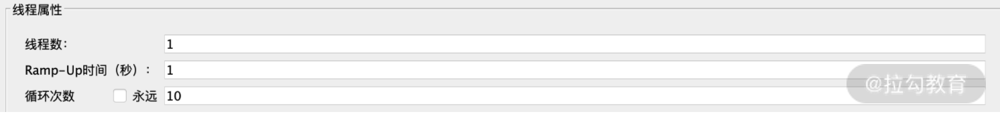
图 1：设置图 A

图 2：设置图 B
从两张图的对比中，我们可以看到图 1 和图 2 的区别在于线程数和循环次数，一个是 1 和 10，一个则是 10 和 1。从结果来看，图 1 和图 2 都是发送了 10 个请求，那它们的核心区别是什么呢？ 我们不妨来看两段代码演示。
先来看图 1 的代码演示：
for(int j=0;j<10;j++) {
System.out.println(Thread.currentThread().getName());//打印线程名字
}
这段代码我使用线程循环的方式打印运行线程的名字，运行后的内容如下：
Thread-0
......
Thread-0
Thread-0 //可以看到是基于同一个线程
再来看图 2 的代码演示：
for(int i=0;i<10;i++){
new Thread(new Runnable() {
public void run() {
System.out.println(Thread.currentThread().getName());
}
}).start();
} //示意代码
这段代码我是使用多线程的方式打印正在运行的线程，运行后效果如下：
Thread-0
......
Thread-8
Thread-9 //不同的线程
以上代码内容主要是打印线程的名字。不难看出，循环的方式是基于同一个线程反复进行 10 次操作，而多线程则启动了 10 个不一样的线程，虽然都是向服务器发送了 10 次请求，但这两种方式完成的时间和对系统的压力也完全不一样。
打个比方，我们需要掰 100 斤玉米，一组是 10 个人一起掰，一组只有 1 个人掰，每个人的速度如果是一致的，不用想就知道哪个组更快。这样的场景经常发生在使用 JMeter 利用接口造数据时，同样是造 1 万条数据，如果你觉得速度很慢，那你就可以考虑一下多线程了。但掰玉米用 10 个人的成本当然要比用 1 个人来得多，我们的压力场景也是这样的。通常压力场景都是多线程的，线程的多少也直接决定了对被测系统压力的大小。
Ramp-Up
Ramp-Up 其实是一个可选项，如果没有特殊要求，保持默认配置脚本即可。如果填 1，代表在 1 秒内所有设置线程数全部启动。不过这个是理论上的，实际启动时间也依赖于硬件的接受程度。如果硬件跟不上，启动时间自然也会增加。
在有的性能测试场景中，如果你不想在性能测试一开始让服务器的压力过大，希望按照一定的速度增加线程到既定数值，你就可以使用这个选项。比如我想用 10 个线程进行测试，启动速度是每秒 2 个线程，就可以在这里填 5，如下所示：

图 3：设置图 C
我们来通过运行展示一下。

图 4：生成线程数
我使用了监听器中的用表格查看结果插件。通过这组数据可以看到，每秒产生了 2 个新的线程，合计在 5 秒内完成。
组件和元件
了解了线程、循环和 Ramp-Up，接着来聊聊组件和元件。
组件和元件的关系
要解释组件首先就要说元件。我们看图 4 中的 HTTP 请求，其实这就是一个实际的元件。同样作为元件的还可以是 JDBC 请求、Java 请求等，这一类元件我们统一称为取样器，也就是组件。我用一个示意图来表示组件和元件的关系：

图 5：组件和元件关系图
如图所示，HTTP 请求、JDBC 请求等元件都从属于取样器。
组件的作用
JMeter 有多种组件，我们重点看下这七类： 配置元件、取样器、定时器、前置处理器、后置处理器、断言、监听器。我们来看下它们各自的作用。
- 配置元件：用于初始化变量，以便采样器使用。类似于框架的配置文件，参数化需要的配置都在配置元件中。
- 取样器：承担 JMeter 发送请求的核心功能，支持多种请求类型，如 HTTP、FTP、JDBC 等，也可以使用 Java 类型的请求进行自定义编写。
- 定时器：一般用来指定请求发送的延时策略。在没有定时器的情况下，JMeter 发送请求是不会暂停的。
- 前置处理器：在进行取样器请求之前执行一些操作，比如生成入参数据。
- 后置处理器：在取样器请求完成后执行一些操作，通常用于处理响应数据，从中提取需要的值。
- 断言：主要用于判断取样器请求或对应的响应是否返回了期望的结果。
- 监听器：监听器可以在 JMeter 执行测试的过程中搜集相关的数据，然后将这些数据在 JMeter 界面上以树、图、报告等形式呈现出来。不过图形化的呈现非常消耗客户端性能，在正式性能测试中并不推荐使用。
组件的顺序
了解正确的组件执行顺序可以帮助你明白在什么情况下应该添加什么组件，而不会添加错误的组件造成不必要的麻烦。我将它们做了一个排序，如下图所示：
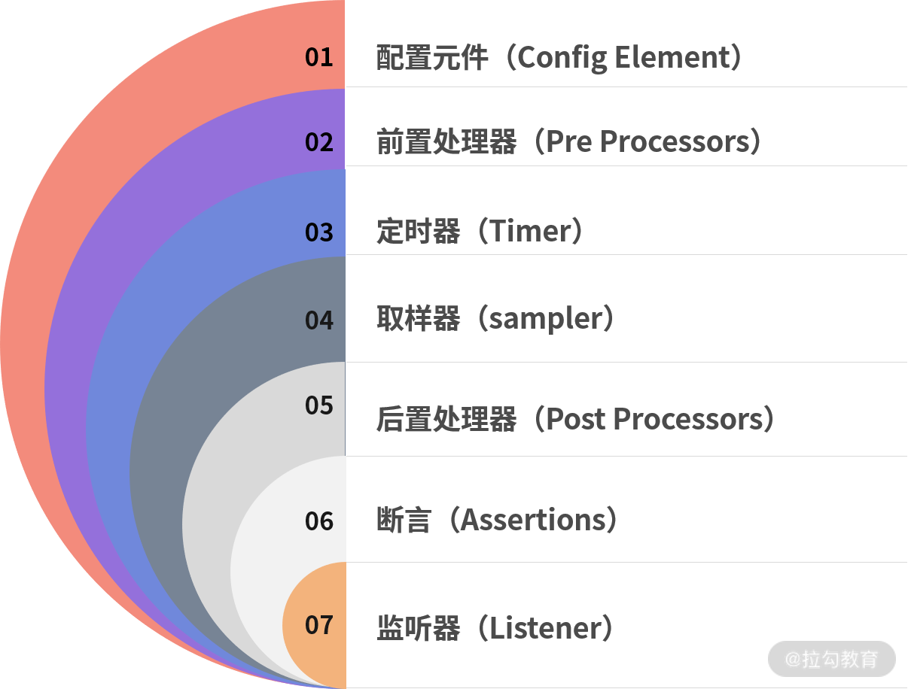
图 6：组件顺序
搞懂了组件顺序，你在测试前准备脚本生成参数化数据时，就可以在前置处理器中寻找相关元件；在要提取接口返回的数据，就可以在后置处理器中寻找相关插件，而不是在其他地方寻找数据，浪费时间。
我经常看到有的测试人员在需要在后置处理器中使用 BeanShell PostProcesor 的时候，错误地用了前置处理器中的 Beanshell PreProcessor，导致系统报错，无法实现预期的功能，甚至是测试无法进行下去。
元件作用域
以上说的都是组件相关的东西，这里就来看看元件作用域。我们先来看一张图：
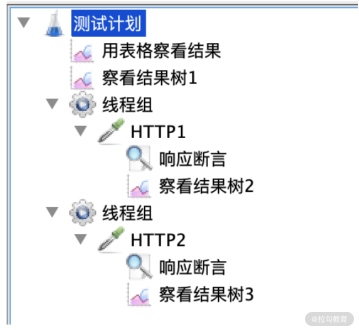
图 7：结果树 1、2、3
在图中可以看到，我在不同位置放了 3 个一样的元件“查看结果树”（为了方便区分，我分别标记了 1、2、3）。运行后发现，查看结果树 1（图 8）里面显示了 HTTP1 和 HTTP2，而插件结果树 2 里只有 HTTP1，查看结果树 3 里面只有 HTTP2。

图 8：查看结果树 1 的显示图
这是为什么呢？这就要说到元件作用域了。
通过截图可以发现 JMeter 元件除了从上到下的顺序外，有还具备一定的层次结构，比如图 5 中的响应断言和查看结果树，它相对于取样器存在父子组件的关系，说白了就是 HTTP 元件对取样器有效的区域，比如查看结果树 2 是 HTTP1 请求的子节点，那它就只对 HTTP1 生效；如果父节点是测试计划，那就会对测试计划下的 HTTP1 和 HTTP2 都生效。
分布式压测
压测就是 JMeter 通过产生大量线程对服务器进行访问产生负载，监听服务器返回结果并进行校验。在大部分情况下，用单台 JMeter 进行性能测试或者自动化测试是可行的，但在多线程运行过程中可能存在性能瓶颈，很多人在排查定位问题时经常会漏掉这一点。
从我的工作经验出发，单机的 JMeter 最好将线程数控制在 1000 以内；如果超过了 1000 线程，则建议使用 JMeter 分布式压测，这在一定程度上可以解决 JMeter 客户端自身形成的瓶颈问题。
在分布式 JMeter 架构下，JMeter 使用的是 Master 和 Slave。
Master
Master 负责远程控制 Slave（负载机）。分布式通常有多个 JMeter 节点，其中一个节点承担 Master 的作用。Master 通过发送信号控制节点机的启动和停止，并进行收集节点机的数据等操作。
Slave
Slave 一般也叫负载机，主要是发起线程来访问 target 服务器。一般在 Slave 节点机上先启动代理 jar 包，控制机远程连接，负载机运行脚本后对 Master 回传数据。流程示意图如下：
图 9：Slave 流程示意图
JMeter 的 Master 和 Slave 配置也比较简单。将 JMeter 的 bin 目录下的 jmeter.properties 文件配置：IP 和 Port 是 Slave 机的 IP 以及默认的 1099 端口。如下所示：
remote_hosts=ip:1099,ip:1099
Slave 启动 jar 包之后，默认会启动 1099 端口。Master 配置完成启动后便可以建立和 Slave 连接，从而进行控制和收集等操作。
一般来说，JMeter 分布式压测都是作为缓减客户端瓶颈的重要方式。这里我要强调“缓减”，因为在性能测试领域中不存在一种技术手段能够保证永远没有问题。随着公司的体量发展，对性能的要求也是水涨船高。JMeter 自带的分布式压测作为一种缓解客户端性能问题的方式，并不是万能法则。
总结
本讲我主要讲解了 JMeter 的核心设计理念，希望能够让你能对 JMeter 的核心概念有一定的理解。JMeter 作为目前最流行的性能测试工具，它本身提供的插件可以满足绝大多测试场景的使用，并且它也提供了二次开发的接口和 API，使用起来非常灵活。同时它分布式的使用方式也能够让你在较大程度上缓减客户端瓶颈。
02 JMeter 参数化策略
上一讲我梳理了 JMeter 的核心概念，希望你能够通过课程去理解并灵活的应用到实际工作中。这一讲我会带你学习一个重要的知识点：参数化。无论是从使用频率还是从参数化对性能测试结果的影响，它都是你做性能测试必须要掌握的。
参数化是什么
简单来说，参数化就是选取不同的参数作为请求内容输入。使用 JMeter 测试时，测试数据的准备是一项重要的 工作。若要求每次传入的数据不一样，就需要进行参数化了。
为什么要进行参数化
刚才说到，若要求每次传入的数据不一样，就需要进行参数化。那为什么会有这种要求呢？我们来看两个场景。
- 数据被缓存导致测试结果不准确
缓存原本是为了让数据访问的速度接近 CPU 的处理速度而设置的临时存储区域，比如 cache。如今缓存的概念变得更广了，很多空间都可以设置客户端缓存、CDN 缓存等等。
当你频繁地请求某一条固定的数据时，这条数据就很容易被缓存，而不是每次都从数据库中去获取，这就可能导致和真实的场景有差别。
比如大促有 10w 用户会从获取不同的商品信息，而你的压测中并没有进行充分的参数化，此时用大量线程反复请求同一件商品，极有可能访问的是缓存数据。从业务逻辑看接口返回并没有问题，但这样的场景几乎不会发生，这就会导致无效压测，测试的结果并没有多少意义。
- 流程不能正常执行
数据被缓存可能会导致测试结果不准确，但至少业务能够走通。还有的情况是，在没有参数化的情况下，会产生大量的业务报错。
打个比方，你在测试限购商品抢购，如果用多线程模拟同一个用户操作可能会直接报错，因为在生成订单接口（支付等）都会判断是否是同一个用户。
在要求每次传入的数据不一样时，如果不进行参数化会造成很多问题，以上我列举的两个场景基本概括了没有参数化时会发生的问题，希望你能在性能测试时多加注意。下面我们就来看如何实现 JMeter 参数化。
JMeter 参数化的实现方式
我列举了 3 种比较常见的 JMeter 参数化的实现方式，你可以根据自己的需要进行选择。
- CSV Data Set Config：将参数化的数据放入文件中，参数化读取依赖于文件操作。这样的参数化方式很常用，尤其适用于参数化数据量较多的场景，而且维护比较简单灵活。
- User Defined Variables：一般来说可以配置脚本中的公共参数，如域名，端口号，不需要随着压测进行动态改变，比较方便环境切换。
- Function Helper 中的函数：使用函数的方式生成参数，如果你需要随机数、uuid 等都可以使用函数生成。JMeter 还提供了相应的接口给你二次开发，自定义需要的功能。
CSV Data Set Config
CSV Data Set Config 的可配置选项较多，也是目前性能测试参数化时使用最多的插件，这里我就重点介绍一下 CSV Data Set Config。
在配置组件中添加元件 CSV Data Set Config，如下图所示：

图 1：CSV Data Set Config
我们来看一下 CSV Data Set Config 各项的含义。
文件名：顾名思义，这里填写文件的名字即可。
保存参数化数据的文件目录，我这边是将 user.csv 和脚本放置在同一路径下。在这里我要推荐一个小技巧，就是“相对路径”。使用绝对路径，在做脚本迁移时大部分情况下都需要修改。如果你是先在 Windows 或 Mac 机器上修改脚本，再将脚本上传到 Linux 服务器上执行测试的，那你就可以用相对路径，这样就不用频繁修改该选项了。
文件编码：指定文件的编码格式，设置的格式一般需要和文件编码格式一致，大部分情况下保存编码格式为 UTF-8 即可。
变量名称：对应参数文件每列的变量名，类似 Excel 文件的文件头，主要是作为后续引用的标识符，一般使用英文。如下图所示：

图 2：user.csv
图中我标示了 name 和 password，相对应 user.csv 中的第一列和第二列。
那如何引用需要的文件数据？通过“${变量名称}”就可以了，如下图所示：
图 3：引用演示图
忽略首行： 第一行不读取。比如图 2 的第一行我只是标示这一列是什么类型的数据，实际上并不是需要读取的业务数据，此时就可以采用忽略首行。
分隔符：用来标示参数文件中的分隔符号，与参数文件中的分隔符保持一致即可。
遇到文件结束符再次循环：是否循环读取参数文件内容。因为 CSV Data Set Config 一次读入一行，如果设置的循环次数超过文本的行数，标示为 True 就是继续再从头开始读入。
遇到文件结束符停止线程：读取到参数文件末尾时，是否停止读取线程，默认为 False。如果“遇到文件结束符再次循环”已经设置为 True 了，这个选项就没有意义了。
线程共享模式：这个适用范围是一个脚本里多线程组的情况。所有线程是默认选项，代表当前测试计划中的所有线程中的所有的线程都有效；当前线程组代表当前线程组中的线程有效；当前线程则表示当前线程有效。一般情况下，我们选择默认选项“所有线程”就好，“当前线程组”和“当前线程”很少会用到。
上面我介绍了参数化的意义以及常见用法，参数化对于性能测试是基础且必需的，因为在性能场景中，很多时候不进行参数化，脚本也是可以跑通的，所以有一些测试同学在这方面就会“偷工减料”，但这会造成性能数据不准确。下面，我们就来看一种特殊的参数化：关联。
特殊的参数化：关联
关联是将上个请求的数据提取需要的部分放到下个请求中，通过关联我们可以获取到满足业务特性的不同数据，因此可以认为是一种特殊的参数化。
关联的使用场景
我们来看一个例子，从例子中了解关联解决了什么问题。
我编写了一个查看订单接口，运行完成没有问题，并且返回正确的结果，如下所示：
{"data":{"code":0,"count":16,"items":[{"actualPrice":8900,"gmtCreate":1601448530000,"id":357,"orderNo":"1012020091448501002","skuList":[{"barCode":"150004","gmtCreate":1601448530000,"gmtUpdate":1601448530000,"id":389,"img":"https://demo.oss-cn-shenzhen.aliyuncs.com/bg/86338c9e576342baa0d079bc1caef9cc.jpg","num":1,"orderId":357,"orderNo":"1012020091448501002","originalPrice":10690,"price":8900,"skuId":2777,"spuId":1236771,"spuTitle":"昵趣 NaTruse 山羊奶配方狗狗洁齿骨 盒装 20g*40 支","title":"山羊奶","unit":"盒"}],"status":90},"msg":"第 1 页,共 1 条","pageNo":1,"pageSize":1，"total":1，"totalPageNo":2},"errmsg":"成功","errno":200,"timestamp":1609219480400}
一个小时之后，我再来运行这个接口时，却发现返回用户未登录：
{"errmsg":"用户尚未登录","errno":10001,"timestamp":1609220170295}
在所有入参都没有修改的情况下为什么会出现这样的情况呢？因为你看到返回的信息是用户未登录，也就是说用户信息是无效的。
这个接口使用 Token 验证用户，Token 有效期为 15 分钟，刚刚问题产生的原因就是 Token 过期了。
那如何保证查看订单接口信息中需要的 Token 都是有效的呢？其中一个方法就是查看订单接口之前调用登录接口获取 Token，把登录接口的 Token 传入查看订单接口中。这个过程其实就是“关联”。
JMeter 如何实现关联
JMeter实现关联有 3 种方式：边界提取器，通过左右边界的方式关联需要的数据；Json Extractor提取器，针对返回的 json 数据类型；正则表达式提取器，通过正则表达式去提取数据，实现关联。
正则表达式提取器是最为常用，也是这里我要向你介绍的关联方式。我们来看下面的例子：
图 4：正则表达式提取器
我们来看一下正则表达式提取器中每一项的含义。
- 引用名称：自己定义的变量名称以及后续请求将要引用到的变量名。在图中我填写的是“token”，则引用方式是“${token}”。
- 正则表达式：提取内容的正则表达式。“( )”括起来的部分就是需要提取的，“.”点号表示匹配任何字符串，“+”表示一次或多次，“？”表示找到第一个匹配项后停止。
- 模板：用“$ $”引用，表示解析到的第几个值给 token，图 4 中的正则表达式如下：
"accesstoken":(.+?),"gender":(.+?)
$1$ 表示匹配的第一个值，即 accesstoken 后匹配后的值，模板 $2$ 则匹配 gender 后的值。图 4 演示的实例中只有 1 个 token 值，所以使用的 $1$。
- 匹配数字：0 代表随机取值，1 代表第一个值。假设我返回数据的结构是：
[{"accesstoken":"ABDS88WDWHJEHJSHWJW","gender":null},{{"accesstoken":"NDJNW3U98SJWKISXIWN","gender":null}]
此时提取结果是一个数组，accesstoken 对应了多个值相当于数组，1 代表匹配第一个 accsstoken 的值“ABDS88WDWHJEHJSHWJW”。
- 缺省值：正则匹配失败时的取值。比如这里我设置的是 null（token 值取不到时就会用 null 代替）。上面我们已经匹配了 token 值，在被测接口传参处直接用“${token}”就可以了。

图 5：关联 Token
关联后就可以看到，每次都能进行正常的业务返回了。

图 6：关联后正常业务返回
总结
这一讲我介绍了参数化策略以及使用场景。作为性能测试中最常用到的操作，你不仅要学会基本操作，还需要思考参数化策略适合的场景以及参数化数据对性能测试的影响。说到这里，我就要问一个问题了：不同的参数对性能结果会不会有影响？
举个例子，在电商系统中，你准备了不同的用户数据，用户又分为不同的等级，不同的等级可能有不一样的优惠规则和对应的优惠券，每个会员的优惠券数量可能也不一样，那这些不同的会员信息分布会对性能测试的结果有什么样的的影响？欢迎在评论区给出你的思考。
03 构建并执行 JMeter 脚本的正确姿势
通过上两讲的学习，相信你已经掌握了 JMeter 的组件结构、关联、参数化等知识，这些是你使用性能测试工具的基础，那如何才能有效地执行这些脚本呢？
说到这个话题，我回想起一些找我咨询的同学。
有些团队在组建之初往往并没有配置性能测试人员，后来随着公司业务体量的上升，开始有了性能测试的需求，很多公司为了节约成本会在业务测试团队里选一些技术能力不错的同学进行性能测试，但这些同学也是摸着石头过河。他们会去网上寻找一些做性能的方案，通常的步骤是写脚本，出结果然后交给开发。这虽然能够依葫芦画瓢地完成一些性能测试的内容，但整个过程中会存在不少值得商榷之处。
这一讲我就以脚本为切入点，和你聊聊在脚本构建与执行过程中可能存在不规范的地方有哪些，以及如何去解决。
脚本构建
脚本构建就是编写脚本，是你正式开始执行性能测试的第一步，对于常规的请求来说只需要通过界面的指引就可以完成，这个是非常容易的，但是上手容易不代表你使用方法科学，下面我带你看看常见的误区。
一个线程组、一条链路走到底
先来看下这样一张线程组的图：

图 1：一个线程组
图中包含了注册、登录、浏览商品、查看订单等，它们在同一个线程组，基于同一线程依次进行业务。这样的做法其实和自动化非常相似。
比如张三先注册一个网站，然后进行登录、添加购物车等操作。但仔细想一想，对于一个网站的性能而言，这么考虑是有些问题的。
在正常情况下，基于同一个时间节点，一部分人在浏览商品，而另一部分人在下单。这两部分之间没有先后关系，人数占比也不一定就是 1:1。脚本中的设计思路实际上也是你对性能测试模型的理解，能够反馈出模型中的用户访问比例分布，这块内容我会在第二模块重点描述，不仅会讲述满足脚本的跑通，还会通过脚本构建基于性能模型的场景。
未提取公共部分，增加脚本管理难度
我在平时的工作中发现，有的测试会基于同一类型的 HTTP 请求，配置相同的 host、端口等，并没有很好地利用JMeter 中作用域的思想。
一般全链路级别的测试脚本里可能会包含上百个接口，对于一些 host 和端口号，并不需要每一个接口都去配置，我们可以使用一个 HTTP 请求默认值去做公共部分。如果说不提取这些公共部分，每改动一个配置，所有接口可能都要改动，这样脚本维护成本工作量也会比较大，有可能会造成“牵一发而动全身”的情况。
查看结果树使用频率高
在脚本调试过程中，我们通常会添加结果树来实时查看返回数据的正确性。这个插件本身是比较消耗性能的，在正式压测中应当禁止使用。一般来说，在脚本调试中通过作用域的思想去配置一个查看结果树就可以了，不要过度使用，不然等到正式压测的时候，一个个地禁用结果树不仅会消耗时间，还容易遗漏。
脚本逻辑复杂
有的测试在编写脚本的过程中为了区分业务逻辑，会使用很多插件，比如 if 判断、循环， 这些插件虽然可以让你进入不同的业务场景，但会增加脚本的复杂度，影响发起压力的效率。你可以自己做一些对比测试，看使用该插件和去除该插件实际的处理能力相差多少，不要因为自己的脚本结构而影响实际的性能测试结果。
以上是在脚本构建时，一些普遍存在的误区，而规范的脚本构建，我认为要做到真实和精简。
- 真实在于你的脚本可以体现出真实的用户访问场景；
- 精简在于少使用周边的插件，比如通过 JMeter 去监控服务器资源，这样的监控不仅简单粗糙，而且较大地影响 JMeter 的压力发起的效率。
脚本执行
在正确构建了脚本之后，我们就要来看如何执行脚本了。脚本执行就是你怎么去运行脚本，可能有的同学会一头雾水，我直接点击界面上的运行按钮不就行了吗？事实上真正的压测可不是这个样子的。
界面化执行性能测试
一些测试人员在 Windows 或 Mac 环境编写完脚本后，会直接用界面化的方式进行性能测试，这样的做法是非常不规范的。打开 JMeter 界面之后就会弹出提示，如图 2 所示：

图 2：界面化性能测试提示
很多人会选择直接忽略掉，但图中的第一段是这样的：
Don't use GUI mode for load testing！only for Test creation and Test debugging。For load testing，use NON GUI Mode。
中文意思就是图形化模式只让你调试，不要进行压测。
图形化的压测方式会消耗较多的客户端性能，在压测过程中容易因为客户端问题导致内存溢出。既然官方不推荐我们使用图形化界面，那我们应当如何执行测试脚本呢？
我们来看图 2 中的第三行内容：
jmeter -n -t [jmx file] -l [results file] -e -o [Path to web report folder]
官方早已给出答案：通过命令行执行。命令行执行的方式同样适用于 Windows、Mac 和 Linux 系统，不需要纠结系统兼容性的问题。
那既然命令行执行的方式不会造成这样的问题，为什么还要用界面化的方式呢？
相对于命令行执行，界面化的方式更为简单、方便，但命令行执行也并不是完美无缺的。
我们来回顾这段文字中的含义：
jmeter -n -t [jmx file] -l [results file] -e -o [Path to web report folder]
- -n 表示在非 GUI 模式下运行 JMeter；
- -t 表示要运行的 JMeter 测试脚本文件，一般是 jmx 结尾的文件；
- -l 表示记录结果的文件，默认以 jtl 结尾；
- -e 表示测试完成后生成测试报表；
- -o 表示指定的生成结果文件夹位置。
我们来看一下执行了上面的脚本后的实际效果，如图 3 所示：

图 3：脚本执行后的效果
从图中可以看到，命令行的方式直接产生了总的 TPS、报错和一些时间层级的指标。命令行的执行方式规避了一些图形化界面存在的问题，但这样的结果输出方式存在 2 个问题：
- 看不到实时的接口返回报错的具体信息；
- 看不到混合场景下的每个接口的实时处理能力。
这 2 个问题都有个关键词是“实时”，是在压测过程中容易遗漏的点。虽然压测之后我们有很多方式可以回溯，但在性能测试过程中，发现、排查、诊断问题是必不可少的环节，它能够帮助我们以最快的速度发现问题的线索，让问题迅速得到解决。
先来看第一点：看不到实时的接口返回报错的具体信息。
jmeter.log 刚刚执行过程中记录了哪些内容呢？如图 4 所示：

图 4：jmeter.log 执行时记录的内容
你可以看到只能显示报错率，但看不到具体的报错内容，那如何去解决呢？一般我会使用 beanshell，把判定为报错的内容增加到 log 里。beanshell 的示意代码如下所示，你可以根据自己的需求改进。
String response = prev.getResponseDataAsString();
//获取接口响应信息
String code = prev.getResponseCode();
//获取接口响应状态码
if (code.equals("200")){//根据返回状态码判断
log.info("Respnse is " + response);
//打印正确的返回信息，建议调试使用避免无谓的性能消耗
}else {
log.error("Error Response is"+response);
//打印错误的返回信息
}
这样就会自动在 jmeter.log 中打印出具体的报错信息，如图 5 所示：
图 5：报错信息
客户端的日志只是我们需要关注的点之一，排查错误的根因还需要结合服务端的报错日志，一般来说服务端的报错日志都有相关的平台记录和查询，比较原始的方式也可以根据服务器的路径找相关日志。
我们再来看第二个问题：看不到综合场景下的每个接口的实时处理能力。
我个人认为原生的实时查看结果是有些鸡肋的，如果想实时且直观地看到每个接口的处理能力，我比较推荐 JMeter+InfluxDB+Grafana 的方式，基本流程如下图所示：

图 6：JMeter+InfluxDB+Grafana
JMeter 的二次开发可以满足很多定制化的需求，但也比较考验开发的能力（关于二次开发，我会在《04 | JMeter 二次开发其实并不难 》中介绍）。如果不想进行二次开发，JMeter+InfluxDB+Grafana 也是一种比较好的实现方式了。
下面，我会对 InfluxDB 和 Grafana 做一个简单的介绍，包括特点、安装等。
InfluxDB
InfluxDB 是 Go 语言编写的时间序列数据库，用于处理海量写入与负载查询。涉及大量时间戳数据的任何用例（包括 DevOps 监控、应用程序指标等）。我认为 InfluxDB 最大的特点在于可以按照时间序列面对海量数据时候的高性能读写能力，非常适合在性能测试场景下用作数据存储。
安装
首先带你来看下 InfluxDB 具体的安装步骤（基于 CentOS 7.0），直接输入以下命令行即可：
#wget https://dl.influxdata.com/influxdb/releases/influxdb-1.1.0.x86_64.rpm
#rpm -ivh Influxdb-1.1.0.x86_64.rpm
#systemctl enable Influxdb
#systemctl start Influxdb
#systemctl status Influxdb （查看 Influxdb 状态）
基本操作
当你已经安装完成之后，我带你了解下如何操作 InfluxDB：
#influx
linux 命令行模式下进入数据库
#show databases
查看库
create database jmeter；
建库
use jmeter
使用该库
show measurements;
查看库下面的表
InfluxDB 成功安装并且建库之后，我们就可以来配置 JMeter 脚本了。配置过程可以分为以下 3 步。
（1）添加核心插件，在 listener 组件中选择 Backend Listener（如下图所示）。
图 7：添加 Backkend Listenner
（2）Backend Listener implementation 中选择第二项（如下图所示）。

图 8：Backend Listener implementation
（3）配置 InfluxDB URL，示例“http://127.0.0.1:8086/write?db=jmeter”；IP 为实际 InfluxDB 地址的 IP，DB 的值是 InfluxDB 中创建的库名字（如下图所示）。
图 9：配置连接 influxdb 库的具体信息
配置完后运行 JMeter 脚本，再去 InfluxDB 的 JMeter 数据库中查看是否有数据，有数据则代表如上链路配置没有问题。
我们再来了解一下 Grafana。
Grafana
Grafana 是一个跨平台的开源的度量分析和可视化工具，纯 JavaScript 开发的前端工具，通过访问库（如 InfluxDB），展示自定义报表、显示图表等。大多时候用在时序数据的监控上。Grafana 功能强大、UI 灵活，并且提供了丰富的插件。
安装步骤
在 linux 命令行下直接输入以下内容即可：
#wget https://dl.grafana.com/oss/release/grafana-6.4.4-1.x86_64.rpm
#下载 granafa
#yum install Grafana-6.4.4-1.x86_64.rpm
#安装，遇到需要输入的直接 y 就 ok；
#systemctl start Grafana-server
#systemctl enable Grafana-server
#启动 Grafana
#/etc/Grafana/Grafana.ini
配置文件路径，一般保持默认配置即可。
#systemctl status firewalld.service
查看防火墙状态，防止出现其他干扰问题，最好关闭
登录访问 Grafana 访问：http://127.0.1.1:3000（ip 自行替换，3000 为默认端口）
默认账号/密码：admin/admin
输入密码后如果出现了如下界面，说明 Grafana 安装成功了。

图 10：Grafana 界面
数据源配置
为什么要配置数据源呢，简单来说就是 Grafana 需要获取数据去展示，数据源的配置就是告诉你去哪里找数据，配置安装的 InfluxDB 地址和端口号，如下图所示：
图 11：配置地址和端口号
然后输入 InfluxDB 中写入的数据库名字，如下图所示：

图 12：数据库名字
输入完成之后可以 Save & Test，如出现以下示意图即配置成功：

图 13：配置成功
导入 JMeter 模板
为了达到更好的展示效果，Grafana 官网提供了针对性的展示模版。先下载 JMeter 模板，然后再导入 Grafana。

图 14：导入 JMeter 模板
配置完成后，运行 JMeter 脚本。如果在界面右上方下拉选择 5s，则每 5s 更新一次：

图 15：运行 JMeter 脚本
如上图便是完成了实时压测情况下运行结果的实时展示图，你可以以此为基础，进行多接口的数据采集，相应增加脚本里的 Backend Listener 插件，区分不同的 application name 名称，你会看到不同的接口数据都进入 influxdb 数据库中。并且 Grafana 从 Edit 中进入， 你可以根据不同的 application name 修改 SQL 来区分展示。

图 16：编辑 Grafana
总结
这一讲我们主要介绍了构建和执行性能测试脚本时的一些注意事项，总结了目前业内使用 JMeter 常见的方法。你不仅需要知道这些常见的手段，也需要知道为什么要这么做，这么做有什么好处，同样随着实际采集数据指标的增高，这些做法可能还会存在哪些缺陷或者注意点，如果上述内容你都能考虑清楚了，相信你也就掌握工具了。
04 JMeter 二次开发其实并不难
上一讲我们通过学习 JMeter 的脚本编写方式和执行方式，掌握了如何让 JMeter 更加有效地运行，其技术思路是使用 JMeter 本身或者社区提供的现成方案去实现，这基本已经满足了绝大多数性能测试的需求。
随着互联网行业发展，各种技术方案层出不穷，但是任何方案都不是万能的，有些需求是要我们自己写代码去实现的，JMeter 也留了相应的入口便于我们编写代码，所以本讲将介绍三种插件编写方式：
- 自定义 BeanShell 功能
- 自定义请求编写（Java Sampler）
- 自定义函数助手
自定义 BeanShell 功能
什么是 BeanShell
BeanShell 是由 Java 编写的，相当于一个小巧的 Java 源码解释器，简单来说就是你可以在里面写代码，然后通过 Beanshell 翻译成插件可以识别的指令去执行相关操作。
JMeter 中用 BeanShell 的优势
JMeter 也是由 Java 编写的，而 Java 运行前需要先编译，而 BeanShell 作为一款解释器直接运行源代码就可以。
BeanShell 在 JMeter 的作用
BeanShell 在 JMeter 中有着广泛的应用，包括前置处理器、后置处理器、Sampler 等，我们来看下这些主要应用是做什么的。
- 前置处理器：主要是在接口请求前做一些逻辑，生成参数化数据。
- 后置处理器：用于提取参数、参数格式设置等。
- Sampler：可以作为独立的请求，支持各类请求编写、数据生成。
BeanShell 的常见用法举例
对我来说，BeanShell 最常被用于对请求或者返回内容进行获取或者加工，其中 prev 是对当前的取样进行访问，执行了对响应状态码、响应信息、请求头等的操作，示例如下：
log.info("code is "+prev.getResponseCode());
#获取响应的状态码
log.info("response is "+prev.getResponseDataAsString());
#获取响应信息
log.info("content_type "+prev.getContentType());
#获取头文件中ContentType类型
log.info("header "+prev.getRequestHeaders());
#获取取样器请求首部字段
通过以上方式，基本实现了对请求的基本信息的获取，然后你就可以对这些信息做进一步的提取、判断等操作。可能你会问我，使用 info 级别的日志打印，JMeter 还支持 error 级别的日志打印吗？答案是支持的，示例如下：
log.error("cctester");
log.info("cctester");
你可以在 BeanShell 中自行验证下，使用 log 和 error 的方式对于 JMeter 的界面提示信息是否有区别。
JMeter 调用 BeanShell 解释器来运行脚本，同样需要注意的是不建议过度使用这个插件， 因为在 JMeter 高并发时，它将会消耗较多的本地资源，所以一般遇到逻辑相对复杂且代码量较大的情况，我们会使用 JMeter 的另一种特色功能：开发自定义插件（jar 形式），一般来说自定义的插件会帮助我们实现两方面功能：
- JMeter 本身需要自行拓展的请求或者不支持的测试协议，我们可以使用 Java 请求来完成；
- 自定义辅助函数，协助我们进行性能测试。
自定义请求编写（Java Sampler）
为了让你能够系统地学习 Java Sampler 的编写，我将分为如下四部分来介绍。
- 什么是 Maven
- 什么是 Pom
- 实现 Java Sampler 功能的两种方式
- 实例：使用 Java Sampler 重写 POST 请求
什么是 Maven
Maven 是一个项目管理工具，它可以很方便地管理项目依赖的第三方类库及其版本，说得再通俗一点：
- 没有它之前你得手动下载对应的 jar，并且复制到项目里面，升级的话又得重新下载；
- 有了 Maven 之后你只需要填写依赖的包名词及其版本号，就能自动帮你下载对应的版本然后自动进行构建，如果说 Maven 只是名字或者代号，那么灵魂就是 Pom 了。
什么是 Pom
在 Maven 里，project 可以没有代码，但是必须包含 pom.xml 文件。pom 文件是 Maven 对应的配置文件，我们依赖的相关信息可以在 pom.xml 中进行配置，它必须包含 modelVersion、groupId、artifactId 和 version 这四个元素，下面来看下这些元素具体的作用。
- modelVersion：指定了当前 POM 模型的版本，对于 Maven 2 及 Maven 3 来说都是 4.0.0。
<modelVersion>4.0.0</modelVersion>
- groupId：组织标识、项目名称。
<groupId>com.cctester</groupId>
- artifactId：模块名称，当前项目组中唯一的 ID。
<artifactId>mavenTest</artifactId>
- version：项目当前的版本号。
<version>1.0-SNAPSHOT</version>
- packaging：打包格式，可以为 jar、war 等。
<packaging>jar<packaging>
开发之前在 pom 文件里引入相应的 jar 包，这些 jar 包会给我们提供相应的类或者接口，引入方式如下所示：
<dependency>
<groupId>org.apache.jmeter</groupId>
<artifactId>ApacheJMeter_core</artifactId>
<version>5.3</version>
</dependency>
<dependency>
<groupId>org.apache.jmeter</groupId>
<artifactId>ApacheJMeter_java</artifactId>
<version>5.3</version>
</dependency>
实现 Java Sampler 功能的两种方式
- 继承 AbstractJavaSamplerClient 抽象类；
- 实现 JavaSamplerClient 接口。
通过阅读源码可以发现 AbstractJavaSamplerClient 抽象类是 JavaSamplerClient 接口的子类，想必我们都知道实现一个接口就必须实现接口里的所有方法，然而当你不需要实现所有方法时，继承 AbstractJavaSamplerClient 抽象类也是一个不错的选择。为了学习的全面性我就以实现 JavaSamplerClient 接口的方式去讲解所涉及的四个方法。
（1）如下所示，这个方法由 JMeter 在进行添加 JavaRequest 时第一个运行，它决定了你要在 GUI 中默认显示哪些属性。当每次在 GUI 里点击建立 java requst sampler 的时候会调用该方法。该方法设置了 parameters 的初始值，也可以在 sampler 的 GUI 界面做进一步的修改。
public Arguments getDefaultParameters() {}
（2）如下所示，这个方法用于初始化测试脚本里面用到的变量，这些变量会在后续执行中使用。
public void setupTest(JavaSamplerContext context) {}
（3）如下所示，这个方法是实现功能逻辑的主方法，每个线程会循环执行这个方法。
public SampleResult runTest(JavaSamplerContext context) {}
- 计时开始的时刻是从 SampleResult 类里面的 sampleStart() 方法执行开始。
- 计时结束的时刻是 sampleEnd() 方法执行结束。
- setSuccessful() 方法用来表示测试的成功与否，通常使用 try catch 来设置结果，也可以用 if 语句。
- setResponseData() 方法用来为测试结果传递数据。
（4）如下所示，这个方法在每个线程执行完所有的测试工作之后执行，有点像 finally 的功能，比如，我开了一个数据库的连接，那么我要在所有的线程完成工作后关闭。
public void teardownTest(JavaSamplerContext context) {}
案例：使用 JavaSampler 重写 HTTP 的 POST 请求
相信你在平时工作中会经常接触到 POST 请求，接下来我将举一个有更多代入感的例子。
（1）首先我们来完成 POST 请求的核心方法，先使用 HttpClients 发送构建的 POST 数据包，然后获取到返回值，这一步是完成 POST 请求的基本步骤，示例代码如下：
//HttpClients提供功支持 HTTP 协议的客户端工具
httpClient = HttpClients.createDefault();
//新建一个HttpPost请求的对象将url，接口参数等信息传给这个对象
HttpPost httpPost = new HttpPost(URL);
//传入请求参数
httpPost.setEntity(new UrlEncodedFormEntity(Value, UTF8_CHARSET));
// 设置header信息，指定报文头Content-type等
httpPost.setHeader("Content-type", "xxxxx")；
// 执行请求操作，并拿到结果
response = httpClient.execute(httpPost);
（2）接下来实现 JavaSamplerClient 接口，这是编写 Java Sampler 插件需要实现的核心接口，涉及的方法是 getDefaultParameters() 和 runTest()，作用上文已经描述过。下面带你来看具体怎么使用的，如下代码所示：
//这是决定我们JMeter界面需要输入的内容，你可以看到有了url，username 和password信息，并且给出了默认值
public Arguments getDefaultParameters() {
Arguments arguments = new Arguments();
arguments.addArgument("url","127.0.0.1:9081");
arguments.addArgument("username", "cctester");
arguments.addArgument("password", "password");
return arguments;
}
这一步实际的效果图可以看下方的初始界面图。

初始界面图
（3）在上一步骤进行了参数的输入，接下来实现接收这些参数，并进行参数的输入、发送、返回判断等，如下代码所示：
public SampleResult runTest(JavaSamplerContext javaSamplerContext) {
//生成sampleResult对象，用于请求的命名、标记状态、添加返回内容等
SampleResult sampleResult=new SampleResult();
sampleResult.setSampleLabel("cctester_login");
//调用上文中实现的post请求
PostTest postTest=new PostTest();
//接受JMeter界面上传输的参数
String username = javaSamplerContext.getParameter("username");
String password = javaSamplerContext.getParameter("password");
String url = javaSamplerContext.getParameter("url");
//标记请求开始
sampleResult.sampleStart();
try {
HttpResponse result =postTest.Request(url,username,password);
String entity= EntityUtils.toString(result.getEntity());
//根据返回内容判断结果状态并展示结果
if (result.getStatusLine().getStatusCode()==200){
sampleResult.setSuccessful(true);
sampleResult.setResponseCodeOK();
sampleResult.setResponseData(entity, "utf-8");
}else {
sampleResult.setSuccessful(false);
sampleResult.setResponseData(entity, "utf-8");
）
（4）完成后打成 jar 包放到 /lib/ext 下重启 JMeter 即可，实际的效果图你可以参考上方的初始界面图和下方的运行图。
运行图
自定义函数助手
通过 Java Sampler 插件开发的学习，我们知道 JMeter 相关插件的开发其实都是有一定的套路可循，那 JMeter 函数助手开发也不例外，接下来进行函数助手开发流程的了解。
（1）引入 Maven 包，这个包会给我们提供函数助手开发相关的类，如下代码所示：
<dependency>
<groupId>org.apache.jmeter</groupId>
<artifactId>ApacheJMeter_functions</artifactId>
<version>5.3</version>
</dependency>
（2）接下来新建我们的类包，此时新建的包需要特别注意，名字只能是 functions 结尾，否则打包放到 JMeter 中是没有办法识别这个插件的，然后代码中继承 AbstractFunction 类就可以实现，一起看下需要实现哪些方法。
public String getReferenceKey() {}
这一方法表示函数助手对话框中的下拉框中显示的函数名称，如下图所示：

public List<String> getArgumentDesc() {}
这一方法是设置入参的描述语，用于函数助手对话框中，显示函数名称提示。
public void setParameters(Collection<CompoundVariable> collection) {}
这一方法用于我们的参数值传入。
public String execute(SampleResult sampleResult, Sampler sampler){}
这一方法是根据入参，执行核心逻辑，保存结果至相应的变量中。
总结
通过本讲的学习，你知道了如何使用代码方式实现自己需要的插件，beanshell 和 jar 包引入都是工作中常见的，相信这部分知识会对你的工作产生比较大的帮助，这也是 JMeter 的特色功能，不仅落地性强而且社区资料完善。
这里给你留个小作业：相信经过上文的讲解以及实例，你比较清楚地知道了插件开发的核心流程，你可以根据自己工作中的自定义函数助手的需求，按照上面的代码结构自行完成。在实践过程中遇到任何问题，欢迎在留言区留言。
05 如何基于 JMeter API 开发性能测试平台？
上一讲我带你学习了 JMeter 二次开发，通过对 JMeter 提供的接口或者抽象类方法重写可以自定义所需要的 JMeter 插件。这一讲我将带你了解如何开发一个性能测试平台。
目前测试界比较热门的一个方向就是开发测试平台，平台级别的性能测试能减少重复劳动、提升效率，也方便统一管理，自然受到了市场的欢迎，测试平台开发能力也成了资深测试人员的必备技能之一。
本专栏，我们应用的主要性能测试工具是 JMeter，那开发性能测试平台需要什么样的能力呢？我认为需要以下能力：
- 具备较好的 Java 开发能力，JMeter 本身是 Java 开发，提供了较多的接口，所以使用 Java 开发具备天然的优势；
- 平台主要通过 Web 网页展示，需要具备较好的前端开发能力，目前 Vue 是比较流行的前端框架；
- 熟悉 JMeter 源码结构，尤其是 JMeter 提供的相关 API。
构建性能测试平台的必要性
为什么我会如此推荐你去开发性能测试平台呢？回想一下你在工作中是否遇到过以下场景：
- B 同学如果需要 A 同学写完的脚本，A 只能单独发给 B，如果 A 的脚本有变化，不能实时同步到 B，而且发送的过程也存在沟通成本和时间差；
- 测试执行后，需要将测试结果同步给开发者，很多测试都是手动截图，不仅方式原始而且还会存在信息缺失的情况；
- 结果追溯时，我们需要找一些历史数据却发现并没有存档或共享。
这些场景使我们的性能测试平台具有了更多现实意义，我们希望有一个可以协作共享，并能够追溯历史数据的性能测试平台。基于这点我梳理了性能测试平台的基础功能，如下图所示：
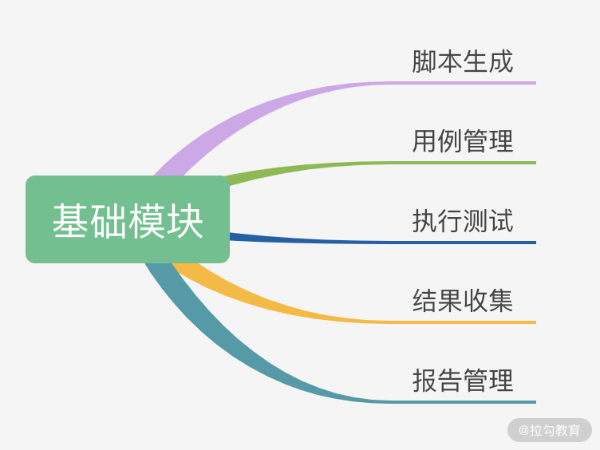
图 1：性能测试平台基础功能
目前市面上的性能测试平台大多是基于 JMeter 提供的 API 开发的，核心流程如下图所示：
图 2：性能测试平台开发核心流程
接下来我们根据这 4 个阶段来学习如何使用 JMeter 的 API 实现性能测试。
环境初始化
JMeter API 在执行过程中，首先会读取 JMeter 软件安装目录文件下配置文件里的属性，所以我们要通过 JMeter API 读取指定的 JMeter 主配置文件的目录以及 JMeter 的安装目录；此外，我们还需要初始化 JMeter API 运行的语言环境（默认是英语）和资源。以上便是 JMeter API 做初始化的目的。
其中环境初始化主要包括以下 2 个步骤：
- 通过 JMeterUtils.loadJMeterProperties 加载安装目录的 JMeter 主配置文件 JMeter.properties，然后把 jmeter.properties 中的所有属性赋值给 JMeterUtils 对象，以便在脚本运行时可以获取所需的配置；
- 设置 JMeter 的安装目录，JMeter API 会根据我们指定的目录加载脚本运行时需要的配置，例如 saveservice.properties 配置文件中的所有配置。
参考代码如下：
JMeterUtils.loadJMeterProperties("C:/Program Files/JMeter/bin/jmeter.properties");
JMeterUtils.setJMeterHome("C:/Program Files/JMeter");
JMeterUtils.initLocale();
这样一来，我们就实现了环境初始化，代码中的目录可以根据自己实际的目录设置。
脚本加载
脚本加载可以构建 HashTree，然后把构建的 HashTree 转成 JMeter 可执行的测试计划，进而执行测试用例。HashTree 是 JMeter API 中不可缺少的一种数据结构，在 JMeter API 中，HashTree 有 2 种构建方式，分别是本地脚本加载和创建脚本文件。
先来说本地脚本加载的方式。用 JMeter 客户端手动生成 jmx 脚本文件后，我们可以通过 SaveService.loadTree 解析本地的 jmx 文件来运行脚本，核心步骤如下：
//加载本地 jmx 脚本
HashTree jmxTree = SaveService.loadTree(file);
由于本地脚本是 JMeter 客户端手动生成的，所以这里只需要做读取文件操作即可，loadTree 会把 jmx 文件转成内存对象，并返回内存对象中生成的 HashTree。
那创建脚本文件是怎么做的呢？它是通过 API 构建测试计划，然后再保存为 JMeter 的 jmx 文件格式。核心步骤如下图所示：
图 3：脚本文件创建步骤
该方式需要自己构建 HashTree，我们可以参考 JMeter 客户端生成的 jmx 文件。
通过观察 jmx 文件我们可以知道需要构建的 jmx 结构，最外层是 TestPlan，TestPlan 是 HashTree 结构，包含 ThreadGroup（线程组）、HTTPSamplerProxy、LoopController（可选）、ResultCollector（结果收集）等节点。
接下来我将讲解 JMeter API 创建脚本文件的 6 个步骤，这 6 个步骤也是我们通过 JMeter 客户端创建脚本最常用的步骤，它们依次是创建测试计划、创建 ThreadGroup、创建循环控制器、创建 Sampler、创建结果收集器以及构建 tree，生成 jmx 脚本。
（1）创建测试计划
先生成一个 testplan，之后所有的测试活动都在 testplan 下面进行。代码如下：
try {
TestPlan testPlan = new TestPlan("创建 JMeter 测试脚本");
testPlan.setProperty(TestElement.TEST_CLASS, TestPlan.class.getName());
testPlan.setProperty(TestElement.GUI_CLASS, TestPlanGui.class.getName());
testPlan.setUserDefinedVariables((Arguments) new ArgumentsPanel().createTestElement());
通过以上代码，我们生成了 testplan。
（2）创建 ThreadGroup
ThreadGroup 是我们平时使用的线程组插件，它可以模拟并发用户数，一个线程通常认为是模拟一个用户。代码如下：
ThreadGroup threadGroup = new ThreadGroup();
threadGroup.setName("Example Thread Group");
threadGroup.setNumThreads(1);
threadGroup.setRampUp(1);
threadGroup.setSamplerController(loopController);
threadGroup.setProperty(TestElement.TEST_CLASS, ThreadGroup.class.getName());
threadGroup.setProperty(TestElement.GUI_CLASS, ThreadGroupGui.class.getName());
以上是我们使用 JMeter API 创建 ThreadGroup 的代码，它实现了我们线程数的设置，如启动设置等。
（3）创建循环控制器
这一步是一个可选项。我们在实际测试过程中，可以选择多线程的循环或者按时间段进行。创建循环控制器是为了模拟一个用户多次进行同样操作的行为，不创建循环控制器则默认是只执行一次操作。循环控制器创建的代码如下：
LoopController loopController = new LoopController();
//设置循环次数，1 代表循环 1 次
loopController.setLoops(1);
loopController.setFirst(true);
loopController.setProperty(TestElement.TEST_CLASS, LoopController.class.getName());
loopController.setProperty(TestElement.GUI_CLASS, LoopControlPanel.class.getName());
loopController.initialize()
（4）创建 Sampler
这一步来创建我们的实际请求，也是我们 JMeter 真正要执行的内容。以 HttpSampler 为例，创建 HttpSampler 是为了设置请求相关的一些信息，JMeter API 执行脚本的时候就可以根据我们设置的一些信息（比如请求地址、端口号、请求方式等）发送 HTTP 请求。
// 2.创建一个 HTTP Sampler - 打开 本地一个模拟地址
HTTPSamplerProxy httpSamplerProxy = new HTTPSamplerProxy();
httpSamplerProxy.setDomain("127.0.0.1:8080/index");
httpSamplerProxy.setPort(80);
httpSamplerProxy.setPath("/");
httpSamplerProxy.setMethod("GET");
httpSamplerProxy.setName("Open ip");
httpSamplerProxy.setProperty(TestElement.TEST_CLASS, HTTPSamplerProxy.class.getName());
httpSamplerProxy.setProperty(TestElement.GUI_CLASS, HttpTestSampleGui.class.getName());
以上按照一个 HTTP 的请求方式设置了 IP、端口等。
（5）创建结果收集器
结果收集器可以保存每次 Sampler 操作完成之后的结果的相关数据，例如，每次接口请求返回的状态、服务器响应的数据。
我们可以根据结果数据做一些性能指标计算返回给前端，如果在这里创建了结果收集器，那第 4 个阶段“结果收集”中就不用再创建了。创建代码如下：
ResultCollector resultCollector = new ResultCollector();
resultCollector.setName(ResultCollector.class.getName());
（6）构建 tree，生成 jmx 脚本
以上第 2 步到第 5 步其实都是创建了一个 HashTree 的节点，就像我们用准备好的零件去拼装一辆赛车。我们把创建的这 4 个节点都添加到一个新建的子 HashTree 节点中，然后把子 HashTree 加到第 1 步的 testplan 中，最后再把 tesplan 节点加到构建好的父 HashTree 节点，这样就生成了我们的脚本可执行文件 jmx。代码如下：
HashTree subTree = new HashTree();
subTree.add(httpSamplerProxy);
subTree.add(loopController);
subTree.add(threadGroup);
subTree.add(resultCollector);
HashTree tree = new HashTree();
tree.add(testPlan,subTree);
SaveService.saveTree(tree, new FileOutputStream("test.jmx"));
} catch (IOException e) {
e.printStackTrace();
}
通过以上代码我们可以创建出 JMeter 可识别的 HashTree 结构，并且可以通过 saveTree 保存为 test.jmx 文件。
到这里我们就完成了创建脚本文件的流程。我在这一讲的开始提到：脚本加载可以构建 HashTree，然后把构建的 HashTree 转成 JMeter 可执行的测试计划，进而执行测试用例。因此，我们接下来进入第 3 个阶段：测试执行。
测试执行
通过脚本文件的执行（测试执行），我们便可以开始对服务器发起请求，进行性能测试。测试执行主要包括 2 个步骤：
- 把可执行的测试文件加载到 StandardJMeterEngine；
- 通过 StandardJMeterEngine 的 run 方法执行，便实现了 Runable 的接口，其中 engine.run 执行的便是线程的 run 方法。
//根据 HashTree 执行测试用例
StandardJMeterEngine engine = new StandardJMeterEngine();
engine.configure(jmxTree);
engine.run();
通过以上代码，我们完成了代码方式驱动 JMeter 执行的核心步骤。
结果收集
性能实时数据采集可以更方便发现和分析出现的性能问题。我们在性能测试平台的脚本页面点击执行了性能测试脚本，当然希望能看到实时压测的性能测试数据，如果等测试完再生成测试报告，时效性就低了。
性能测试平台结果收集的流程图如下：
图 4：结果收集流程图
上面流程图中与 JMeter 关联最密切的是第 1 步，获取 JMeter 结果数据。那我们如何获取这些数据呢？
JMeter 性能测试用例执行完成之后会生成结果报告，既然生成了结果报告，那 JMeter 源码里一定有获取每次 loop 执行结果的地方。我们可以找到这个类，然后新建一个类去继承这个类，再重写每次结果获取的方法就能得到实时结果了。如果获取每次 loop 执行结果的是私有方法，我们也可以通过反射拿到它。
既然是这样，那关键就是找到， JMeter 执行中是在哪个类、哪个方法里拿的每次 loop 的结果。
通过查看 JMeter API 可以发现，JMeter API 提供了一个结果收集器（ResultCollector），从结果收集器的源码中可以找到获取每次 loop 执行结果的方法。结果收集器的部分源码如下所示：
/**
* When a test result is received, display it and save it.
*
* @param event
* the sample event that was received
*/
@Override
public void sampleOccurred(SampleEvent event){...}
分析以上代码得知，我们可以重写 sampleOccurred 方法来收集每次 loop 的结果。该方法的参数 SampleEvent 中有我们需要的实时监控数据，这样实时监控就变得简单了。接下来，我以单客户端获取 QPS 实时监控数据为例，讲解性能测试平台结果收集相关代码实现的思路。
单客户端获取 QPS 实时监控数据，首先需要新建一个类继承 ResultCollector，并且重写 sampleOccurred 方法，但是这里有个问题：怎么接收 SampleEvent 里面的实时监控数据，或者说怎么取出来在我们的业务代码里应用呢？我们可以在 sampleOccurred 把监控数据存起来，然后写个接口读取存储的数据返回给前端。
图 4 中有一个中间件，这个中间件可以是内存数据库，也可以是消息组件，根据中间件的不同有以下 2 种实现方式。
- 把需要的监控数据存在静态 map 里，接口读取 map 里的数据返回给前端。这种方法虽然有利于初学者快速实现，但它的数据是存在内存中的 ，并且没有做持久化处理，容易出现丢失的情况，所以我们一般只在演示中使用。
- 把数据存到消息队列里面，接口将消费队列的数据返回给前端。这是目前在互联网公司中较为常用的使用方式，在高并发下可靠性也不错。
下面我来讲解下第 2 种方式的代码：
- 新建一个类继承 ResultCollector 重写 sampleOccurred 方法，使用 Kafka 接收消息；
public class CCTestResultCollector extends ResultCollector {
public static final String REQUEST_COUNT = "requestCount";
public CCTestResultCollector() {
super();
}
public CCTestResultCollector(Summariser summer) {
super(summer);
}
@Override
public void sampleOccurred(SampleEvent event) {
super.sampleOccurred(event);
......
//代码片段,使用 kafka 发送消息
producer.send(new ProducerRecord<String,Integer>("monitorData","requestCount", requestCountMap.get(REQUEST_COUNT) == null ? 0 : (requestCountMap.get(REQUEST_COUNT) + 1)));
}
}
- 后端获取存储的实时采集数据，这一步是后端获取数据并进行计算，生成的数据给前端展示使用。
@PostMapping("getMonitorData")
public Result getMonitorData(@RequestBody MonitorDataReq monitorDataReq) {
Map<String,Object> monitorDataMap = new HashMap<>();
Long monitorXData = monitorDataReq.getMonitorXData();
......
//kafka 消费消息代码片段，仅做示例演示
while (true) {
//获取 ConsumerRecords，一秒钟轮训一次
ConsumerRecords<String, String> records = consumer.poll(Duration.ofMillis(1000));
//消费消息，遍历 records
for (ConsumerRecord<String, String> r : records) {
System.out.println(r.key() + ":" + r.value());
if("requestCount".equals(r.key())){
//r.value 便可以获取到我们上个代码片段发送的消息，然后对 requestCount 做计算，计算后的值 put 到 monitorDataMap 后返回给前端；
......
}
}
}
return Result.resultSuccess(null, monitorDataMap, ResultType.GET_PERFORMANCE_REPORT_SUCCE
}
实现后的效果图如下：
图 5 ：效果图
其中横坐标是时间，纵坐标是实时处理能力的展示，可以看到每秒请求次数在 400 ~ 600 之间波动。
总结
这一讲我主要介绍了性能测试平台的功能模块划分，JMeter API 核心功能的 4 个阶段：环境初始化、脚本加载、测试执行和结果收集，并对脚本构建的 2 种方式和获取监控数据部分的代码实现思路做了一个详细的分析，同时贴出了关键部分的代码。
希望这一讲能够对你在开发性能测试平台时有所帮助，特别是关于平台实现还没有找到切入点的同学，性能测试平台开发相关的大多数需求都可以在这一讲的基础上扩展。
到此，我们对于工具的学习也告一段落了，通过模块一的学习，你不仅知道了工具的原理，还知道了它们的基础使用方法以及拓展方法。希望你也能在日常工作中，把这些工具用起来，有任何问题，都欢迎在留言区交流。
06 Nginx 在系统架构中的作用
通过上一模块的学习，相信你已经掌握了 JMeter 工具的核心用法和技能，并且可以在 JMeter工具使用方面游刃有余。这些内容不仅仅可以帮助你提升工作效率，而且能够通过二次开发解决团队内部的定制化需求。
这一讲我将带你认识一个常用的高性能中间件 Nginx，在正式学习该讲之前，我先跟你聊聊为什么要学习 Nginx，有一位细心的读者给我留言：
第二模块好像都是在围绕如何写一份优秀的性能方案展开，为什么有一篇关于 Nginx 的文章呢？
首先不得不说这个同学的行为很值得我们学习，通过大纲尝试去理清学习的整体架构和逻辑。
很多同学向我反馈在写方案时有一个核心痛点，即不知道如何制定性能测试的目标。都说要参考真实数据，公司也没有提供相关的查询接口，所以不清楚去哪里获取用户的访问数据。而 Nginx 作为业内最常用的代理服务器，较为详细地记录了用户的访问数据，而且在分布式部署性能优化方面也发挥了积极的作用，所以说到性能测试，Nginx 是不得不提的一个中间件。
本讲就带你学习 Nginx 在应用架构中的作用，并从性能测试角度看如何利用 Nginx 数据统计用户访问量。
Nginx 重要的两个概念
代理
首先要来解释一下什么是代理，正向代理和反向代理是什么意思？各自作用是什么？不少同学经常听到这些名词，但往往分不清楚具体区别是什么。
什么是代理？
举个例子，比如你很想到某公司去做测试，对方公司的测试主管并不认识你，你也不知道这位测试主管的联系方式，但是你的朋友小王认识，他帮你推荐了简历，此时的小王就起到代理的作用，相当于一个渠道。
正向代理
正向代理的特点是你非常清楚地知道你要去哪儿，访问什么服务器，但服务器并不关心你的出发地是哪里，它只知道你从哪个代理服务器过来。
举个例子，北京去哈尔滨的高铁班次，对于目的地哈尔滨而言，它只知道这部分人是从北京过来的，但是并不清楚这些人之前是不是先从上海或者其他地方先到北京，再转车过来。
反向代理
刚刚说了正向代理，那反向代理又是什么呢？我先来说一下应用场景，比如我们的内部服务器集群，是不可能直接暴露出来让外网访问的，这样安全风险就非常大；再比如现在很多网站为了提高性能都采用了分布式部署，通过多台服务器来缓减服务端的压力，这些都可以通过 Nginx 来完成。
那我们的外网用户如何能够访问到内部的应用呢，Nginx 可以暴露端口给外网用户访问，当接收到请求之后分发给内部的服务器，此时的 Nginx 扮演的是反向代理的角色。这样一个过程，客户端是明确的，但对于访问到哪台具体的应用服务器是不明确的。就好像一个上海飞北京的班次，可能还有很多乘客到达北京之后会去沈阳、哈尔滨等，对于出发地上海而言，这个是不关心的。
负载均衡
负载均衡是 Nginx 最重要也是最常见的功能，为什么需要负载均衡呢？你可以想一想，比如你线上只有一台应用服务器，如下图所示。

但是随着用户体量的上升，一台服务器并不能支撑现有用户的访问，那你就会考虑使用两台或者多台服务器，如下图所示：

那用户如何能够相对均匀地访问到这些服务器呢，这就需要你去了解 Nginx 的负载均衡策略，简单来说，就是 Nginx 如何分发这些请求到后面的应用服务器集群，下面我介绍下 Nginx 的三种分配策略。
（1）轮询
也就是使用平均分配的方式，将每个请求依次分配到配置的后端服务器上。除非有服务宕机，才会停止分发。如下代码所示：
upstream localhost {
//分发到各应用服务
server 127.0.0.1:7070;
server 127.0.0.1:7071;
}
server{
//Nginx核心监听端口
listen 8012;
server_name localhost;
location / {
proxy_pass http://localhost;
proxy_set_header Host $host;
proxy_set_header X-Real-IP $remote_addr;
proxy_set_header X-Forwarded-For $proxy_add_x_forwarded_for;
}
}
（2）权重
权重即配置轮询的比重，为什么需要这么配置呢？在真实的互联网场景下，很多服务器上都会配置多个应用，这样会导致每台服务器的资源占用不一致，所以在分布式部署配置下也需要注意这一点：
- 相对空闲的机器可以多配置访问比例；
- 比较繁忙的机器可以少配置一些。
如下代码所示，其中 ip1、ip2 以及 port 需要配置你实际的部署 ip 和 port。
upstream test {
server ip1:8080 weight=9;
server ip2:8081 weight=1;
}
（3）ip_hash
但上面两种配置方式在电商场景下有个很常见的问题，比如你登录了一个网站，登录信息已经保存到 a 机器，但当你做后续操作时的请求会到 b 机器，那么就获取不到你原来登录的信息，此时你就需要重新登录了。这样的情况是用户肯定不能接受的，ip_hash 模式就可以很好地解决这个问题，让每次访问能基于同一用户访问固定的服务器。
ip_hash 模式配置示例如下：
upstream test {
ip_hash;
server localhost:8080;
server localhost:8081;
}
接着我们来看下如何基于 Nginx 记录的数据去分析用户访问请求分布，在讲下文之前，按照我的习惯，我想先说一说为什么我要通过 shell 命令去分析 Nginx 日志。
首先对于测试同学而言，比较熟练地掌握了 Python 或者 Java 的用法，但对于 Linux 中的 shell 命令不是很熟悉，也有同学说 shell 能做的我觉得 Python 也可以实现。我想对于性能测试而言，处理效率是一个我们都比较关心的问题。在 Linux 服务器上，你可以处理数据的级别达到百万条以上，对于 Linux 上的文本操作而言，相对于 Python 或者 Java，shell 在处理效率方面有着得天独厚的优势，所以掌握基础的 shell 命令还是必要的。
再说我为什么会选择 Nginx 日志去分析，这也得从互联网行业的现状说起：
- 对于大型互联网公司，关于获取分析日志我想早已有平台化支持，一键就可以导出你需要的用户数据访问报表；
- 而对于中小公司的测试来说，去哪里获取可能都不是很清楚。
所以我选择了使用 Nginx 这种比较原生的方式去讲解，这样对于使用过平台化操作的同学也可以了解一些底层的逻辑操作，也让没有接触过这方面数据统计的同学掌握其中一种实现方法。
Linux 的 shell 命令
Linux 的 shell 命令常见的文本操作命令有 awk、sed、sort、wc 等，通过这些命令的熟练掌握和搭配使用，相信你可以对 Linux 服务器上的文本处理如鱼得水。
awk
awk 可以将文本中的内容按行去读取，然后将读取出来的行按照规定的分隔符去提取你所需要的内容。
awk 常用参数是 -F 指定分隔符。
比如以下代码就是以 : 为分隔符，寻找以 root 开头的行数据，打印第 7 列。
# awk -F : '/^root/{print $7}' /etc/passwd
/bin/bash
以下代码表示以 begin 开头、end 结尾，打印第 1 列数据。
代码块示例
# awk -F : 'BEGIN{print "begin"}{print $1} END{print "end"}' /etc/passwd
begin
root
..
end
Sed
Sed 是一个流编辑器，一次只能处理一行内容，需要注意的是 sed 并不改变文本本身的内容，它只是把结果存放在临时缓冲区中。
sed 常用的参数有：
- a 表示新增；
- i 表示插入；
- c 表示取代；
- d 表示删除。
举个例子，我们设置一个文本文件，每行只有一个数字，如下所示：
[root@JD data]# cat sed.txt
1
2
3
在第一行下新增 4：
[root@JD data]# sed '1a 4' sed.txt
1
4
2
3
看下原来的文本，你会发现没有任何改动，如下代码所示：
[root@JD data]# cat sed.txt
1
2
3
Sort
Sort 的默认方式就是把第一列根据 ASCII 值排序输出。常用参数有：
- -n，依照数值的大小排序；
- -r，以相反的顺序来排序；
- -k，选择以某个区间进行排序。
举个简单的示例，将上述的 sed.txt 倒序输出，如下代码所示：
[root@JD data]# sort -r sed.txt
3
2
1
uniq
uniq 用于检查或者统计文本出现的重复行，常用参数是 -c，它用于连续重复行次数的统计。
我们构造一个 uniq.txt，如下所示：
[root@JD data]# cat uniq.txt
hello
hello
cctester
cctester
cctester
com
然后对 uniq.txt 进行重复数据统计，并根据重复次数由大到小排序，如下所示：
[root@JD data]# uniq -c uniq.txt |sort -r
3 cctester
2 hello
1 com
学完了这些基础命令，我带你来看 Nginx 日志分析，如果你不清楚你的 Nginx 日志地址，查看nginx.conf 文件的配置即可，指定日志路径如下所示：
access_log /data/logs/access.log main;
其中部分的日志显示，如下所示：
120.204.101.238 - - [29/Nov/2020:14:19:39 +0800] "GET /hello/map HTTP/1.1" 200 202
47.92.11.105 - - [29/Nov/2020:14:19:39 +0800] "GET /hello/map HTTP/1.1" 200 202
185.39.101.238 - - [29/Nov/2020:14:19:39 +0800] "GET /hello/list HTTP/1.1" 200 150 "-
101.132.114.23 - - [29/Nov/2020:14:19:39 +0800] "GET /hello/list HTTP/1.1" 200 150 "-
120.204.101.238 - - [29/Nov/2020:14:19:39 +0800] "POST /v1/login HTTP/1.1" 200 36 "-
观察上述的日志，是以空格为分隔符号，第一行第一列是 120.204.101.238，第一行第二列是 -，以此类推，打印第 7 列，如下所示：
awk '{print $7}' access.log
/hello/list
/v1/login
/hello/list
/hello/map
你也可以自行验证下输出是否符合预期。
接着我基于这份日志统计访问接口的比例分布，使用如下命令：
cat access.log |awk '{print $7}'|sort|uniq -c|sort -n -k -r
这个命令，是提取 acccess.log 的第 7 列，也就是接口路径：
- 先 sort 排序，这样可以将相同的接口访问路径合并一起；
- 再使用 uniq -c 统计连续访问的次数；
- 最后根据访问次数排序，便可以得到如下结果。
[root@JD logs]# cat access.log |awk '{print $7}'|sort|uniq -c|sort -n -k 1 -r
87280 /hello/list
18892 /hello/map
12846 /v1/login
通过输出结果可以看出第一列就是给定日志内的接口访问次数统计，比如 87280 就是 /hello/list 的访问次数。
总结
通过本讲的学习，你已经相对全面地了解了 Nginx 在系统架构中的作用，通过对访问日志的分析，你也能够获取用户的基本访问情况。在实际工作过程中，面对没有原始访问数据的情况下，你就多了一条思路、一种解决方案。
07 你真的知道如何制定性能测试的目标吗？
在上一讲中，我介绍了高性能中间件 Nginx，相信你已经有了一定层次的了解，这一讲我将带你学习如何制定性能测试的目标。
之前有同学咨询过我，在测试执行过程中他并不清楚测试得到的结果到底能不能满足这次活动的需求。经过我的追问，发现他连本次活动规则涉及的模块和接口都不是十分清楚，像这样的测试就是没有做性能测试目标的分析。虽然说做了性能测试，但几乎可以说是无效测试，因为没有做目标分析的性能测试会与真实的活动场景相差甚远。
举一个我遇到的典型案例，一次大促前，在性能测试过程中测出来的数据指标都还不错，然而大促时并没有达到测出来的指标，服务就宕机了。在分析原因后，我们发现有一个接口平时访问量很低，所以并没有纳入性能测试的范围。但这个接口存在大 Key，在大促中达到中间件流量阈值，导致了网站的不可用。
所以说，测试目标极其重要，是性能测试执行的先决条件。
制定目标可以确定既定的测试范围内需要达到的性能预期结果。制定目标后，你才会对本次性能测试的核心目标有清晰的认知，并指导你进行后续的测试活动，包括测试所需要的资源以及测试的停止条件等。
在回答如何制定性能测试指标之前，要搞清楚我们衡量性能测试的指标都有什么？通过本讲的学习，你将会对性能测试指标如 TPS、响应时间、报错率有更深入的了解，不仅仅知道它们各自代表的含义，还会知道它们是如何制定出来的。
衡量指标 1：TPS
衡量性能测试的指标，很多人会说是并发。并发指同一时间节点发生的事情，但这个同一时间并不是一个标准的度量，也不是我们性能测试直接测量出来的指标。在性能测试中往往是通过在工具中增加虚拟用户数得到的接口每秒的调用量去衡量。
在实际生产中，无论是网关还是服务通常都是记录一定时间内的访问请求次数，所以在业内，性能测试往往以 TPS（Transactions Per Second）作为最重要的度量指标，因为它具备可度量和通用性的特质。
- 可度量指 TPS 是真实客观且明确的衡量指标；
- 通用性指无论在运维角度还是测试角度，TPS 都可以达成一致的定义。
衡量指标 2：响应时间
除了 TPS，第二个比较重要的衡量指标是响应时间。响应时间和用户体验密切相关，我们往往把一次请求从客户端发出到返回客户端的时间作为响应时间。在实际工作中，我们会以 TPS 的量级来限制响应时间必须在多久之内。以下图 1 为例，从最左侧的客户端到最右侧的数据持久化再返回到客户端，这样一个来回的过程就是一次完整的请求响应时间。
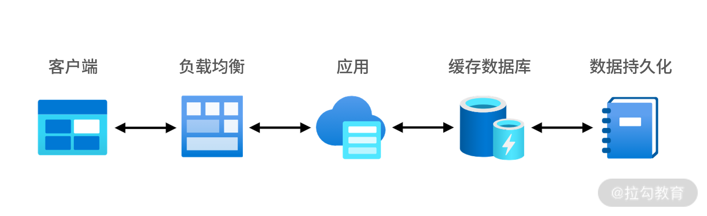
图 1：请求响应的过程图
上图描述的是在正常情况下的响应流程，但当你有了一定的性能测试实践之后，你会发现这样的过程并不是绝对的。比如有的业务第一次在数据库请求到数据后，应用层本地缓存会将数据存储在应用服务器上，也就是接下来在缓存有效时间内不会再去数据库取数据，而是在应用层得到数据后就会直接返回，所以响应时间会比第一次低不少，这也是随着性能测试的进行响应时间变低的原因之一。
衡量指标 3：报错率
这个指标也是比较重要的，报错率的计算方式是在统计时间范围内不符合返回期望的请求数除以总共的请求数。在测试中，这一指标不符合期望的话一般体现在对结果的校验上，我一般会分为三个层面进行校验：
- 状态码的校验，这在性能工具中不需要特别设置，如 4XX、5XX 这样的状态码会直接报错；
- 业务层面的校验，为了保证业务的基本准确性，会通过返回的数据包进行校验；
- 数据库校验， 相对于业务测试，性能测试的每一次请求不会都做数据库校验，这样会影响性能测试结果，我一般会在一轮性能测试之后去统计落库数据的数量和状态是否正常。
以测试登录为例：
- 如果用户名和密码不匹配会返回一段错误报文，不需要走正确流程中的校验逻辑；
- 如果用户名和密码匹配，一般会有多层校验。
这二者存在较大的差别，在实际压测过程中也存在业务没有校验，但已经发生错误的情况，这是不能及时发现的。
如何制定性能测试的指标
综上所述，我认为衡量性能最重要的三个指标是TPS、响应时间、报错率。那如何制定性能测试的指标呢？你的依据是什么呢？我列举几个面试者的常见回答：
- 我是根据二八原则，老板说我们百万日活，80% 的用户在 20% 的时间段里访问，响应时间是根据业内的 2-5-8 来制定；
- 我是根据竞品数据分析，他们产品的 PV 应该是百万级，所以我们的产品也是这么制定的；
- 这个指标是业务定的，他们和开发讨论过，应该没什么问题。
以上回答不仅从道理上讲有些牵强，而且也没有任何制定性能测试可以参考的有效信息。性能测试是一项非常严谨的工作，通过间接或者普适规则不可能满足具体特定的分析，所以对这个问题的理解基本可以判断一位同学是否真正做过性能测试。
那有人会问：“你是如何做性能测试目标分析的呢？”
对我来说，性能测试的目标可以分为 4 种。
第一种是以衡量系统的处理能力为核心目标。这一般是性能测试的主要目标，用来评估当前系统的处理能力和容量方面的规划。我认为评估这个目标最重要的是对数据的客观分析，那我们需要什么样的数据呢？
对于每一个接口都会有访问计数，这是目前业内比较常见的，也是衡量接口访问能力最准确的指标之一。一般大公司会自己开发相应的监控工具，发展中的公司也会使用一些开源或者商业工具进行监控。有了工具之后我们应该从哪些维度去统计这些数据呢？
通常我们会通过时间维度和服务维度来统计。
- 时间维度
根据经验，我们一般会考虑以大促当天的访问量来测试，但从分析的角度，一般前后半个月的时间都应该考虑在测试范围内。
首先我们需要确定大促前后哪些天数的访问量是比较高的，这里我会先以天作为维度，如图 2。可能你比较疑惑，为什么其他节点也比较高呢？
图 2：大促前后访问量
想想一些电商大促的具体活动场景就不会感到奇怪了。现在很多电商，如京东的“双十一”活动可能从 11 月 1 日就开始了，其中穿插了一些品类活动和推送，所以有流量冲高的情况也是比较正常的。因此，我一般会对最高峰和次高峰都进行分析。
当我们选取了天数之后，再以小时为维度，确定哪些时间节点的访问量是比较高的。图 3 中，我选取了其中一天，按照小时分布再统计。这样一来，我们就得到了时间维度上需要的数据。

图 3：各小时访问量
- 服务维度
那什么是服务维度呢？以目前比较流行的电商微服务架构为例，我一般会做服务级别的拆分。先画一个示意图，方便你对微服务有个简单了解。
图 4：微服务架构图
网关一般是请求进入应用层的第一个入口，也是统计网站入口访问量的方式之一。当我们的请求通过网关之后会下发到各个业务应用服务，如图 4 中所示的服务 A、B、C，我会按照确定的时间节点去统计各个服务的访问量数据。完成服务级的访问数据统计之后，我会继续按照时间维度统计服务下的接口访问数据。你可以看到，每个服务和每个接口的调用比例都不一样，如图 5 所示。
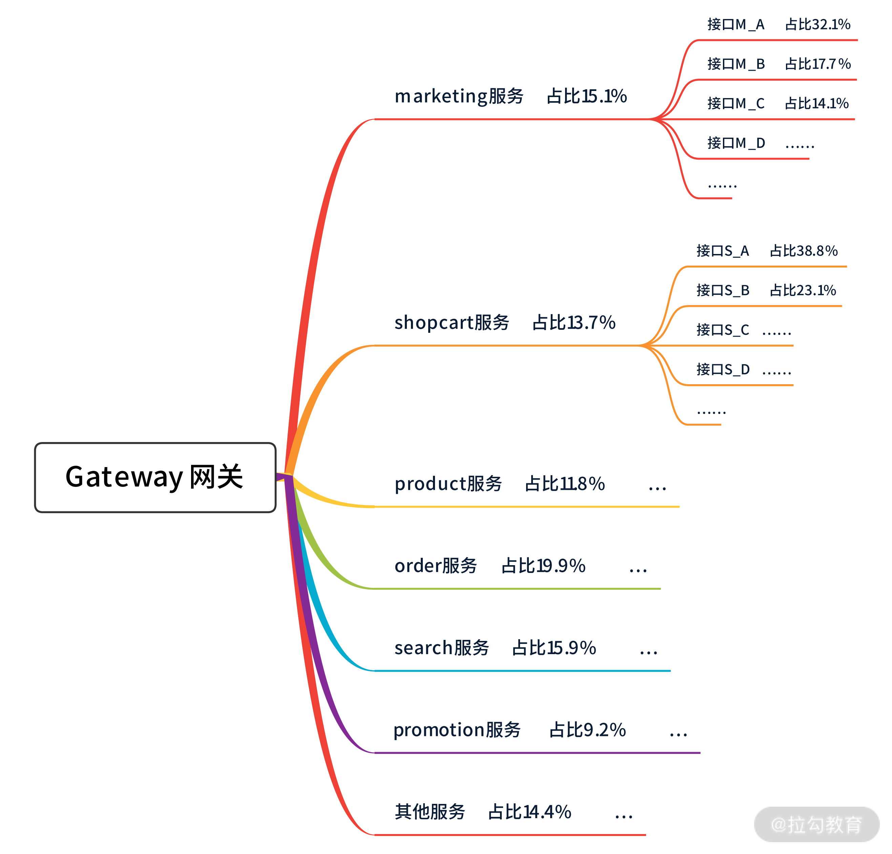
图 5：各个服务的调用比例
我曾看到有的同学使用 JMeter 写性能测试脚本时，用接口串联的方式编写，比如登录 → 浏览商品 → 添加购物车，这样一个流程的方式。这也就默认登录的用户浏览了商品后都会添加购物车，这是一种典型的自动化测试的思维，在性能中不会存在这样的同等分布。
一般来说，在同一个时间点都会有不同的比例，比如早晨 8 点，有 1.2w 次登录请求、4w 次浏览商品的请求，而下午这个数据就会产生变化。所以我会按照服务入口将接口调用也统计出来，结合时间维度和服务维度做出性能测试的常见模型。
说到这里你可能会有两个问题。
问题一：选取了这么多时间节点，应该会产生多个比例模型吧？我们需要对每一个比例模型都进行测试吗？
确实会产生多个比例模型，而且每个都需要测试，因为线上存在这样的访问趋势，我们应当都要覆盖。
问题二：你上面说的步骤好多，感觉需要很多时间，听说流量复制能一键解决？
流量复制是不能解决指标制定的问题的，并且在落地过程中还会花费大量的时间和人力成本，所以关于目标的制定和分析我们需要一步一步进行，花费一定的时间是难以避免的，并且线上未来的访问趋势只能尽可能覆盖，无法完全预测到。这一讲不对这部分内容展开描述，如果有兴趣可以了解下 goreplay、jvmsandbox 等技术。
上面是我描述指标分析的第一种类型也是最常见的类型：从处理能力的角度去说如何制定性能测试的目标。那是否还有其他类型的性能测试目标呢？
我们来看第二种性能测试目标。一个项目刚刚上线，用户访问量还不是很高，这时我们会更关注系统的健壮性，如内存泄漏、并发死锁、超卖问题，这些也需要在性能测试方向上进行。
值得一提的是，完成这部分性能测试并不需要在生产上进行，在线下性能测试环境也可以模拟，甚至能够更早更快地发现问题。我们都明白在测试领域，提早发现问题修复成本是最低的。如果你在上线后才发现这些问题，然后再去修复，修复完还要经过多轮的业务测试，这样一来，不管是时间成本还是人力成本都会大幅度增加。
第三种目标是系统的稳定性。
关于如何维护系统稳定性一直是一个比较大的话题。性能测试也是保障稳定的一部分，我认为，性能测试场景中的稳定性测试包含 2 个方面。
一个是正确率，这不一定要在高并发下完成，但我们要保证业务长时间运行的正确率能够达到 99.9999% 以上；另一个是处理能力，可以选取性能测试场景中的混合场景来执行（这部分会在第 08 讲中详解），这里我们需要观察两点：
- 整体处理能力是否稳定，会不会存在处理能力的下滑；
- 接口之间的比例是否稳定，随着时间的进行接口之间的访问比例会不会偏离。
第四种性能测试目标是专项能力是否达标。
刚刚列举的几乎都是以业务接口为测试目标，其实在实际的压测活动中，也存在中间件甚至硬件的性能测试，比如 Nginx、Kafka、防火墙等。这些往往不会作为最终的性能测试目标，但会在全链路排障和专项测试中有所涉及。这部分的性能测试基本上是用来判断当前的环境配置的节点数，以及配置所能达到的最大处理能力，为全链路性能测试提供数据支撑。
总结
在性能测试领域最直接的衡量指标是 TPS、响应时间和报错率，三者相互依赖，不能孤立地只分析某一项指标。
性能测试是一项严谨的工作，我们要熟悉制定的方法，一切以数据作为基础，拒绝在实践中凭感觉拍板的现象。基础数据建设也是性能工作的一部分，当我们拿到数据之后需要根据上文描述的时间维度和服务维度去分析，原则上分析的颗粒度越细越好。
08 性能测试场景的分类和意义
上一讲我带你学习了性能测试的分类和如何制定性能目标，这一讲我将带你学习性能测试场景的分类和意义，这也是决定你是否能做好性能测试的关键。
性能测试场景的重要程度类似于业务测试的 case，case 是你进行业务测试的指引，case 是否完善也直接决定了测试的覆盖率。同理，场景是传递执行性能测试的步骤和目的，关于这两点是你一定要清楚的。
首先带你认识下我认为最重要的三个性能场景：基准场景、单接口负载场景、混合场景负载测试，这几个场景也是我经常说的“基石场景”。接下来为你讲解这三个场景是怎么操作，以及核心目的是什么？
基准场景
基准场景是指单线程或者少量线程（一般在 5 个线程以下）对单接口进行测试，然后将测试结果作为基准数据，在系统调优或者评估的过程中，通过运行相同的业务接口比较测试结果，为系统的优化以及后续测试流程提供决策数据。
有人觉得基准测试并不是在高并发下进行的，不算是性能测试，但我认为这其实是性能测试中重要的基础步骤，它有以下作用：
- 验证测试脚本及测试参数的正确性，同时也可以验证脚本数据是否能够支持重复性测试等；
- 通过少量线程访问系统获取结果数据，作为对比参考基准；
- 根据测试结果，初步判断可能成为系统瓶颈的场景，并决定是否进行后续的测试；
- 基准场景的结果被一部分公司作为上线的基线指标，不达到要求是不允许上线的，这样的场景也经常被固化成自动化的脚本定时触发和巡检。
单接口负载场景
单接口负载场景就是通过模拟多线程对单接口进行负载测试。我的具体做法是选定线程数后持续循环运行一定时间，比如分别运行 100 线程、200 线程、300线程等，一般相同线程数运行 10～15 min，然后获取事务响应时间、TPS、报错率，监测测试系统的各服务器资源使用情况（CPU、内存、磁盘、网络等），把具体数据记录之后再开始跑下一个线程数。每一组线程数级别会有对应的 TPS，直到你找到 TPS 的拐点。如下图所示，横坐标是线程数，纵坐标是 TPS，线程数增加到 400 时出现了拐点。

这里需要注意的点有两个。
- 使用工具做性能测试时，动辄就是上千的线程数，所以如果你是一位初学者，我更加倾向于你从一个相对比较低的线程数梯度增加，这样才能够比较清晰地找到 TPS 的拐点。
- 我还建议为每个虚拟用户级别做单独的场景，网上绝大部分的教程，在一个场景中做了很多梯度（如下图所示），这样只是看上去简单方便一些，其实很不利于分析和诊断，这个方式我并不推荐。因为并不是每一个量级的性能表现都是类似的，而且一个场景多梯度出来的报表也可能没你想象中的清晰明了。在 JMeter 的聚合报告中还会将结果数据平均化，这样的方式并不能准确地记录每个线程梯度对应的 TPS。而在一个场景里先固定虚拟用户可以将自己的精力聚焦在诊断上。
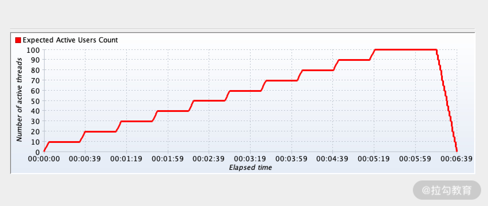
混合场景负载测试
混合场景是性能测试中最重要的场景之一，这个场景是为了最大程度模拟用户真实的操作。真实的线上操作不只有单接口的操作，一定是多种业务同时在进行，比如张三在浏览商品，李四在添加购物车等。
所以混合场景测试会将多个接口按照实际大促时候的比例混合起来，然后增加线程数找出多个接口 TPS 的和对应的峰值。这个比例也是混合场景的关键，在[《07 | 你真的知道如何制定性能测试的目标吗？》]中已经较为详细地阐述了制定比例的方法，本讲就不再赘述。加用户运行的基本策略可以参考上文的单接口负载测试。混合场景执行除了要观察总的 TPS，还有一个非常关键的因素就是如何控制接口之间的调用比例，使其不能偏离预期。
如何使用 JMeter 去控制场景比例？
相信你已经知道线程数可以改变接口的 TPS，但是如果每次通过线程数调整这个过程会比较烦琐。JMeter 提供了一个能较好地解决这个问题的插件，叫作吞吐量控制器，它在逻辑控制器组件中，如下图所示：

我来简单介绍一下这个插件配置规则，默认的情况下使用的是百分比模式，也就是 Percent Excutions。吞吐量一栏对应的是 TPS 占比，我用 login 和 register 这两个接口来模拟下，
login 接口配置比例是 80%，如下图所示，剩下的 20% 配置给 register。

看下运行后的效果，我直接在 JMeter 中添加聚合报告元件，如下图所示：
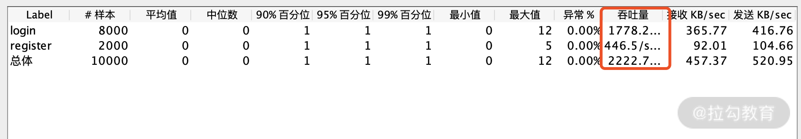
实际计算下来的值为 1778.2/2222.7≈0.8，这个数据是比较准确的。
以上是我所说的基石场景，包括基准测试、负载测试、混合场景测试等，这三个场景是有依次执行的顺序关系的，按照顺序执行更容易发现问题且减少不必要的工作，比如你连基准测试都不通过，就没有必要进行负载测试了。所以我们在做每一次性能测试时，都不应该省去或者颠倒上述的场景步骤。
接着我带你继续学习其他性能测试场景，为了达到相对应的性能测试目的，这些场景可以根据需求进行选择。
异常性能测试
性能测试也是存在异常测试的，顾名思义就是在系统异常的情况下看系统的处理能力或者是通过处理后的恢复能力是如何的。
比如在架构的高可用方面，遇到服务的上下线、数据库的主从切换等这些情况的时延是多少、处理能力能不能达到预期标准。另外在目前的电商应用架构中，大促遇到紧急情况经常需要限流和熔断，可能你经常听到这两个词，但不是特别清楚两者的区别。
限流就是控制单位时间内的请求量，比如说早晚高峰坐地铁，很多入口都会放隔离带，降低乘客流动速度，这就是一种限流方式。
熔断就比较直接了，当判断到调用的依赖服务报错到达一定数量后，直接返回一个既定的数据，将不再访问该服务。就像家中的保险丝一样，到达一定条件后，会自行断电，以保障电路安全。所以我们也会测试触发限流和熔断所设置的阈值，并观察在触发后的系统表现是如何的。
稳定性性能测试
性能测试中的稳定性测试是通过给系统加载一定压力的情况下，运行较长一段时间，验证系统是否稳定。通常是采用典型混合场景，应用系统运行 72 小时，查看系统运行指数是否平稳。
稳定性测试的注意点
稳定性测试在性能测试中是一个相对严苛的场景，因为在 72 小时中可能发生的事情太多了，不仅仅是业务承载的问题，还包括你准备的数据、客户端稳定性，甚至硬件设备断网断电等。任何一项意外的发生，都会造成场景的失败。稳定性测试的监控级别也应当更高，一旦有问题，立即钉钉或者电话通知，所以稳定性测试之前需要有充足的预案和监控报警。
经常被问到的问题
什么情况下可以停止负载测试？
有同学问我，无论是单接口负载测试还是混合场景的负载测试都是梯度增加线程数，那线程数增加到多少程度才可以停止呢？
首先我们结合图 1 可以看到，在梯度增加线程数时，TPS 一般会随之发生变化，当你能够根据 TPS 的变化找到相应的峰值且这个值也是符合预期时，便可以停止负载测试了。
但是现实的情况并没有这么理想，很多时候当你还没有发现图 1 中的拐点时，接口就可能在报错了，那遇到这样的情况是继续测试还是停止测试呢？这其实是一个约定的问题，即测试的结束条件是什么？
- 理想的情况下自然是达到目标就停止了。
- 那不理想呢？根据我的经验，会在测试之前组内协商出场景异常情况下的停止条件，比如 CPU 达到 70%，响应时间超过 500 ms，接口正确率低于 99% 等，当触发这些条件时，我将不会继续加线程进行测试了。
混合场景我选取哪个线程梯度的访问量进行测试？
这个问题经常被问到，一些同学喜欢基于峰值处理能力去进行稳定性测试，这是一个很严格的要求。其实标准因公司的实际体量而异。今年的某电商双 11 实时支付峰值达到 50 w/s，有可能这个值也未必能平稳跑 72 h，但以这个访问量为执行标准已经足够用了。所以对于不同的公司而言，自行选择适当的线程梯度就可以。我经常听到一句话，今年的峰值流量就是明年的正常流量，对于这样飞速发展的公司，我想还是需要基于峰值去执行稳定性测试场景。
关于场景的命名一直有同学很困惑，感觉对于同样一个场景，怎么有的人说是混合场景，还有同学说是容量场景。关于场景名字的叫法，不仅不同的公司会不一样，就包括参考资料上也没有形成非常统一的规范，但我认为并不需要用很多精力研究场景的叫法，但你一定要能描述清楚场景的核心目的是什么，执行步骤是什么，这才是需要向你的协作伙伴传递的最准确的信息。
总结
本讲带你系统地学习了性能测试的场景设计，关于三大基石场景的作用以及意义，混合场景的操作方法以及稳定性场景的注意事项，这些是你在性能测试执行过程中经常遇到的问题，也许你还做过其他性能场景，欢迎在留言区留言和我交流。
09 如何制定一份有效的性能测试方案？
上一讲我们学习了性能测试的场景，并且明确了每个场景的核心意义，这一讲我将带你学习如何做好一份性能测试方案，相信你对测试方案这个概念并不陌生，那如何做好一份性能测试方案呢？这个方案能解决什么问题呢？这一讲我们来一起探索。
什么是性能测试方案？
性能测试方案，通俗一点说就是指导你进行性能测试的文档，包含测试目的、测试方法、测试场景、环境配置、测试排期、测试资源、风险分析等内容。一份详细的性能测试方案可以帮助项目成员明确测试计划和手段，更好地控制测试流程。
性能测试方案的要点以及解决的问题
- 为测试活动做计划，每项测试活动的对象、范围、方法、进度和预期结果会更透明化。
- 制定出有效的性能测试模型，能够排查出性能问题，从而更符合真实场景。
- 确定测试所需要的人力、时间和资源，以保证其可获得性、有效性。
- 预估和消除性能测试活动存在的风险，降低由不可能消除的风险所带来的损失。
测试方案需要包含哪些内容？
性能测试方案是在你正式进行性能测试之前的工作，通过前几讲的学习你已经知道了性能方案中的必备内容。
1.制定性能测试目的
性能测试目的是你做一次测试首先要考虑的内容。是要完成既定的指标，还是验证超卖问题，抑或是验证并发下的稳定性问题。如果是验证指标，你的指标如何制定，拿到业务访问数据如何转化成为性能测试模型，在[《07 | 你真的知道如何制定性能测试的目标吗？》]中已经说得比较详细了。
2.性能测试场景梳理
对于性能测试有哪些场景，每种场景的目的是什么，[《08 | 性能测试场景的分类和意义》]已经给了你答案，你需要根据性能测试的目的进行场景的设计。
那除了这些，性能测试方案还需要包含哪些内容呢？
3.确定被测业务的部署架构
被测的业务部署架构是什么意思呢，简单来说就是被测服务涉及哪些组件，每个组件部署在哪些服务器上，服务器的配置是怎样的。你需要画一个部署架构示意图，有了这张图，才能知道如何做到全貌监控，以及遇到问题从哪些服务入手。
我用一个自己画的架构示意图来说明这个问题，如下图所示，这是一个经典的链路：从客户端发起到服务端，服务端从代理层到应用层，最后到数据层。需要注意的是，你需要明确被测的环境里的各个服务有多少节点，比如客户层的压测机节点有几台，分别在哪个网段。同理我们可以去调研服务层和数据层的节点。

4.对测试数据进行调研
关于测试数据调研，包含了非常多的内容，对于业务测试来说数据调研就是获取必要的参数来满足既定的场景可以跑通。那对于性能测试来说，需要做哪些方面的数据调研呢，我带你一一解读。
（1）数据库基础数据量分析
数据库的基础数据量就是目前线上数据库实际的数据量，为什么要统计基础数据量呢？很多公司往往有独立的性能测试环境，但是数据库的数据量与线上相比差距较大，可能出现一条 SQL 在性能测试环境执行很快，但上了生产却会很慢的问题。这就导致测试觉得该测的都测了，但上了生产还是会有问题出现。
这种问题可能会因为索引缺失以及性能环境数据量较少而不能将问题暴露出来，所以在性能测试环境下的数据量一定要和生产上一致。为了达到这个目的，有的公司可以将生产数据脱敏后备份，有的则需要你自己写脚本来根据业务规则批量造数据。
（2）压测增量数据分析
除了数据库的基础数据量，我们也需要考虑一轮性能测试下来会增加多少数据量。往往增加的数据量最终落到数据库，可能会经过各种中间件如 Redis、Mq 等，所以涉及的链路可能存在数据量的激增，所以这方面需要根据增加情况制定相应的兜底方案。
（3）参数化的数据分析
关于参数化，我相信你已经通过[《02 | JMeter 参数化策略》]有了深入的了解。在这里，我还想抛出一道思考题，如何参数化订单号，你可以分别从读写接口两个层面写出你的思考或者实践。
（4）冷热数据的分析
以我的从业经历来讲，能够在方案阶段考虑到冷热数据分布的公司并不多，往往都是从性能测试结果的一些异常点或者实际产线出现的问题去追溯。接下来我就带你了解下什么是冷热数据，以及如果不对其进行分析可能会带来什么影响。
- 冷数据是指没有经常被访问的数据，通常情况下将其存放到数据库中，读写效率相对较低。
- 热数据是经常被用户访问的数据，一般会放在缓存中。
在性能测试的过程中，被频繁访问的冷数据会转变为热数据。如果参数化数据量比较少，持续压测会让 TPS 越来越高。而在实际大促情况下，往往有千万级的用户直接访问，但大多都是冷数据，会存在处理能力还没达到压测结果的指标，系统就出现问题的情况。所以在需求调研时，你也需要考虑数据会不会被缓存，缓存时间多久的问题。
5.业务规则的调研
对于性能测试而言，业务规则的了解也是不可或缺的。一些公司的性能测试组在进行压测时，业务线的测试也需要协助支持压测的进行，由此可以体现业务的重要性。
对业务的充分了解不仅可以帮助你提高写脚本的效率，也可以帮助你构造更为真实的性能测试场景。举个简单的例子，你模拟下单的时候是否考虑商品属性，比如是单一商品还是套餐商品，下单的时候购物车里有几件商品，这些都会影响性能测试的结果。
6.测试监控的内容确认
监控是你做性能测试的重点内容之一，一旦出现问题，第一反应就是查监控，关于监控管理建设我在[《01 | JMeter 的核心概念》]中也有所陈述。对于性能测试方案，不仅需要罗列清楚你所需要的监控工具和访问方式，同时也需要层次分明地传递你监控的内容。对我来说做监控最基本的一个关键词：全。
怎么去理解“全”呢？先举一个典型的例子，有时候做一个新的项目，询问支持的同学有没有部署监控，他们说已经部署了，但等你真正使用的时候发现只监控了一台应用服务器的 CPU。这个例子我相信大多数人都似曾相识，所以我说的全，至少包含两个方面：
- 涉及所有服务器；
- 涉及服务器基础监控，包括 CPU、磁盘、内存、网络等。
硬件资源的监控只能算一个层面。那完成一次性能测试都需要监控什么呢，我用一个导图给你做一个概览。
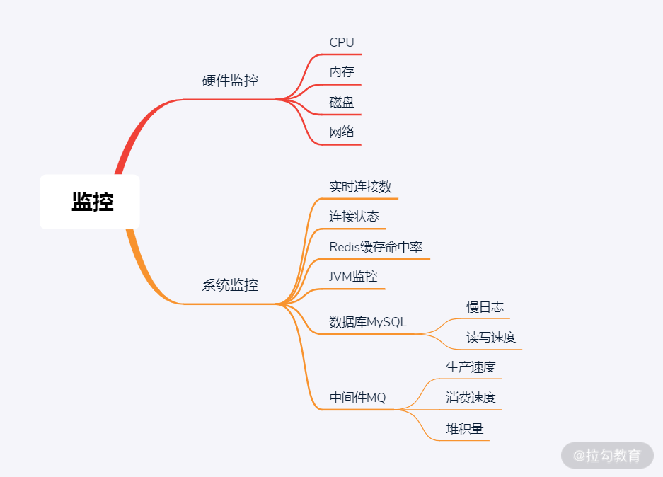
监控还有个很重要的点是设置阈值来报警，无论是线上和线下的性能测试，报警功能都是必需的。因为通过人工的观察，往往不能以最快的速度发现问题。一旦能够及时报警，涉及的人员就可以快速响应，尽可能降低风险。
7.性能测试排期涉及的人员
一般来说测试是上线前的最后一道关卡，也是发现问题的重要角色，所以项目上的风险会在测试阶段集中爆发。性能测试作为测试中的一部分，也会面临类似问题，这也考验你的项目管理能力。而且性能测试需要大量的数据和专门的环境，这部分的工作内容和资源需要更多支持，所以在你的性能测试方案中，首先要标明开展的阶段和日期，还要明确主负责人和协调人员。在此基础上还需要面对面 check 和落实。
你可以参考如下的表格，具体的内容需要根据公司的情况来确定。这些任务并不是从上到下依次执行，可能存在并行的情况，比如某一些公司环境是由运维人员统一部署，这部分内容就可以和性能测试需求分析一起进行。

总结
关于如何打造性能测试方案就讲到这里了，通过本讲的学习，你已经了解了做一份性能测试方案的基本要素和关键点。性能测试方案对于一些公司来说可能只是一份流程化的文档，但对于测试个人来说，这部分内容可以体现出你的思考和计划。尤其对于性能测试新手来说，一定要充分思考每项的意义，这样你才能快速提升。
10 命令行监控 Linux 服务器的要点
前面两个模块带你学习了如何使用 JMeter 工具，如何做好一份性能测试方案，第三模块我将带你进行监控的学习。在你执行性能测试的过程中，监控服务端的资源消耗等也是必备内容，监控的结果是帮助你发现问题的眼睛。然而在实操过程中发现很多同学喜欢用JMeter 工具提供的插件进行监控，但是我并不推荐你使用这种方式，原因如下：
- 指标相对简单且固定，结果数据粗糙且界面显示并不是很友好；
- 较大地增加了客户端压测机的资源开销，影响性能测试结果；
- 特定环境下，在服务器上安装插件是不被允许的，会很不方便。
所以这一讲我想带你了解下监控的内容有哪些？既然不推荐使用 JMeter 自带的监控方式，那我是如何做监控的呢？
本讲作为监控模块的第一篇，我想先聊一聊如何能够把监控这件事情做好，正所谓“磨刀不误砍柴工”，监控绝不是简单地敲几个命令，做几个图表就可以的，你需要从多角度来理解这件事情。首先我认为把监控做好需要有以下三个关键词：层次清晰、全面覆盖、定向深入。我来解释下这三个关键词代表的含义。
层次清晰
从执行一次性能测试来看，你需要监控的内容有很多，重点是要能理清楚不同的监控类型，以及分别能够解决什么问题？我从下面几个层次做下介绍，从而让你对各层面的监控做一个初步了解，也为后面的章节做一些铺垫。
1.硬件层
硬件层是最容易想到的一个层面，一般包含了 CPU 的使用率、内存使用率、磁盘和网络读写速度等，通过这些指标能够反馈出系统运行的基本情况，以及不同的 TPS 量级会消耗多少硬件资源。
2.系统层
系统层监控包括连接请求数、拒绝数、丢包率、请求超时等，相对于基础的硬件监控而言，这些指标更能够反映出目前系统存在的瓶颈，从而为根因问题的定位提供有力的线索。
3.链路层
在我看来，链路层是直接面向架构和代码的，它的监控能够帮助你更加准确地看到代码执行了哪些函数，涉及哪些服务，并且能够较为清晰地看到函数之间的调用耗时，还可以帮助你定位代码存在的问题。
4.业务层
业务层监控本意是帮助你判断用户输入是否合规，代码逻辑是否健壮。对于性能测试而言，业务层的监控可以帮助你发现脚本参数问题以及高并发下业务逻辑运行是否正常等，比如随着测试的进行，可能会存在商品库存不足的情况。如果有业务层面的监控，当库存低于某阈值时，可以进行一定的提示以规避此类问题。
全面覆盖
如果你能够完整地画出应用的部署架构图（参考第 09 讲的部署架构图），并且能够按照我说的几个层次将其完整地部署落地，我想监控这件事情至少可以给你打到 85 分，剩下来的 15 分在哪里呢？我认为除了应用层的监控，你还需要考虑底层链路的监控，比如防火墙、F5 负载均衡等，这些往往是一下子考虑不到的事情。
在我的实际工作中，尤其是新项目监控部署经常存在“缺斤少两”的情况。虽然在测试之前做了系统监控，但出现问题后仔细分析时，经常发现某一些机器并没有被监控到，或者监控了 CPU 又发现磁盘没有被监控上。这些问题主要是考验你的组织能力，也反映了团队是否能在性能测试上更细致更深入，毕竟性能的分析是不能放过任何“蛛丝马迹”的。
定向深入
首先通过基本的监控可以获得一些异常点，比如 CPU 高了、磁盘在等待，这些说白了是表象问题。就比如说某位同学今天发烧了，通过发烧这个现象并不能直接下定论说他感冒了，医生也需要做进一步的化验分析才可以下结论。对于监控也是这样，是否有定位根因问题的手段，CPU 高了，需不需要进行线程分析，需要哪些权限和定位工具，这些在监控部署时都需要考虑到。
下面我从监控硬件资源开始，通过使用 Linux 命令行对服务器进行监控，为什么我要讲解 Linux 命令的监控呢？我认为它具有灵活迅速的特点，通过命令可以最快地输出对应结果。接下来我会分别从 CPU、内存、磁盘、网络维度既快又能直击要害地帮你分析硬件瓶颈。
CPU
top 是我们查看各个进程的资源占用状况最常用的命令，如下代码所示，这个命令简单却包含很大的信息量，接下来我选一些常用的内容给你重点解释。
top - 18:17:47 up 158 days, 9:32, 2 users,
load average: 0.07, 0.15, 0.21
Tasks: 154 total, 1 running, 152 sleeping, 0 stopped, 1 zombie
%Cpu(s): 3.9 us, 1.3 sy, 0.0 ni, 94.6 id, 0.2 wa, 0.0 hi, 0.0 si, 0.0 st
KiB Mem : 8010676 total, 337308 free, 6036100 used, 1637268 buff/cache
KiB Swap: 0 total, 0 free, 0 used. 1223072 avail Mem
以下省略
1. load average
关于这一内容的代码如下所示：
load average: 0.07, 0.15, 0.21
三个数字都是代表进程队列的长度，从左到右分别表示一分钟、 五分钟和十五分钟的数据，数字越小压力值就越低，数字越大则压力越高，然而这个数值多小算小呢？多大算大呢？
以单核处理器为例，打个比方就像收费站的一个 ETC 通道一样：
- 0 表示没有任何车辆需要通过；
- 从 0 到 1 可以认为很流畅，车辆不需要任何等待就可以通过；
- 1 表示正好在这个通道可接受范围之内；
- 超过 1 就已经有车辆在后面排队了。
所以理想情况下，希望平均负载值在 1 以下。如果是 1 就代表目前没有可用资源了。在实际情况中，很多运维同学会把理想负载设置在 0.7 以下，这也是业内的一个“经验值”。
刚刚说的是一个单核处理器的情况，多核 CPU 的话，负载数值 / CPU 核数在 0.00~1.00 之间表示正常，理想值也是在 0.7 以内。
2. CPU 状态
从 top 中你也可以看到每种类型进程消耗的 CPU 时间百分比，如下所示：
%Cpu(s): 3.9 us, 1.3 sy, 0.0 ni, 94.6 id, 0.2 wa, 0.0 hi, 0.0 si, 0.0 st
首先来看代码中的一些重要信息。
- us 列显示了用户进程所花费 CPU 时间的百分比。这个数值越高，说明用户进程消耗的 CPU 时间越多，可以用来分析代码中的 CPU 消耗热点。
- sy 列表示系统进程消耗的 CPU 时间百分比。
- ni 列表示改变优先级的进程占用 CPU 的百分比。
- id 列表示 CPU 处于空闲状态的时间百分比。
- wa 列显示了 I/O 等待所占用的 CPU 时间的百分比，这里 wa 的参考值为 0.5，如果长期高于这个参考值，需要注意是否存在磁盘瓶颈。
- hi 列表示硬件中断占用 CPU 时间百分比。
- si 列表示软件中断占用 CPU 时间百分比。
- st 列表示当系统运行在虚拟机中时，当前虚拟机在等待 CPU 为它服务的时间。
在已经输入 top 的情况下再输入数字 1，可以查看 CPU 的核数和每个核的运行状态。
如下图是两核 CPU 的运行状态。
%Cpu0 : 3.0 us, 1.7 sy, 0.0 ni, 95.3 id, 0.0 wa, 0.0 hi, 0.0 si, 0.0 st
%Cpu1 : 2.4 us, 1.0 sy, 0.0 ni, 96.6 id, 0.0 wa, 0.0 hi, 0.0 si, 0.0 st
值得注意的是，很多同学看 CPU 的使用率时，只看 us 这个数值，通过上面的讲解，可以看出这是不准确的。除了用户进程，还有其他系统进程会占用 CPU，所以实际 CPU 的使用率可以用 100 减去空闲值（id）去计算。
如何统计内存使用情况
最常见的是通过 free 来查看 Linux 内存使用情况。
[root@JD ~]# free -m
total used free shared buff/cache available
Mem: 7822 5917 302 373 1602 1195
Swap: 0 0 0
相信通过单词的意思我们也能大概看出来 total、used、free 表示什么，它们分别是总的物理内存大小、已经被使用的物理内存和空闲的物理内存值是多少。
曾经有同学问我，为什么 free 值很低却未必代表内存达到瓶颈呢？
这和 Linux 内核机制有关系，简单来说，内存空间会开辟 buffer 和 cache 缓冲区，对于物理内存来说，这都属于被使用过的内存。而应用需要内存时，如果没有可用的 free 内存，内核就会从缓冲区回收内存以满足要求，当 free 值很低的时候，如上代码中的 available 就能体现出缓冲区可用内存的大小，这个指标可以比较真实地反映出内存是否达到使用上限。
磁盘查看
这一部分我们来讲两个重要的命令。
1.iostat
[root@JD ~]# iostat -x
Linux 3.10.0-514.el7.x86_64 (JD) 01/18/2021 _x86_64_ (2 CPU)
avg-cpu: %user %nice %system %iowait %steal %idle
5.24 0.00 1.57 0.07 0.00 93.12
Device: rrqm/s wrqm/s r/s w/s rkB/s wkB/s avgrq-sz avgqu-sz await r_await w_await svctm %util
vda 0.00 0.29 0.57 5.30 20.50 630.14 221.82 0.07 11.53 59.83 6.36 1.18 0.69
通过这个命令你能看到磁盘实时运行的情况，一般可以优先看 idle、util 和 svctm 这几列的数值：
- idle 代表磁盘空闲百分比；
- util 接近 100%，表示磁盘产生的 I/O 请求太多，I/O 系统已经满负荷在工作，该磁盘可能存在瓶颈；
- svctm 代表平均每次设备 I/O 操作的服务时间 (毫秒)。
在我的经验中，会组合看这些指标，如果 idle 长期在 50% 以下，util 值在 50% 以上以及 svctm 高于 10ms，说明磁盘可能存在一定的问题。接着我会定位到具体是哪个进程造成的磁盘瓶颈，下面我就为你介绍一个关于定位的命令。
2.iotop
iotop 这个命令并不是 linux 原生的，需要安装，以 CentOS 7.0 为例：
[root@JD ~]# yum -y install iotop
安装完成之后，直接输入 iotop，示意如下，你就能清楚地看到哪些进程在消耗磁盘资源。
6448 be/4 root 0.00 B/s 0.00 B/s 0.00 % 0.00 % ifrit-agent
14647 be/4 root 0.00 B/s 7.70 K/s 0.00 % 0.00 % java -Dserver.port=9080
网络
netstat
netstat 能提供 TCP 和 UDP 的连接状态等统计信息，可以简单判断网络是否存在堵塞。
[root@JD ~]# netstat
Active Internet connections (w/o servers)
Proto Recv-Q Send-Q Local Address Foreign Address State
tcp 0 1 JD:49190 169.254.169.250:http FIN_WAIT1
tcp 0 0 JD:39444 169.254.169.254:http TIME_WAIT
tcp 0 0 JD:us-srv worker-18.:sentinel-ent ESTABLISHED
**Proto：**协议名（可以 TCP 协议或者 UDP 协议）。
recv-Q：网络接收队列还有多少请求在排队。
send-Q：网络发送队列有多少请求在排队。
recv-Q 和 send-Q 如果长期不为 0，很可能存在网络拥堵，这个是判断网络瓶颈的重要依据。
Foreign Address：与本机端口通信的外部 socket。
State：TCP 的连接状态。
总结
通过本讲的学习，你已经知道了如何通过命令行监控 Linux 资源，包括 CPU、磁盘、内存、网络，也知道了判断硬件瓶颈的一些策略。
11 分布式服务链路监控以及报警方案
上一讲我们主要讲解了硬件的命令行资源监控，相信你已经学会了通过命令行的方式查看硬件瓶颈。
那我提一个问题，为什么会有硬件瓶颈呢？或者我说得更直白一点，如果服务器上没有应用还会造成硬件瓶颈吗？显然是不会的，所以我想向你传递一个观点：呈现出来的硬件瓶颈绝大多数是表象问题，我们往往需要在系统应用上寻找问题的根因。而寻找系统问题的根因，对于系统链路监控也是必不可少的，所以这一讲我将带你学习如何进行基于系统链路的监控。
为什么要链路监控？
随着微服务的流行，链路监控越来越受重视。微服务架构是根据业务进行拆分，对外统一暴露API 接口，而内部可能是分布式服务、分布式对象存储等，如图 1 所示。

图 1：微服务架构
这些组件共同构成了复杂的分布式网络。而分布式系统一旦出现问题，比如一个请求经过多个微服务之后出现了调用失败的问题，或者一个请求经过多个微服务之后 Response 时间过长，但具体是哪个微服务节点的问题我们并不知道。只能去服务器上查看调用经过的每个微服务的日志，当然这种方式的效率是比较低的，相当于人肉运维。
随着业务体系越来越复杂，加上服务间的相互依赖关系，微服务其中一个节点出现了问题，很可能牵一发而动全身，导致严重的后果。在这样的情况下，分布式链路监控的价值就体现出来了，它可以让你清晰地知道跨服务调用的链路耗时信息、执行方法等，并从整体到局部将信息呈现出来，可以帮助你节约故障排查时间。
全链路监控选择依据
全链路监控系统有很多，可以从这几方面选择：
- 探针的性能消耗，探针是搜集信息的“情报员”，尤其是在多节点情况下，搜集数据的成本会越来越高，监控组件服务的影响应该做到足够小、数据分析快、性能占用小；
- 对代码的非侵入性，减少开发的维护成本；
- 监控、分析的维度尽可能多。
目前市面上的全链路监控工具很多，比如 CAT、SkyWalking、Pinpoint 等，对于工具的选型来说最重要的是采样数据对系统的性能消耗足够小、数据分析和展示快、监控的维度尽可能丰富，简单比较下这几个工具。
- CAT：是由美团和携程的同学开发的，通过代码埋点的侵入式方式，对应用日志分析、监控、展示等，不过侵入式的方式会带来开发以及维护成本的增加。
- SkyWalking：也是由国人开发，目前项目已经提交到 Apache 孵化组织，无侵入性、UI 展示简洁清晰。
- Pinpoint：由韩国人开发，相对于 SkyWalkingg 提供了更为详尽的链路监控信息，不过数据采集带来的性能损耗相对于 SkyWalking 来说比较大。
综上我将以 SkyWalking 为例给你介绍下链路监控，希望通过介绍，你可以掌握 SkyWalking 的具体使用步骤和链路监控工具可以给我们带来什么好处，通过本讲的学习你也可以自由选择链路监控工具去实践。
SkyWalking 的模块分析
首先来看下 SkyWalking 的组件示意图：

图 2：SkyWalking 的组件示意图
- Tracing 和 Metric ： 在应用上采集 Tracing（调用链数据）和 Metric（指标）信息通过 HTTP 或者 gRPC 方式发送数据到 Analysis Platform。
- Analysis Platform：数据的采集和计算，将传输的 Tracing 和 Metric 数据进行整合分析，通过 Analysis Core 模块把数据写入相关的数据库中。
- Storage：SkyWalking 的存储，支持以 ElasticSearch、MySQL、TiDB 等数据库进行数据存储，其中 ElasticSearch、MySQL 用的居多。
- SkyWalking UI：Web 可视化平台，用来展示落地的数据以及图表，比如链路调用、服务结构等。
1.安装部署过程以及相关的注意事项
首先下载 SkyWalking 安装包并进行解压：
wget https://github.com/apache/SkyWalking/archive/v8.0.1.tar.gz
tar -zxvf v8.0.1.tar.gz
解压后可以看到如下文件夹：
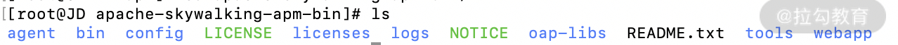
我们讲解下这个主要文件的作用。
（1）修改配置文件 config/application.yml。在这里先进行数据库的配置，我使用当前服务器上的 mysql 来进行存储：
mysql:
properties:
jdbcUrl: ${SW_JDBC_URL:"jdbc:mysql://127.0.0.1:3306/swtest"}
dataSource.user: ${SW_DATA_SOURCE_USER:root}
dataSource.password: ${SW_DATA_SOURCE_PASSWORD:123456}
将上述的配置文件根据自己的数据库实际地址修改，修改完成后进行启动：
$ bin/oapService.sh
SkyWalking OAP started successfully!
（2）接着来看 SkyWalking UI 的相关配置，由于 SkyWalking UI 的默认端口是 8080，这个端口是很多应用的默认端口，容易产生冲突，你可以修改一下，如下所示：
# 修改webapp/webapp.yml
server:
port: 18080
然后启动 SkyWalking UI 服务，启动完成后你会看到如下信息：
$ bin/webappService.sh
SkyWalking Web Application started successfully!
这里我强烈建议，不管是第一步还是第二步中的 started successfully，都并不意味着真正的启动成功，一般在提示 started successfully 后，还需要去 logs 文件夹下查看相关日志来判断启动过程中是否存在异常。
UI 界面启动成功后示意图如下：

（3）本地启动微服务。我 demo 里包含 system、auth、user 等服务，通过配置 SkyWalking Agent 的方式启动服务，示意如下：
nohup java -server -Xms256m -Xmx256m -Dspring.profiles.active=dev -Dspring.cloud.nacos.discovery.server-addr=127.0.0.1:8848 -javaagent:/root/apm/apache-SkyWalking-apm-bin/agent/SkyWalking-agent.jar=agent.service_name=cctuser -Dspring.cloud.nacos.config.server-addr=127.0.0.1:8848 -jar blade-user.jar > log.file 2>&1 &
-javaagent 后的启动参数是 SkyWalking 的 agent 配置路径。
启动本地的微服务成功后，就可以访问服务，同时通过 SkyWalking 监控你可以看到服务部署图以及链路监控等，如下图所示：
图 3：服务部署图

图 4：链路追踪图
在我们进行链路追踪后，可能会出现一些超时、访问错误等异常，那我们如何能够更快地收到这些异常信息呢？
2.常见的报警方式
首先很多人想到了报警机制，那我带你了解下常见的几种报警方式。
（1）短信或者电话报警
这样的报警方式更适合高级别的报警提醒，用于处理紧急情况。出现级别不高而又频繁地发送短信会让人产生排斥感，而且电话或者短信的报警方式也存在一定的成本。
（2）邮件报警
邮件报警更适用于工作时的提醒，但是系统往往是不能区分你是不是在工作，有时候夜间的报警邮件你很难及时关注到，所以说邮件报警也存在一定的局限性。
（3）钉钉报警
随着钉钉越来越普及，很多公司都已经使用钉钉。员工在公司需要使用钉钉管理自己的考勤以及进行工作上的沟通，如果将监控报警信息推送到钉钉上其实就很方便的。不过也存在有的企业用的是其他沟通工具，不过对于报警推送到沟通软件上的原理都是类似的，接下来我会以钉钉作为模版来讲解如何进行报警信息的推送。
3.如何配置钉钉机器人？
（1）打开机器人管理页面。以 PC 端为例，打开 PC 端钉钉，进入首页面点击头像，在弹出框里选择机器人管理，打开管理页面后可以选择自定义，如下图所示：

（2）在打开的机器人详情页面点击添加按钮，如下图所示：

（3）在打开的添加机器人页面输入机器人名字，选择要接收报警的钉钉群 ，设置机器人头像。根据需要勾选安全设置等就可以，点击完成之后，在页面拷贝出 Webhook 地址保存好，向这个地址发送 HTTP POST 请求，设置的 SkyWalking 钉钉报警群便能收到钉钉报警消息，如下图所示：

配置好之后我们可以看到设置报警的钉钉群“SkyWalking 钉钉报警”出现了报警机器人消息，如下图所示：
我们可以用 Linux 命令行工具 curl 快速验证是否可以推送成功，curl 命令行示意如下：
[root@JD ~]# curl 'https://oapi.dingtalk.com/robot/send?access_token=xxxxxxx' -H 'CONTENT-TyPE: application/json' -d '{"msgtype": "text","text": {"content": "业务报警"}}'
{"errcode":0,"errmsg":"ok"}
你可以看到通过 curl 后可以得到基本响应 {"errcode":0,"errmsg":"ok"}。
4.如何将 SkyWalking 和钉钉报警完美结合？
上述已经配置完成了钉钉机器人，那如何将 SkyWalking 的报警信息自动推送到钉钉机器人呢？我们可以实现一个接口作为它们沟通的“桥梁”。
首先在 pom 里面引入相关的 jar 包，如下所示：
<dependency>
<groupId>com.aliyun</groupId>
<artifactId>alibaba-dingtalk-service-sdk</artifactId>
</dependency>
然后自定义 DingTalkUtils 工具类，暴露接口访问路径 /dingdingAlarm。
@RequestMapping(value = "/dingdingAlarm", method = RequestMethod.POST)
public void alarm(@RequestBody List<AlarmDto> alarmList){
//示意代码
alarmList.forEach(alarm-> {
DingTalkUtils.sendMsg(alarm.getAlarmMessage());
});
}
SkyWalking 告警推送到钉钉
SkyWalking 提供了告警的配置，我们可以很方便地配置上面暴露的接口。在 SkyWalking 程序包里的 config 文件夹下有个 alarm-settings.yml 文件，该文件专门用来配置相关的报警。在该配置文件中我们可以搜索到 webhooks，把上面暴露的接口写上去就好了。
webhooks:-http://ip:port/dingdingAlarm
接下来我们测试下，比如 auth 服务获取验证码的接口出现错误，我们是可以在 SkyWalking 追踪页面清楚地看到的。同时对于其他相关的业务同学，也都可以在钉钉群收到报警信息，这样的方式在实际工作中非常实用。业务报错图和钉钉报警图如下所示：

图 5：业务报错图
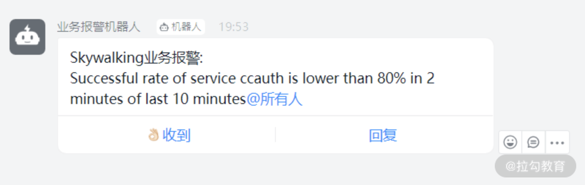
图 6：钉钉报警图
总结
这一讲主要讲解了关于 SkyWalking 的使用背景以及价值，在实操层面讲解了 SkyWalking 是如何追踪监控中出现的错误，并且把出现的错误通过钉钉通知给相关人员，相信通过这一讲的学习，你也对微服务下的报警方案会有一个更深刻的认识。
12 如何把可视化监控也做得酷炫？
前面两讲分别讲解了硬件监控、链路监控以及相关的报警机制。一些同学在学习硬件监控的过程中可以发现，命令行操作反馈迅速及时，指哪儿打哪儿，非常灵活便捷，但并不是所有同学都需要或者都有权限直接在服务器上进行操作。而且很多中大型互联网公司是大型的服务集群，通过命令行去发现每台服务器的问题并不现实，所以很多企业都会采用大屏的图形化监控。在页面上根据自己的需要进行条件筛选，这样不仅简单、清晰、直观，而且能够很方便地向团队成员传递监控的实时信息。
所以作为一位优秀的性能测试工程师，你不仅仅需要掌握命令行监控是如何操作的，也需要了解监控大屏是如何制作的，二者可以说是相互补充的。
这一讲我们就来讲解可视化监控，你可以认为它是一节实操课，需要提前准备好你的服务器环境（推荐 CentOS 7.0），跟着我的步骤一步步进行就可以完成酷炫的监控报表。
命令行和图形化界面展示对比
对于初学者而言，你可能并不能从上述文字中感受到命令行和图形化界面展示的区别，那么我用两张图来对比下。

图 1：命令行方式
图 2：可视化监控大屏
我想绝大部分还是更愿意看图 2 的可视化监控大屏，本讲的开头也说了命令行监控和可视化监控是一种互补的形式，这就代表两种方式各有千秋。可视化监控除了直观外，我认为还有如下两点优势。
（1）信息高度集中
可视化监控大屏一般会根据不同的机器提供不同的维度，比如图 2 就是其中一台机器的各类监控信息汇总，可以说信息多元且海量，我们并不能在同一时间将所有机器的具体信息都看到。而可视化方式可以通过时间维度去追溯历史数据，这相对于命令行基于碎片时间收集的信息要全面很多，很方便后续的复盘或者追踪。
（2）加速信息传递效率
大屏的方式也是共享的方式，可以更快速地把信息传递给项目其他成员，每位成员可以通过大屏的链接去访问，自由选择自己所需要的信息，而且可以通过展现出来的趋势预判会触发的阈值以达到提前发现风险的效果。
Promethues + Exporter + Grafana
大屏的监控并不算新概念，可以说各类方案层出不穷，老牌的监控工具如 Zabbix、Nagios 等，但随着互联网的发展，越来越多高性能且展示酷炫的方案应运而生，其中以 Promethues + Exporter + Grafana 为主的通用方案受到普遍欢迎。
首先来解释下 Promethues + Exporter + Grafana 这套组件的基本作用。
- Prometheus：既然 Exporter 作为 agent，那必然有一套中心化的数据采集存储组件，这个组件就是 Promethues，它通过接收 Exporter 采集的数据，并按照一定的规则进行计算整合，通过 AlertManager 设置报警规则，达到触发条件后就发送报警信息。
- Exporter：用于采集服务器中的监控数据，比如对服务器基础性能进行监控的 node_exporter 插件，也可以理解为 agent。
- Grafana：用于数据的渲染展现，可以展示得非常酷炫，如果仔细阅读过《03 | 构建并执行 JMeter 脚本的正确姿势》，相信你对 Grafana 已经有了一定的了解。
我们再用下面这张图来总结下这个过程。

图 3：组件流程图
那可能有同学提问了，这套组件除了针对硬件进行监控，对于一些中间件或者数据库的监控也可以吗？
答案是肯定的，根据 Exporter 的不同，你可以监控不同的组件，这也是这套监控最灵活的部分，不同的 Exprter 可以达到不同的监控目的和效果。
接下来我就分别以监控服务器硬件和数据库这两个例子来讲述这套体系的搭建以及使用技巧。
如何打造硬件资源报表？
第一步安装 node_exporter
通过对上文的学习，你应该知道关键部分是如何选择 Exporter，其中 node_exporter 就实现了对 Linux 操作系统中 CPU 使用、负载、磁盘空间、磁盘等待、网络传输等详尽数据的采集。
接着我就带你来看如何安装部署，比如你需要在 A、B、C 三台机器上同时监控，那必须都安装node_exporter 插件。我先以一台机器为例，带你安装下 node_exporter，使用 wget 直接下载就可以，如下所示：
wget -c https://github.com/prometheus/node_exporter/releases/download/v0.18.1/node_exporter-0.18.1.linux-amd64.tar.gz
然后解压如下命令：
tar zxvf node_exporter-0.18.1.linux-amd64.tar.gz
再进入相应的文件夹，使用后台启动方式开启服务：
nohup ./node_exporter &
当启动完成之后，可以用 ip:9100 的方式打开页面，如下所示，即认为 node_exporter 安装成功了。
图 4：node_exporter 安装示意图
我们点击 Metrics 可以查看具体的采集信息，部分展示内容如下所示：
# HELP node_cpu_seconds_total Seconds the cpus spent in each mode
# TYPE node_cpu_seconds_total counter
node_cpu_seconds_total{cpu="0",mode="idle"} 995721.03
- HELP是解释下面指标的含义，相当于协助文档；
- TYPE用于解释指标的数据类型；
- 下面的信息是具体的统计信息，比如 node_cpu_seconds_total{cpu="0",mode="idle"} 就是指从开机到现在的 cpu0 的空闲时间。
你可以自行安装下 node_exporter，就能看到 Metrics 中的海量数据了。
第二步安装 Prometheus
Prometheus 作为时间序列数据库，提供本地存储和分布式存储，又支持多种数据大盘，而且性能优异，受到市场的欢迎。阿里云也全面接入了 Promethues 的生态，提供了更多开箱即用的组件。
首先我们使用如下命令进行下载：
wget -c https://github.com/prometheus/prometheus/releases/download/v2.15.1/prometheus-2.15.1.linux-amd64.tar.gz
tar zxvf prometheus-2.15.1.linux-amd64.tar.gz
然后进入解压文件夹 prometheus-2.15.1.linux-amd64，查看主要的配置文件 prometheus.yml。
该文件主要有四个核心节点，分别是 global、alerting、rule_files 和 scrape_configs。
- global：全局配置，比如每次数据收集的间隔、规则地扫描数据的间隔。
- alerting：设置告警的插件，在这里会设定 alertmanager 这个插件。
- rule_files：具体的报警规则设置，比如基于什么指标进行报警，类似于触发器。
- scrape_configs：采集数据的对象，job_name、target 以及 job_name 是配置主机的名称，target 是你安装的 Exporter 地址。
然后我们需要增加本地的监控配置，如下所示：
- job_name: 'cctester'
static_configs:
- targets: ['127.0.0.1:9100']
再启动 Prometheus：
nohup ./prometheus &
访问 http://ip:9090/targets，根据自己的实际情况填写 ip，出现如下截图表示安装成功。
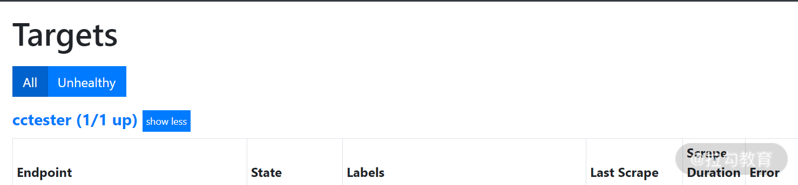
图 5：Promethues 成功安装示意图
第三步是安装 Grafana
这部分第 03 讲已经讲解过，我们就不再赘述，安装完成 Grafana 之后，添加 Prometheus 数据源，测试并保存即可。
图 6：Grafana 添加 Promethues 数据源
接着导入官方提供的展示模板就可以，点击链接。你可以自行选择相应的版本进行下载，也可以直接填写模板 ID，导入完成之后，便可以看到大屏了，示意图如下：
图 7：可视化大屏示意
到目前为止，一款基于 Linux 硬件监控的大屏就打造完成了。
如何可视化监控数据库？
通过以上的讲解，你可以思考下如果做 MySQL 的监控，哪些组件是可以通用的，需要改变的组件又有哪些。
能够思考清楚这些问题，我想你就可以基于这套组件打造出属于你自己的监控系统了。
对于监控来说，关键是面对不同的监控对象是怎么采集和怎么展示的，所以需要改变的是你的采集的 Export 和展示的模板，而Promethues + Exporter + Grafana这套组件的社区又非常丰富，所以我们可以快速实现这个需求。
下面我们下载基于 MySQL 监控的 Exporter，如下所示：
wget https://github.com/prometheus/mysqld_exporter/releases/download/v0.12.1/mysqld_exporter-0.12.1.linux-amd64.tar.gz
下载完成之后对如下命令进行解压：
tar zxvf mysqld_exporter-0.12.1.linux-amd64.tar.gz
对于 MySQL 的监控，还需要创建一个配置文件，比如我在解压后的文件夹下创建 my.cnf，来看看 my.cnf 有哪些内容：
[client]
user=root
password=123456
port=3306
host=127.0.0.1
可以看出 my.cnf 里的配置信息就是数据库的连接信息，你可以根据自己的实际部署情况进行配置，配置完成之后就可以启动了，启动命令如下：
nohup ./mysqld_exporter --config.my-cnf=my.cnf &
然后通过网页访问来验证是否部署成功，访问地址一般是 ip:9104，可以看到如下展示信息：
点击 Meteric 你也可以发现很多手机端 MySQL 监控信息的参数选项，部分信息如下：
# HELP mysql_global_variables_max_connections Generic gauge metric from SHOW GLOBAL VARIABLES.
# TYPE mysql_global_variables_max_connections gauge
mysql_global_variables_max_connections 151
这个配置表示了最大连接数的配置信息，如果能看到这一步信息也说明 mysqld_exporter 安装成功了，接着增加 promethues.yml 里的 MySQL 配置节点，示意如下：
- job_name: 'mysql'
static_configs:
- targets: ['127.0.0.1:9104']
关于Grafana 展示， 选择 Grafana 的 MySQL 监控相关模板导入即可，点击模板链接。下载并导入后就可以了，MySQL 展示效果如下图所示。
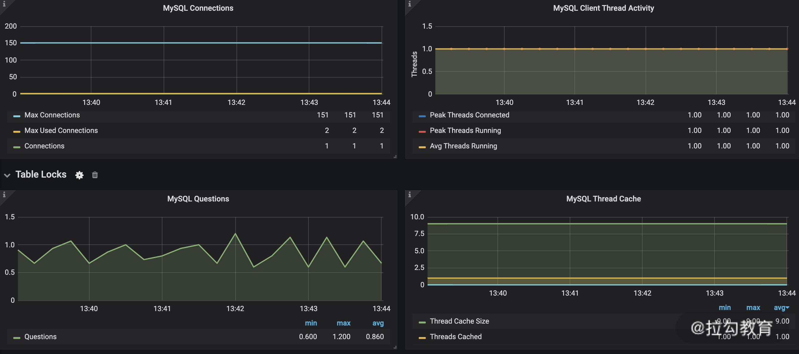
图 8：mysql 可视化监控示意图
总结
这一讲主要讲述了Promethues + Exporter + Grafana的监控方案：
- 首先需要掌握的是每种组件核心的意义以及使用方法，而不能满足于机械地执行完成上述步骤；
- 然后我是以监控硬件服务器资源和 MySQL 监控来举例，分别代表了硬件层和服务层两个维度，通过这两个例子让你更直观地明白哪些组件是可以复用的，不同的监控目标是否有配套的社区可以给你提供帮助；
- 再者我更想传递的信息是这套监控体系不仅仅是适用于我举的示例，它更是一揽子解决方案，比如说监控 Redis、JVM 等，它同样也是适用的。通过这套方法完全可以解决可视化监控层面的大部分需求，希望你能够多多实践，扫除你们公司可能存在的监控“死角”。
13 Docker 的制作、运行以及监控
模块三主要讲解了不同层级的监控以及监控的方式，作为模块三的最后一讲，我将带你来学习 Docker 的制作、运行以及监控。对于很多测试来说，经常听到 Docker 容器，但自己好像又不是很熟悉，只是用相关命令去查询日志等，而对于为什么要使用 Docker 还不是特别清楚。其实 Docker 并不难学，有时候你只是差一个学习的切入点，这一讲我会从测试的使用层面带你学习下 Docker 的要点知识，希望作为一名测试的你，对 Docker 也不会再陌生。
为什么要使用 Docker？
你可以回忆下 Docker 的图标（如图 1 所示），是不是像一条船上装了很多集装箱，其实这和Docker 的设计思想有关系，集装箱能解决什么问题呢？就是货物的隔离，如果我们把食物和化学品分别放在两个集装箱中用一艘轮船运走则无妨，但是你不可以把它们放在同一个集装箱中，其实对于 Docker 设计也是如此。
操作系统就相当于这艘轮船，上面可以有很多集装箱，即 Docker，你可以把 Docker 看作是独立的子环境，有独立的系统和应用，比如经常因为一些历史原因开发的多个模块依赖于不同的 JDK 版本，将这两个模块部署在一台 Linux 服务器上可能很容易出问题，但是如果以 Docker 的方式便很容易解决版本冲突的问题。
图 1：Docker 图标
Docker 的用法（基于 CentOS 7.0）
如何学习 Docker 呢？从应用技术维度来看它是一个容器，从学习角度来看它就是一种工具。
对于工具的学习我认为从实际的例子切入是最有代入感的，接下来我就在 CentOS 环境下安装一个基于 Ubuntu 的 Docker 环境，带你从使用层面了解下 Docker，知道 Docker 最基本的安装方式，如下所示：
yum install -y docker //安装Docker
service docker status //查看Docker运行状态
接下来运行一个 Docker 容器，我目前用的是 CentOS 系统，可现在还需要一个 Ubuntu 环境，我就需要通过如下命令基于 Ubuntu 镜像启动一个容器：
docker run -i -t ubuntu /bin/bash
通过这个命令，就直接创建了基于 Ubuntu 的 Docker 环境，并直接进入了交互 shell，这样你就可以认为是在 Ubuntu 系统下工作了，通过如下命令可以查看版本号：
root@ac3874a96890:/# cat /etc/issue
Ubuntu 20.04.1 LTS
同样的道理，如果你的 Java 服务有的依赖 JDK1.7，有的依赖 JDK1.8，则可以通过 Docker 来做不一样的服务。
上面就是一个简单的实例，在 CentOS 系统里创建一个基于 Docker 的 Ubuntu 系统以实现你特定的需求。
我们再来看看 Docker 常用的命令有哪些，这些可能是你和 Docker 打交道的过程中最常见的命令。
对于 Docker 的命令，都是在 Linux 终端直接输出就可以，比如查看 Docker 镜像，就是直接输出 docker images，展示信息如下所示：
[root@JD ~]# docker images
REPOSITORY TAG IMAGE ID CREATED SIZE
docker.io/ubuntu latest f643c72bc252
3 weeks ago 72.9 MB
docker.io/gitlab/gitlab-ce latest 6e2336419031
8 months ago 1.92 GB
- REPOSITORY 是指仓库名字；
- TAG 一般指版本号；
- IMAGE ID 是指镜像 ID；
- CREATED 指镜像创建时间；
- SIZE 指镜像大小；
如果我们要查看正在运行的 Docker 进程，可以使用命令 docker ps，如下所示：
[root@JD ~]# docker ps
CONTAINER ID IMAGE COMMAND CREATED STATUS PORTS NAMES
3e6ab93074c7 rancher/scheduler:v0.8.6 "/.r/r /rancher-en..." 25 hours ago Up About an hour r-scheduler-scheduler-1-056ab74a 2a6a718fa85d gitlab/gitlab-ce:latest "/assets/wrapper" 8 months ago Restarting (127) 11 hours ago gitlab
其中第一列是容器的 ID 号，它是一个重要的标识，通过 ID 号我们可以查看指定容器的日志以及启停容器等。读到这里你会发现，你已经知道了两个 ID：
- 一个是 IMAGE ID；
- 另外一个是 CONTAINER ID。
当你要删除镜像时，就需要使用到 IMAGE ID 了，也就是使用命令 docker rmi image id。那 IMAGE 和 CONTAINER 是什么关系呢？按照我的理解打个比方：
- IMAGE 相当于类；
- CONTAINER 相当于实例化后的对象，是在使用层面表现出来的形态。
不过你要注意的是 docker ps 只会展示运行的容器：
- 如果你想展示所有的容器，需要使用 docker ps -a，这个命令会展示运行的容器和已经停止的容器；
- 如果你机器上运行的容器很多，想看最近创建的 10 个容器，可以使用 docker ps -n 10。
- 如果你要停止运行某个容器，可以使用 docker stop container id 来终止，并且可以结合上文说的 docker ps -a 来看终止状态的容器；
- 如果要使用 docker rmi删除容器镜像，你也需要先关闭对应运行的容器才能执行删除。
值得注意的是一些初学者会误用 systemctl stop docker 这个命令，它是停止整个 Docker 服务，相当于你机器上的 Docker 全部关闭，这是初学者一定要注意到的。
作为测试或者开发，通过日志去排查问题是必不可少的，如下所示就是查看指定 Docker 容器日志的方法：
docker logs -f 3e6asb93074c7 #最后一列为容器id号
你可以将 Docker 看作是一个子系统，自然可以进入这个系统进行一定的操作。在我的使用过程中，经常会使用如下命令进入 Docker 容器找应用的 dump 信息：
docker exec -it 3e6ab93074c7 /bin/bash
以上是测试同学在使用层面最常见的命令，如果你对 Docker 还不是很了解，可以将这些作为切入点，先掌握使用，在此基础上再去了解 Docker 的架构设计以及一些进阶思想。
Dockerfile、Docker 镜像、Docker 容器的区别是什么？
上文带你熟悉了 Docker 的用法，相当于小试牛刀，可能你总听公司的人说 Dockerfile、Docker 容器、Docker 镜像，但又分不清楚，下面我就来解释下它们之间的具体区别是什么：
- Dockerfile 是一个用来构建镜像的文本文件，文本内容包含了一条条构建镜像所需的指令和说明，相当于你做镜像的材料清单和执行步骤；
- Docker 镜像是根据这些原材料做出来的成品；
- 而 Docker 容器，你可以认为是基于镜像运行的软件。
我以包饺子为例：
- Dockerfile 相当于猪肉、葱姜蒜、饺子皮这些原料的描述以及包饺子的步骤；
- Docker 镜像是你包完的生水饺；
- 而 Docker 容器则是已经煮熟可以食用的水饺了。
通过下面这个示意图可以看出从 Dockfile 到 Docker 容器的过程：
图 2：Dockfile 到 Docker 容器的过程
应用实例：如何制作基于 JMeter 的 Docker 镜像？
首先来说为什么会有这样的需求，对于用户体量比较大的公司，他们需要的系统处理能力自然也越高。在压测过程中，并不是单台压力机就可以解决问题，我们可能会在压测过程中动态调度JMeter 节点，其中一个比较方便的方式就是使用 Docker 的方式动态进行。
接下来我主要讲解如何制作基于 JMeter 的 Docker 镜像，这也是基于 Docker 扩容的关键部分。
首先我新建了一个文件夹 jmeter_docker，里面存放制作 JMeter 的 Docker 的原材料，如下所示：
[root@JD jmeter_docker]# ls
apache-jmeter-5.2.1.tgz Dockerfile jdk-8u101-linux-x64.tar.gz
接着我打开 Dockerfile，看看我的“原料表”里面有哪些内容，从下面的文件描述中可以看出我需要的“原料”和执行步骤：
FROM java:8
# 基础java版本
MAINTAINER cctester
# 作者
ENV http_proxy ""
ENV https_proxy ""
RUN mkdir /test && \
chmod -R 777 /test
# 创建/test目录，用于存放jmx脚本、jtl结果文件、html测试报告文件
ENV JMETER_VERSION=5.2.1
ENV JMETER_HOME=/usr/local/apache-jmeter-${JMETER_VERSION}
ENV JMETER_PATH=${JMETER_HOME}/bin:${PATH}
ENV PATH=${JMETER_HOME}/bin:${PATH}
# 设置JMeter环境变量
ADD apache-jmeter-${JMETER_VERSION}.tgz /usr/local
# 添加JMeter
RUN ln -snf /usr/share/zoneinfo/Asia/Shanghai /etc/localtime && \
echo "Asia/Shanghai" > /etc/timezone
在制作 JMeter 镜像时，请不要忽略后面的一个点（.），具体如下所示：
[root@JD jmeter_docker]# docker build -t jmeter .
.....省略
Successfully built 267c5b4303a6
# 你还可以通过docker images查看完成的镜像
[root@JD jmeter_docker]# docker images
REPOSITORY TAG IMAGE ID CREATED SIZE
jmeter latest 267c5b4303a6 6 minutes ago 762 MB
为了方便替换压测脚本或者参数化文件，我在 jmeter_docker 文件下创建一个 test 文件夹来存放这些文件。
mkdir test
# 在当前路径创建test目录,用户存放jmeter文件
docker run -d -it --name jmeter5.2.1 -v $PWD/test:/test jmeter
31f465a1ae646c65e855084d46313754e74a2f377776d9692c0119d32949a130 //启动成功，生成运行id
然后进入容器，看下 JMeter 是否可用：
root@31f465a1ae64:/test# jmeter -v
Dec 19, 2020 6:11:34 PM java.util.prefs.FileSystemPreferences$1 run
INFO: Created user preferences directory.
到这里我们就可以运行 JMeter 进行测试了，上传一个 cctester.jmx 脚本到 test 文件夹，使用方式以及结果反馈如下所示：
root@31f465a1ae64:/test# jmeter -n -t /test/cctester.jmx
Creating summariser <summary>
Created the tree successfully using /test/cctester.jmx
Starting standalone test @ Sat Dec 19 18:22:11 CST 2020 (1608373331470)
Waiting for possible Shutdown/StopTestNow/HeapDump/ThreadDump message on port 4445
summary + 3344 in 00:00:18 = 185.0/s Avg: 52 Min: 14 Max: 1312 Err: 0 (0.00%) Active: 10 St
到此就完成了一个基于 Docker 的 JMeter，上面演示了从制作到运行的全过程，同样对于其他Docker 的制作流程也是类似的，你可以基于一种先练习。
Docker 如何监控
通过前面章节的学习，我想对于监控你已经并不陌生，并且可以提炼出一套搭建监控体系的方法，对于 Docker 监控本质上也是换汤不换药，我主要进行思路上的一些讲解。
Docker 本身也是可以通过命令行来监控的，看下 docker stats 的输出，如下所示：
CONTAINER CPU % MEM USAGE / LIMIT MEM % NET I/O BLOCK I/O PIDS
b667f6b988b4 0.07% 381.3 MiB / 7.64 GiB 4.87% 119 MB / 105 MB 275 MB / 0 B 61
f650d561b729 0.04% 233.1 MiB / 7.64 GiB 2.98% 94.9 MB / 118 MB 139 MB / 397 MB 49
c7575bf9a7d7 0.00% 4.711 MiB / 7.64 GiB 0.06% 0 B / 0 B 954 kB / 0 B 6
2a72f849baaa 0.10% 4.008 MiB / 7.64 GiB 0.05% 18.8 MB / 14.5 MB 68.5 MB / 3.04 MB 6
760e653d4324 0.00% 4.887 MiB / 7.64 GiB 0.06% 0 B / 0 B 92.5 MB / 4.1 kB 27
你可以看到不同的实例都有对应包括 CPU、内存、磁盘、网络的监控，这样的数据比较详细直观。所以这一讲我给你留一个作业，自行搭建 Docker 的可视化监控，可以结合之前讲过的 Grafana、Promethues 等，欢迎在评论区留下你搭建过程中的心得体会以及问题。
总结
本讲作为第三模块的收尾，带你学习了 Docker 的基础知识，包括镜像制作、运行，以及监控的常见方式。通过对第三模块的系统学习，你也应该掌握常见的监控方法以及监控部署开展的思路。
14 如何从 CPU 飙升定位到热点方法？
上一模块我带你学习了如何进行系统监控，相信你已经掌握了监控部署的常见手段，通过监控这双“眼睛”，会帮助你及时发现系统资源异常，那当你发现资源异常时候，是不是觉得已经找到问题了呢？事实上并非如此，绝大多数资源异常只是你看到的表象问题，就好比你发现一个地方着火了，你可以先灭火，但是着火的原因是必须找到的，并制定相关的措施，这样才能有效避免下一次的火情。
对于系统也是这样的，当你发现了资源异常，你需要继续寻找发生问题的根因，所以作为一名专业的性能测试工程师，你也应当具备顺着表象去找问题根因的能力。这一讲我就以最流行的 Java 语言为例，带你学习如何透过现象看本质。
对于排查问题，不要只满足于掌握一些排查工具或者命令，你应当对被测语言以及运行原理有所了解，这样得出来的结论才可能更全面。
这一讲我先带你理解 Java 运行过程中的核心概念。首先要明白 Java 代码在哪里运行，一些初学者说是在 idea 或者 eclipse 里面，因为它们是写代码的软件，不过细心的同学会发现，所有的 idea 或者 eclipse 要运行 Java 代码都需要配置 Java 环境，其实 idea 是我们开发的编辑器，而真正运行代码的是 JVM。
什么是 JVM 呢？JVM 是 Java Virtual Machine 的缩写，它是一个独立出来的运行环境，通过这样的环境去进行 Java 代码中各种逻辑运行。
读到这里可能同学有疑问了：“我现在接触了很多环境，比如 JVM 运行环境、Docker 运行环境，还有云服务器之类，它们到底是什么关系？”这对于不少人来说，确实是有一定疑惑的，我先用一张图来示意下：

从图中你可以看到，一般在底层物理机上会部署多个云服务器，而云服务器上又可以部署多个基于 Docker 的 JVM 节点，这样的部署结构也是比较常用的，既能做到环境的隔离也能节约机器成本。
JVM 本身是一个较为庞大的知识体系，对于测试来说，不一定要理解 JVM 特别晦涩的概念，但至少需要了解 JVM 的结构以及运行的机制，你可以认为 JVM 是运行在 Win 或者 Linux 系统上专门运行 Java 的虚拟机，Java 虚拟机直接和操作系统交互。
Java 文件是如何被运行的
比如我们现在写了一个 HelloTester.java，这个 HelloTester.java 就类似一个文本文件，不过这个文件里面包含了符合 Java 语法规范的文本。比如我在 idea 里写一个简单的方法，如下代码所示：
public class HelloTester {
public void sayName(String name){
System.out.println("my name is "+name);
}
public static void main(String[] args){
HelloTester helloTester=new HelloTester();
helloTester.sayName("cctester");
}
那我们的JVM 是不认识文本文件的，所以它需要编译，让其成为一个会读二进制文件的 HelloTester.class，一般这个文件会产生在工程文件夹下的 Target 当中。
如果 JVM 想要执行这个 .class 文件，我们需要将其装进一个类加载器中，它就像一个搬运工一样，会把所有的 .class 文件全部搬进 JVM 里面来。如下图所示：

对于如上的过程我们再总结概括一下：
- Java 文件经过编译后变成 .class 字节码文件；
- 字节码文件通过类加载器被搬运到 JVM 中，生成的对象一般会在 JVM 中堆空间运行。
Java 对象又是如何在堆空间运行的？
同样还是根据以上代码示意，我带你看下 Java 对象如何进入堆空间以及在堆空间中运行的。
通过上文可知，编译 HelloTester.java 便会得到 HelloTester.class，执行 class 文件后系统会启动一个 JVM 进程，找到 HelloTester.class 后将类信息加载到 JVM 中。
JVM 找到 mian 方法后就可以执行 main 中的 HelloTester helloTester=new HelloTester()，也就是在 JVM 里创建一个 helloTester 对象，不过此时方法区里面还没有 HelloTester 类的信息，所以 JVM 就会去加载该类：
- 加载 HelloTester 类后，JVM 在堆内就会为新的 HelloTester 实例进行内存的分配使用；
- 然后执行 helloTester.sayName()，JVM 根据 HelloTester 对象引用定位到方法区中 HelloTester 类的类型信息的方法表，获得 sayName() 的字节码地址；
- 最后执行 sayName("cctester")。
以上便是 Java 对象在 JVM 中运行的大体过程，了解了这些基本信息之后，再来了解下堆空间中 Java 运行的线程状态，当程序开始创建线程时，便开始有了生命周期，其实就和人一样，会有“生老病死”几个状态，而对于线程来说会经历六个状态，如下表所示：
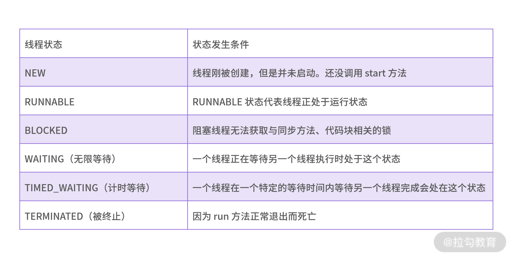
我们用一张图来直观地概括下这几个状态的演变：

从字面上来看，NEW、RUNNABLE、TERMINATED 这几个状态比较好理解，但对于 BLOCKED、WAITING、TIMED_WAITING 很多人却分不清楚，我想通过一些实际生活中的例子来帮助你理解。
BLOCKED
先来说下 BLOCKED，比如你去参加面试，可是接待室里面已经有张三正在面试，此时你是线程 T1，张三是线程 T2，而会议室是锁。这时 T1 就被 blocked，而 T2 获取了会议室的锁。
WAITING
接着我们来说 WAITING，你已经进入面试环节，面试官对你的第一轮面试比较满意，让你在会议室等第二轮面试，此时就进入了 WAITING 状态，直到第二轮面试开始你才能结束 WAITING 状态。
TIMED_WAITING
当你结束了所有面试环节，HR 对你说我们一般会在三天内给回复，如果三天内没有回复就不要再等了，此时你就进入 TIMED_WAITING 状态，如果三天内没答复，你可能会看其他机会或者直接入职备选公司了。
这几个例子我想可以帮助你理解 TIMED_WAITING、WATING、BLOCKED 状态。
一般哪些线程状态占用 CPU 呢？
处于 TIMED_WAITING、WATING、BLOCKED 状态的线程是不消耗 CPU 的，而处于RUNNABLE 状态的线程要结合当前线程代码的性质判断是否消耗 CPU：
- 纯 Java 运算代码，并且未被挂起，是消耗 CPU 的；
- 网络 IO 操作，在等待数据时是不消耗 CPU 的。
通过如上的学习，你了解了线程的状态，可以知道这个线程是在“休息”还是在“奔跑”。如果很多线程处于“奔跑”状态，必定会消耗相关的硬件资源，反过来理解，如果在性能测试过程中发现资源消耗是不是也能定位到相关的线程，从而发现代码问题呢？当你定位到具体的代码行，是不是可以和研发人员讨论下有没有优化的空间，而不是简单地将机器升级配置去解决问题，所以我将继续沿着如何定位代码问题这条思路为你讲解。
举一个实际例子，我以一个问题为切入点，首先看下面示意代码，可以看出 CPU 占用比较高的线程。
top - 17:41:39 up 168 days, 8:55, 2 users, load average: 0.71, 0.81, 0.57
Tasks: 155 total, 1 running, 153 sleeping, 0 stopped, 1 zombie
%Cpu(s): 68.4 us, 6.4 sy, 0.0 ni, 23.5 id, 0.0 wa, 0.0 hi, 1.7 si, 0.0 st
KiB Mem : 8010676 total, 326472 free, 6196656 used, 1487548 buff/cache
KiB Swap: 0 total, 0 free, 0 used. 1120940 avail Mem
PID USER PR NI VIRT RES SHR S %CPU %MEM TIME+ COMMAND
6937 root 20 0 4778684 518804 6
140 S 141.9 6.5 17:46.36 java
14643 root 20 0 4639440 821244 2472 S 11.6 10.3 1789:33 java
通过如上示例的第 3 行你可以发现服务器上 CPU 占用蛮高的，空闲值为 23.5%，也就是说占用了 76.5%；再看第 8 行，你可以看到 PID 为 6937 的进程消耗 CPU 为 141.9%。可能你有疑问了，为什么使用率可以超过 100%。这和你的服务器核数有关系，因为这个数值是每个核上该进程消耗的 CPU 之和，会有叠加关系。那你已经知道了消耗 CPU 最高的进程，然后执行如下命令：
[root@JD jmeter_test]# top -Hp 6937
top - 23:20:53 up 168 days, 14:35, 3 users, load average: 1.33, 0.71, 0.88
Threads: 788 total, 1 running, 787 sleeping, 0 stopped, 0 zombie
%Cpu(s): 75.0 us, 6.2 sy, 0.0 ni, 18.8 id, 0.0 wa, 0.0 hi, 0.0 si, 0.0 st
KiB Mem : 8010676 total, 576860 free, 5697612 used, 1736204 buff/cache
KiB Swap: 0 total, 0 free, 0 used. 1616168 avail Mem
PID USER PR NI VIRT RES SHR S %CPU %MEM TIME+ COMMAND
25695 root 20 0 5409224 1.0g 4892 S 6.2 13.2 0:00.09 java
我们可以看到每个线程的使用状态，你可以选择 25695 这个线程号，将 25695 转化为 16 进制，如下所示：
printf "%x\n" 25695
645f
然后通过 jstack 命令定位可能存在问题的方法：
jstack 6937|grep 645f -A 30
通过运行上面的命令可以查看到的内容如下图所示：
标红部分就是定位的业务代码，能够比较清晰地知道哪个方法在消耗 CPU 资源。
总结下来，要确定哪些线程状态占用 CPU 至少需要如下步骤：
- 使用 top 命令找出有问题 Java 进程的 ID；
- 开启线程显示模式（top -Hp）；
- 按照 CPU 使用率将线程排序（打开 top 后按 P 可以按 CPU 使用降序展示）；
- 记下 Java 进程 ID 及其 CPU 高的线程 ID；
- 用进程 ID 作为参数，手动转换线程 ID 成十六进制，通过 jstack 去剖析对应的线程栈，以分析问题。
你可以看到，实际过程略显烦琐，而有能力的同学可以做成 shell 脚本，这样会比较方便，当然社区也已经有这样的开源脚本供大家使用，点击访问地址。
下载完成之后进入 useful-scripts，执行 ./show-busy-java-threads.sh，执行完成后的示意图如下所示：

这样的方式是可以看到这台服务上所有导致 CPU 飙升的 Java 方法的，当然直接一键也可以查看指定进程里的 java 方法，非常简单方便，方法如下所示：
show-busy-java-threads -p <指定的Java进程Id>
总结
根据本讲的学习，相信你已经能够掌握 Java 在 JVM 中的运行过程，以及 Java 线程在 JVM 中的运行状态，并且能够从 CPU 飙升定位到代码问题。
那对于你来说，当你发现 CPU 占用过高怎么去处理呢？我相信不同的公司、不同的开发语言有不同的方案，欢迎在评论区给出你的实践。
15 如何基于 JVM 分析内存使用对象？
上一讲我带你学习了基于 JVM 的线程分析，相信你已经可以通过热点线程分析出哪些方法在消耗 CPU，拿到这些方法之后你就可以和研发人员讨论后续的优化方案了。那这一讲我们就来重点学习 JVM 内存是如何管理的，有哪些手段可以分析内存对象，并帮助你定位内存的瓶颈。
提到分析 JVM 的内存对象，可能你会问我，之前讲过如何判断服务器内存瓶颈，那 JVM 内存和服务器内存有什么联系呢。我们先来看下这两者的关系，如下图所示：

图 1：内存关系示意图
其实二者的关系很简单，对于服务器系统而言，JVM 只是其中的一部分。当操作系统内存出现瓶颈时，我们便会重点排查哪些应用会占用内存。不过对于更深一步分析内存的使用，并不仅仅是统计使用、空闲等这些数值，我们需要进一步去了解内存结构，以及内存如何分配、如何回收，这样你才能更好地确定内存的问题。
JVM 内存分配
通过第 14 讲的学习你可以知道，Java 文件一般是先编译成 class 结尾的文件，然后通过类加载器到 JVM 内存中。接着我们来看看 JVM 内存结构图，这样能够对它有个全局的了解。
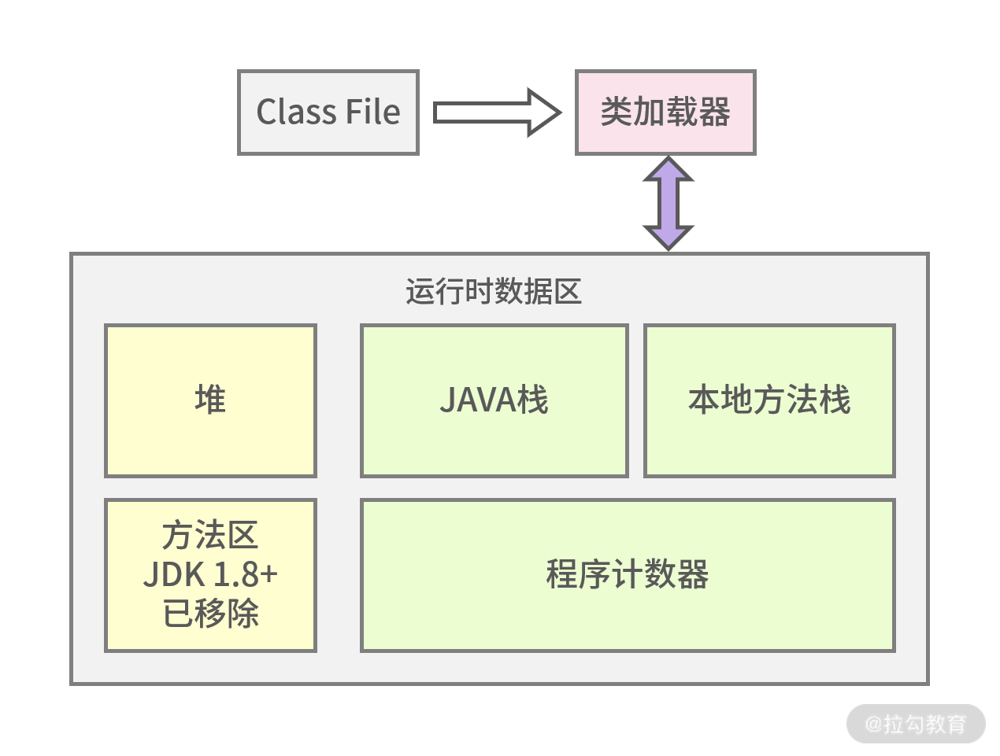
图 2：JVM 内存分配示意图
1.本地方法栈
本地方法栈保存的是 native 方法的信息，native 方法就是 Java 调用非 Java 代码的接口，为什么会有这样的设置呢？简单来说，sun 的解释器是由 C 语言实现的，而 jre 又是基于 Java 语言，所以需要 native 方法来进行跨语言的调用。
2.Java 栈
Java 栈是常用的内存区域之一，它里面存放着基本数据类型和对象的引用，可能你不太清楚什么是对象的引用，拿上一讲中 HelloTester helloTester=new HelloTester() 为例，在 Java 栈中 HelloTester 是个引用，指向在堆空间中开辟的该对象的空间。
3.方法区（JDK 1.8+已经移除）
也叫作永久区，用来存储类信息，如上文描述的 HelloTester。值得注意的是方法区在 JDK 1.8 以上已经被元空间取代，并且元空间不在 JVM 中了，而是在本地内存中独立开辟存储空间。
4.程序计数器
可以认为是线程的信号指示器，它的作用是保存线程当前程序的执行位置，以保证多线程的切换。因为在多线程的情况下，CPU 并不是完成一个线程执行再去执行另外一个线程，而是不停地切换线程执行，这时程序计数器就可以发挥作用了。
5.堆
堆区域是 JVM 调优最重要的区域，堆中存放的数据很多是对象实例，如 HelloTester 的对象存储。堆空间占据着 JVM 中最大的存储区域，存放了很多对象，所以大多数基于 JVM 的内存调优也是对堆空间的调优。
堆空间并非取之不尽，如果一直存放总有用完的时候，所以对于有用的对象应当保存起来，无用的对象应当回收，为了更好地实现这一机制，JVM 将堆空间分成了新生代和老生代，如下图所示：

图 3：GC 示意对比图
通过图 3 可以看到新生代和老年代的对比，Minor GC 发生在新生代，而 Full GC 发生在老年代。新生代分为三个区，一个 Eden 区和两个 Survivor 区。
先来看下 Eden 区的作用，大部分新生成的对象都是在 Eden 区，Eden 区满了之后便没有内存给新对象使用，Eden 区便会 Minor GC 回收无用内存，剩下的存活对象便会转移到 Survivor 区。
那两个 Survivor 区的作用分别是什么呢？两者其实是对称分布的，一个是 From 区，一个是 To 区。从 Eden 区存活下来的对象首先会被复制到 From 区，当 From 区满时，此时还存活的对象会被转移到 To 区，经历了多次的 Minor GC 后，还存活的对象就会被复制到老年代，老年代的 GC 一般叫作 FullGC 或者 MajorGC。
我们对比下新生代垃圾回收和老年代垃圾回收的区别，如下表所示：

如何定位内存占用问题
回到我们实际工作当中，当你发现 JVM 中使用的内存越来越多或者增长很快的时候，频繁 GC 的时候，应当如何去定位哪些对象导致的这些问题呢？
这其实涉及两个问题：
- 如何去观察 GC 的频次；
- 定位占用内存的对象。
1.如何观察 GC 的频次？
本部分我以 JDK 自带的工具来讲解，我一般使用 jstat 来查看 GC 的频次。首先我们来看下基本用法，如下所示：
[root@JD ~]# jstat -gc 26607 1000 3
S0C S1C S0U S1U EC EU OC OU MC MU CCSC CCSU YGC YGCT FGC FGCT GCT
512.0 512.0 320.0 0.0 86016.0 27828.5 175104.0 157974.6 122840.0 116934.9 16128.0 15060.4 5328 37.311 4 1.042 38.353
512.0 512.0 320.0 0.0 86016.0 27981.9 175104.0 157974.6 122840.0 116934.9 16128.0 15060.4 5328 37.311 4 1.042 38.353
512.0 512.0 320.0 0.0 86016.0 28885.4 175104.0 157974.6 122840.0 116934.9 16128.0 15060.4 5328 37.311 4 1.042 38.353
我们来解析下终端输入的命令：
jstat -gc 26607 1000 3
- 26607 代表查看的 PID 的 Java 进程号；
- 1000 代表每隔 1000ms 也就是 1s 显示一次；
- 3 代表一共显示三次。
接着我们再来看输出选项代表的含义有哪些？这个输出的信息含量比较大，不过信息是有对应关系的，比如 S0C 和 S0U：
- 一般 C 结尾的代表总的容量大小或者计数的次数；
- U 结尾代表已使用的容量大小。
这是通用的，你可以看到输出项中有很多以 C 或者 U 结尾。S0 则代表第一个 Survivor 区，也就是我上文说的 From 区。通过以上的讲解，我相信很多名词你不用死记硬背也能理解了，比如 S1C 和 S1U 则表示第二个 Survivor 区也就是 To 区的总容量和使用容量。
接下来我罗列下其他的输出选项含义。
- EC / EU：Eden 区的总容量/已使用空间的大小。
- OC / OU：老年代总容量/老年代已使用空间大小。
- MC / MU：方法区总容量/方法区已使用容量大小。
- CCSC / CCSU：压缩类总容量/压缩类空间使用大小。
- YGC / YGCT：年轻代垃圾回收的次数/年轻代垃圾回收消耗时间。
- FGC / FGCT： 老年代垃圾回收次数/老年代垃圾回收消耗时间。
- GCT：垃圾回收消耗总时间。
这样对比着看会更直观一点，对于上述输出选项的含义我们都需要有一定的印象，从而通过垃圾回收频率和消耗时间初步判断 GC 是否存在可疑问题。
有同学问过这样的问题，堆内存区域划分了这么多代，感觉很复杂，为什么要这么做呢？
我想不分代，内存垃圾肯定也是可以回收的。而让内存区域分代，主要就是优化垃圾回收的性能，也就是 GC 的性能。有点类似于我们日常生活中的垃圾分类，你把干湿垃圾分离，一方面有利于下一步的再利用，再者对于我们后续垃圾的处理效率也会有较大的提升。对于内存回收其实也是这样的，如果不分代那么所有的对象可能都在同一个大的区间里，GC 依次判断则效率必然是很低，如果是分代处理，对不同的区域分以不同的回收策略，这样效率会高很多。
2.如何定位占用内存的对象？
这里我将推荐一个工具 jmap，通过 jmap 可以指定 Java 进程的 PID，查看该进程的对象、数量等等，接下来我做一个演示。
首先我们来查看进程号为 18658 的应用包，如下所示：
[root@JD ~]# ps -ef|grep demo
root 18658 1 0 Dec09 ?后续省略
其中上述输出的第二列 18658 为进程号，然后将进程号通过命令组合可以查看以下信息：
[root@JD ~]# jmap -histo 18658|head -n 20
num #instances #bytes class name
----------------------------------------------
1: 157619 18840672 [C
2: 8326 8324360 [B
3: 146319 3511656 java.lang.String
4: 9224 2825584 [I
5: 65733 2103456 com.example.demo.entity.User
6: 62508 2000256 java.util.HashMap$Node
7: 21868 1618832 [Ljava.lang.Object;
- num 是编号；
- instances 是生成的实例个数；
- bytes 是实例占用的大小；
- classs name 对象的类名。
其中 [C、[S、[I、[B 对应的类型如下所示：
[C is a char[]
[S is a short[]
[I is a int[]
[B is a byte[]
你注意下第五行，这是能够最直接看到的业务类，如果是业务对象尤其需要关注，看是否一直上升。
可视化的 JVM 监控工具
在第三模块中，你可以知道，对于监控定位我一般会采用命令行结合可视化的方案一并讲解，接下来我介绍一个 JDK 自带的 JVM 监控工具：jvisual。
jvisual 能做的事情很多，监控内存泄漏、跟踪垃圾回收、执行时内存分析、CPU 线程分析等，而且通过图形化的界面指引就可以完成，接下来我主要讲述 jvisual 如何使用以及如何看内存对象的占用。
先来看下 jvisual 是如何使用的，一般我们会在启动被测的 jar 服务里进行如下配置：
nohup java -Djava.rmi.server.hostname=实际ip -Dcom.sun.management.jmxremote -Dcom.sun.management.jmxremote.port=1099 -Dcom.sun.management.jmxremote.authenticate=false -Dcom.sun.management.jmxremote.ssl=false -jar demo-0.0.1-SNAPSHOT.jar &
通过这样的方式可以启动暴露 1099 端口，且连接时不需要认证。
然后在本机电脑 jdk 路径 bin 目录下找到 jvisualvm，双击打开，如下图所示：
我们再配置相应的 jmx 连接，如下图所示：

如果出现如下图所示的界面，就证明连接成功了。
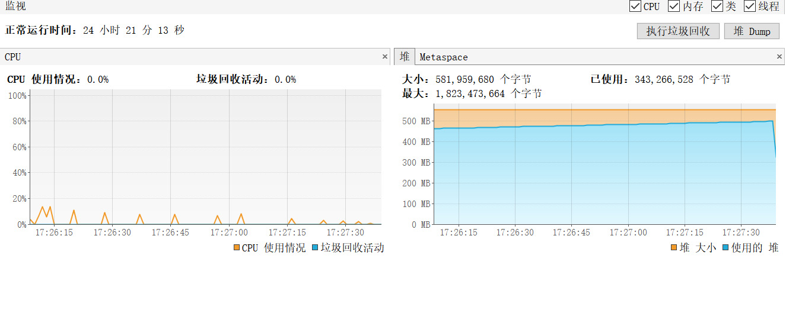
这样我们就能够概览 JVM 的 CPU 和内存的使用情况，如下图所示，通过点击抽样器，你可以分别获得对象在 CPU 和内存的占用。值得注意的是很多初学者把这部分 CPU 监控或者内存监控认为是服务器硬件级别的，这是不对的，这些都是基于 JVM 的监控。
按照内存占用进行排序是非常清晰的，你可以看到随着性能测试的进行，User 类字节占用比例越来越高，如下图所示：
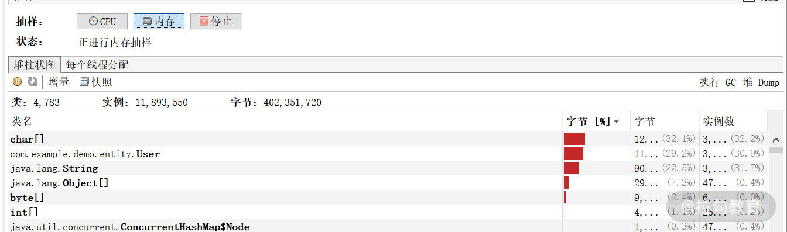
总结
通过本讲的学习，你了解了 JVM 的内存结构，知道了 Java 内存对象经常活动的区域，同时列举了常见的排查手段诊断内存问题。
16 如何通过 Arthas 定位代码链路问题？
前两讲我分别讲述了 JVM 线程分析和内存分析的实操技巧及注意点，让你可以从表象的硬件瓶颈逐渐深入到定位代码问题。类似于这样的定位方式，有一个共同点是会呈现出硬件层或者表象的一些异常。
然而并不是所有的性能问题都可以通过这样的方式去定位，有时候接口的 TPS 很低，但是各项资源占用也很低，你很难通过资源的异常去找到诊断的切入口。这样的情况也是很常见的，除了可以用《11 | 分布式服务链路监控以及报警方案》中讲到的链路监控工具定位外，这一讲我还会带来一个代码级定位工具——Arthas，Arthas 不仅仅能够让你看到 JVM 的运行状态去定位性能问题，对于很多线上代码异常问题的排查，Arthas 也是手到擒来。
下面的场景你一定很熟悉：
- 如果线上出现了偶发性问题，我们需要花费大量时间一步步排查，日志里的每个细节都不能错过，如果线上不能直接得出结论，还需要线下再去复现，很消耗时间和精力；
- 某行代码没有被执行，也没有出现报错信息，按照传统的方法可能会去加一些判断日志，这就涉及再次上线的问题，很多公司上线流程需要审批，这增加了内耗。
而熟练使用 Arthas 这个工具便可以很好地解决以上问题，接下来我将介绍下 Arthas 以及实战中怎么用 Arthas 定位问题。
Arthas 是什么
Arthas 是阿里提供的一款 Java 开源诊断工具。能够查看应用的线程状态、JVM 信息等；并能够在线对业务问题诊断，比如查看方法调用的出入参、执行过程、抛出的异常、输出方法执行耗时等，大大提升了线上问题的排查效率。
Arthas 的使用方法
首先我们用以下命令下载 Arthas：
wget https://alibaba.github.io/arthas/arthas-boot.jar
Arthas 提供的程序包是以 jar 的形式给出，因此我们可以看出 Arthas 本质也是个 Java 应用。
然后使用 java -jar 命令启动，如下所示：
java -jar arthas-boot.jar
输入启动命令后会跳出选项让你选择要监控的后台 Java 进程，如下代码所示：
[root@JD ~]# java -jar arthas-boot.jar
[INFO] arthas-boot version: 3.3.3
[INFO] Found existing java process, please choose one and input the serial number of the process, eg : 1. Then hit ENTER.
* [1]: 689 cctestplatform.jar
[2]: 31953 unimall.jar
[3]: 14643 sentinel-dashboard-1.7.2.jar
[4]: 20421 org.apache.zookeeper.server.quorum.QuorumPeerMain
[5]: 10694 demo-0.0.1-SNAPSHOT.jar
其中序号表示的就是 Arthas 自动识别的所在服务器的 Java 进程，然后输入要监控的进程的序号并回车，Arthas 便会接着启动，出现 Arthas Logo 之后便可以使用 Arthas 了，如下代码所示：
5
[INFO] arthas home: /root/.arthas/lib/3.4.4/arthas
[INFO] Try to attach process 10694
[INFO] Attach process 10694 success.
[INFO] arthas-client connect 127.0.0.1 3658
wiki https://arthas.aliyun.com/doc
tutorials https://arthas.aliyun.com/doc/arthas-tutorials.html
version 3.4.4
pid 10694
另外如果你想要打印帮助信息可以在启动命令后面加 -h 来完成，如下所示：
java -jar arthas-boot.jar -h
Arthas 实操演示
1.利用 Arthas 线程相关命令定位死锁问题
在排查问题前我们先了解下死锁，死锁是指由于两个或者多个线程互相持有对方所需要的资源，导致这些线程处于等待状态，无法前往执行。如果没有外力的作用，那么死锁涉及的各个线程都将永久处于循环等待状态，导致业务无法预期运行，所以我们的代码要避免死锁的情况。
死锁就好比打游戏排位的时候， A 和 B 不能选相同的英雄，A 选了诸葛亮，但是突然间后悔了，想重新选貂蝉，但是貂蝉已经被 B 选了，但是 B 选择之后也后悔了，想重新选诸葛亮，但是诸葛亮已经被 A 选了。这个时候 A 和 B 都不让步，结果是谁都无法选到想要的英雄。
死锁的代码演示如下：
//线程Lock1代码示意
while(true){
synchronized("obj1"){
Thread.sleep(3000);//获取obj1后先等一会儿，让Lock2有足够的时间锁住obj2
synchronized("obj2"){
System.out.println("Lock1 lock obj2");
}
}
}
//线程Lock2代码示意
while(true){
synchronized("obj2"){
Thread.sleep(3000); //获取obj2后先等一会儿，让Lock1有足够的时间锁住obj1
synchronized("obj1"){
System.out.println("Lock2 lock obj1");
}
}
}
把以上代码放到服务器中执行，然后我们可以使用 Arthas 的 jvm 命令查看到线程死锁数目为 2，说明程序发生了死锁，如下图所示：
图 1：死锁示意图
接下来我们输入 thread -b 命令查看当前阻塞其他线程的线程，然后我们可以看到 Lock 1 被阻塞了，访问的资源被 Lock 2 占用，如图 2 所示，根据提示的行数我们便能找到死锁位置，对代码进行优化。
图 2：thread 演示死锁详情图
2.使用 trace 命令查看耗时
我们写几个不同循环次数的方法，分别代表方法耗时不同，代码如下：
//示例代码,timeCost是个接口
public String timeCost(){
cost1();
cost2();
cost3();
.......
}
private void cost3() {
//进行200万次循环......
}
private void cost2() {
//进行10万次循环......
}
private void cost1() {
//进行10次循环......
}
部署之后我们使用 trace 来查找最耗时的方法，在此过程中需要知道包名、类名，以及方法的名字。上述代码方法所在包名为 com.cctest.arthas_demo.controller，类名为 StressSceneController，所以我们需要输入如下 trace 命令：
trace
com.cctest.arthas_demo.controller.StressSceneController timeCost
输完命令后回车，然后 arthas 程序就进入了等待访问状态。这时候访问接口 /timeCost，我们就可以看到被测程序台在疯狂打印日志，等结束之后，arthas 命令窗口便输出了各方法耗时时间，如图 3 所示：
图 3：方法耗时详情
我们可以看到 timeCost 方法总耗时 258391ms：
- cost 1 调用耗时 9 ms；
- cost 2 调用耗时 13909 ms；
- cost 3 调用耗时 244472 ms。
cost 2 和 cost 3 方法耗时都比较长，当你能够定位到方法级别的消耗时长时，基本已经能够找到问题的根因了。
3.使用 watch 命令观察被测方法的参数和返回值
当遇到线上数据问题时，我们一般有两种查找问题的途径：
- 在开发环境中模拟线上数据来复现问题，不过因为环境等各方面的不同，很多情况下模拟数据复现都有难度；
- 在生产日志里查找线索，如果没有相关方法的入参，以及没打印返回值的话，就难以找到有效的信息。
这两种传统查找问题的方式都存在一定的局限性，而使用 Arthas 的 watch 命令可以很方便地根据观察方法入参和出参来判断是否正确定位了代码问题。
为了能够让你更清楚地看到方法名和出参入参，我写了一段示例代码，如下所示：
@GetMapping("/login")
public String login(@RequestParam(value="userName") String userName, @RequestParam(value="pwd")String pwd){
return "OK";
}
然后我们输入 watch 命令，其中 login 后面指定了需要控制台输出的内容，params[0] 代表第一个参数，如果参数有多个，只要 params 加上下标即可，returnObj 代表返回值，示意代码如下：
watch com.cctest.arthas_demo.controller.StressSceneController login "{params[0],params[1],returnObj}"
你可以看到输入上述命令后的返回信息如下：
图 4：watch 返回信息
4.使用 tt 命令定位异常调用
tt 与上面的 watch 的命令有些类似，都可以排查函数的调用情况。但是对于函数调用 n 次中有几次是异常情况，用 watch 就没有那么方便，使用 tt 命令就可以很方便地查看异常的调用及其信息。
使用 tt 命令示意如下：
tt -t com.cctest.arthas_demo.controller.StressSceneController login
然后我们访问接口，每次访问的状态和结果显示如图 5 所示：
图 5：tt 的返回信息
从图中可以看出，tt 显示的信息比 watch 全面。其中 IS-RET 项如果为 false，即为错误的调用。
以上部分介绍了 Arthas 命令在实际例子中的使用，我是通过命令行的方式来演示的，所以你需要登上服务器。之前有提到过，并不是所有的同学都有权限直接进行服务器的操作，那面对这样的情况如何使用 Arthas 呢？其实也是有解决方法的，接下来我们将介绍通过 Web 的方式操作 Arthas。
通过 Web 的方式操作 Arthas
Arthas 提供了客户端访问程序 Arthas Tunnel Server，这样我们便可以操作 Arthas 了，接下来我介绍下 Arthas Tunnel Server 的操作步骤以及操作原理。
1.Arthas Tunnel Server 的操作步骤
（1）下载 arthas-tunnel-server.jar，点击下载地址；
（2）把 Arthas Tunnel Server 部署到能和线上服务器通信的目标服务器；
（3）确保线上服务器启动了 Arthas，线上启动 Arthas 的操作命令，如下所示：
java -jar arthas-boot.jar --tunnel-server 'ws://目标服务器ip:目标服务器port/ws' --target-ip
- 这里说的 target-ip 是指被测程序所在服务器的 IP；
- 目标服务器即 Arthas Tunnel Server 启动的服务器，端口号默认是 8080。
（4）在浏览器中输入 http://目标服务器ip:目标服务器port，就可以访问 WebConsole，如图 6 所示：
图 6：Web 方式 Arthas 启动
然后我们输入 ip、port 和 agentid 就可以连上被测程序，并且可以开始对被测程序输入 Arthas 命令。接下来的 Arthas 的使用和命令行方式是一样的，不再赘述。
2.Arthas Tunnel Server 的操作原理
通过 Arthas Tunnel Server 的操作步骤，我们可以总结出它实现 Web 访问的原理：所有节点的 Arthas 服务启动都会向注册中心（Arthas Tunnel Server）注册，注册中心维护了一个节点列表，当客户端发起访问某个节点，Arthas Tunnel Server 便会从维护的节点列表找到与请求的 ip 和端口号对应的节点进行访问，然后把访问结果返回给客户端。具体流程如图 7 所示：
图 7：Arthas Tunnel Server 原理图
通过 Web 方式使用 Arthas 与我们上面所说的非 Web 的方式最大的不同：
- Web 方式可以授权连接之后通过浏览器输入 Arthas 命令；
- 非 Web 方式则是直接 ssh 连接服务器输入命令。
两者比较起来 Web 方式虽然操作麻烦些，不过在权限管控比较严格的情况下提供了使用 Arthas 的可行性。
总结
这一讲我主要介绍了 Arthas 是什么、为什么使用 Arthas，以及通过实际操作演示 Arthas 是怎么实时定位代码问题的，并且为你介绍了 Arthas Tunnel Server 的操作步骤以及原理。上面第三部分的 4 个操作实例都是比较典型的排查线上问题的方式，通过实例的演示也能看出来 Arthas 的强大和便捷性。
17 如何应对 Redis 缓存穿透、击穿和雪崩？
上一讲我带你学习了如何应用 Arthas 定位代码以及链路问题。这一讲我将带你来学习一个关键的内存数据库中间件 Redis，希望你可以了解它的作用，以及在使用过程中的常见问题以及解决方案。
为什么使用内存数据库？
首先我们来看看最早期的 Web 架构是什么样的，如图 1 所示：

图 1：早期架构
这是互联网早期的常用架构，不过这样的架构一般只满足于基本的业务运转，一旦业务量迅速增高，就会出现各种请求延迟，甚至超时响应或者直接请求拒绝的情况 ，也就是在高访问量下会发生性能问题，而且这样的框架性能问题又集中在数据库层面。
那么问题来了，为什么会产生这种情况呢？由于数据库的数据是存在硬盘上，硬盘的 I/O 读写瓶颈会直接影响并发量。既然磁盘 I/O 读写时瓶颈，我们是不是可以采用速度更快的内存来存储常用但数据量不算大的数据呢？答案是肯定的。
为了解决上面的问题，目前通用的做法是引入基于内存的数据库，这样的数据库一般是把数据先放到内存里，引入缓存中间件之后的项目 Web 服务架构图如下所示：
图 2：演变架构
这样便可以较大程度缓解传统数据库带来的磁盘 I/O 读写瓶颈，而我们最常使用的基于内存的数据库就是 Redis 和 MemCached。
Redis 和 Memcached 对比
1.存储方式
- MemCached 目前只支持单一的数据结构 Key-Value 形式；
- Redis 支持多种数据结构，有字符串、列表、集合、散列表、有序集合等。
2.持久化
持久化就是把数据从内存永久存储到磁盘里，可以防止断电等异常情况下数据丢失等问题。目前 Redis 支持持久化，而 MemCached 不支持。遇到灾难，MemCached 无法恢复数据，Redis 可以恢复数据，保证了数据的安全性。
从以上特点可以看出 Redis 在数据多样性和安全性上远高于 MemCached。以我的从业经历讲，MemCachded 使用频率越来越低，绝大多数的业务场景使用 Redis 居多。
Redis 带来的性能影响
我们列举一个案例来看 Redis 带来的性能影响。
我们使用 Spring Boot 开发连接 Redis 的 demo，分如下三步。
（1）在 Maven 中引入 Spring Boot 使用的 Redis 类库，如下代码所示：
<dependency>
<groupId>org.springframework.boot</groupId>
<artifactId>spring-boot-starter-data-redis</artifactId>
<version>2.4.2</version>
</dependency>
（2）通过注解方式获取 RedisTemplate，如下代码所示：
@Autowired
private RedisTemplate<String, String> redisTemplate;
（3）使用 Redis 提供的 API 实现业务代码的缓存读写，如下代码所示：
@GetMapping("/getRedisTestData")
public Result getRedisTestData(){
String redisTestListData = null;
try {
redisTestListData = redisTemplate.boundValueOps("redisTest.findAll").get();
//如果redis中没有数据的话
if(null == redisTestListData){
//查询数据库获得数据
List<RedisTest> redisTestList = simulateSceneRepository.findAll();
//转换成json格式字符串
ObjectMapper om = new ObjectMapper();
redisTestListData = om.writeValueAsString(redisTestList);
//将数据存储到redis中，下次在查询直接从redis中获得数据，不用再查询数据库
redisTemplate.boundValueOps("redisTest.findAll").set(redisTestListData);
log.info("从Mysql数据库获得数据");
}else{
log.info("从redis缓存中获得数据");
}
} catch (Exception e){
log.error("e:{}",e);
}
return Result.resultSuccess(null,redisTestListData,"数据读取成功");
}
通过如上三步就可以完成 Java 使用 Redis 的 demo，我大概总结下代码流程，第一次先判断 Redis 中是否存在查询的数据，如果没有就需要从数据库中读取数据了，读取成功之后把数据回写到 Redis 中，后面的请求就能直接从 Redis 中直接读取了，较大地减少了对数据库的查询压力。我们可以通过运行上面写好的代码来看下实际效果。
首先我们向数据表 redis_test 插入 10w 条数据，然后分两次访问该接口，对比下两次访问的响应时间。
第一次直接从 MySQL 数据库读取，一共花了 39.43s，如下图所示：

图 3：MySQL 取数据耗时
而第二次数据已经进入 Redis，请求只需要 2.62s，节省了很长时间。值得注意的是为了演示效果，取出的数据条数达到 10w+，所以响应时间也达到了秒级别。在正常的互联网业务当中，Redis 读写操作均在毫秒级别。
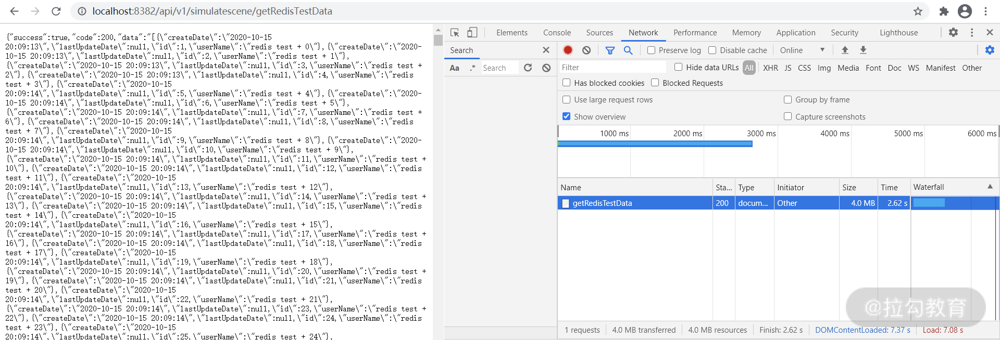
图 4：Redis 取数据耗时
从上面实例可以看出使用 Redis 和不使用 Redis 性能差距明显，所以从目前的互联网项目来讲，使用 Redis 是一个非常普遍的情况，接下来我们来了解下 Redis 其他特性和优缺点。
Redis 其他特性以及优缺点
1.Redis 的特性
主从复制功能
虽然数据在内存中读写速度比较快，但是在高并发情况下也会产生读写压力特别大的情况，Redis 针对这一情况提供了主从复制功能。
主从复制的好处有如下两点：
- 提供了 Redis 扩展性，当一台 Redis 不够用时，可以增加多台 Redis 作为从服务器向外提供服务；
- 提供了数据备份和冗余服务器，当 Redis 主服务器意外宕机，从服务器可以顶替主服务器向外提供服务，增加了系统的高可用性。
脚本操作
Redis 提供了 lua 脚本操作，你可以将 Redis 存取操作写到 lua 脚本里，然后通过 Redis 提供的 API 来执行 lua 脚本，这样就可以实现 Redis 相关操作。
我们同样可以用 Redis 提供的 API 直接实现 Redis 相关操作，那么为什么有时候又要绕一圈去操作 lua 脚本呢？因为 lua 脚本能够保证操作的原子性，即所有的操作当作一个操作，要么全部失败要么全部成功。而直接使用 API 不一定能保证一连串操作的原子性，所以当需要保证原子性的时候需要使用 lua 脚本。
发布与订阅
该特性可以将 Redis 作为消息中间件，在服务端产生消息，然后在客户端消费消息队列里的消息，但是作为消息队列不是 Redis 的强项，所以不推荐使用。比如 Redis 作为消息队列消息并非完全可靠，会产生消息丢失的问题，并且也不支持消息分组。在性能上，如果入队和出队操作频繁，那 Redis 性能比起 RabbitMq 等常用消息队列来说还是有差距的。
了解了 Redis 的一些特性，那使用过程中有没有一些注意点呢？其实我们也会踩到坑，比较常见的问题是缓存穿透、缓存击穿以及缓存雪崩，接下来就来讲讲这些问题出现的现象以及如何解决。
2.Redis 的缺点
缓存穿透
缓存穿透的情况是 Redis 和 MySQL 数据库都没有这条数据，但是用户不断并发发起请求，请求压力会同时落到数据库和缓存上，这样的情况相对于设计初衷来说，对系统的压力就会大很多了，而且这也是黑客发起攻击的手段之一，找寻你的系统是否存在漏洞。
那在项目中如果遇到缓存穿透我们该如何解决呢？
遇到缓存穿透，我们可以在请求访问缓存和数据库都没查到数据时，给一个默认值或者 Null 值，即 Key-Null。然后该缓存值的有效时间可以设置得短点，比如 30s。在业务代码中判断如果是 Null 值就取消查询数据库，或者间隔 30s 之后重试，这样的方式可以大幅度减轻数据库的查询压力。
缓存击穿
单个数据在缓存中不存在，而在数据库中存在。一般这种情况都是缓存失效导致的，在缓存失效的时间段有大量并发用户访问，首先访问缓存，因为 Key 已经过期了，所以查不到数据，然后所有查询压力都会落到数据库上，造成数据库的压力过大。并且还有可能因为并发问题导致重复更新缓存而过多占用缓存资源。
在项目中如果遇到缓存击穿问题，该如何解决呢？
- 对于一些经常被访问的热点数据，可以根据业务特性主动检查使其 Redis 数据永不过期，当然这样的设置并不代表说这条数据一直不更新而处在 Redis 中，而是根据数据字段中的失效时间和系统时间的对比主动检查更新数据，使 Redis 数据不会过期；
- 通过后台定时刷新，根据缓存失效时间节点去批量刷新缓存数据，这个适合 Key 失效时间相对固定的场景。
缓存雪崩
大量数据在同一时间失效，会造成数据库查询压力过大导致宕机。缓存雪崩与缓存击穿的区别在于缓存击穿是单个数据失效，缓存雪崩是多个数据同一时间失效。
在项目中如果遇到缓存雪崩的问题，我们该如何解决呢？以下 3 种方法可以帮我们解决。
- 如果程序设置的缓存过期时间统一为一个固定的值，比如 5s、10s、15s 等等，那么很有可能出现大量数据在同一时间失效。这个时候我们可以设置不同的过期时间，比如统一时间加上一个随机时间，这样可以让缓存的时间尽量均匀分布一点。
- 不设置过期时间，让程序的定时任务自动定时更新或者清除缓存
- 使用集群化的方式，保证高可用。
总结
通过本讲的学习你了解了 Redis 的作用，Redis 使用过程中遇到的缓存穿透、缓存击穿以及缓存雪崩现象，及如何解决此类问题，相信你已经有了一个更深刻的认识。
18 如何才能优化 MySQL 性能？
上一讲带你学习了 Redis，知道了它带来的好处，不过 Redis 虽然高效迅速，但如果不能合理使用依然会存在不少性能问题。
这一讲我会带你学习以 MySQL 为例的持久化的数据库，说到数据库优化这块，很多同学并不陌生，比如添加索引、读写分离之类。那如何第一时间发现索引有没有缺失、索引有没有生效、扫描了多少行、读写分离用的什么策略，很多同学又不知道如何回答，本讲我就围绕 MySQL 优化的点来一起聊聊。
为什么要对 MySQL 进行优化？
有一句俗话叫作“Web 项目即增删改查”，虽然这句话未必精确，但足以体现 Web 项目对数据的依赖程度，MySQL 数据库作为数据的重要载体，自然围绕着 MySQL 的优化也是必不可少的。而且对于一些发展中公司来说，往往项目初期数据量比较少，并没有把数据库优化列入日常的活动当中。当业务累积到足够的数据量时，会发现系统越来越慢，这时候数据库优化才引起重视，并投入大量的人力物力，当然不仅仅消耗的是企业成本，还会牺牲用户体验。
一次 SQL 的查询过程是怎样的？
简单来说，我们可以将这个过程概括为以下 5 步。
- 客户端发送一个查询 SQL 给数据库服务器。
- 服务器先检查查询缓存，如果命中，也就是查询缓存中有这条记录，那么便直接返回缓存中的结果。如果没有命中，则进入下一阶段（解析器）。
- 服务器由解析器检查 SQL 语法是否正确，然后由预处理器检查 SQL 中的表和字段是否存在，最后由查询器生成执行计划，也就是 SQL 的执行方式或者步骤。
- MySQL 根据优化器生成的执行计划，调用存储引擎的 API 来执行查询。
- 将结果返回给客户端。
然后我们将上述步骤使用流程图展示，如下所示：
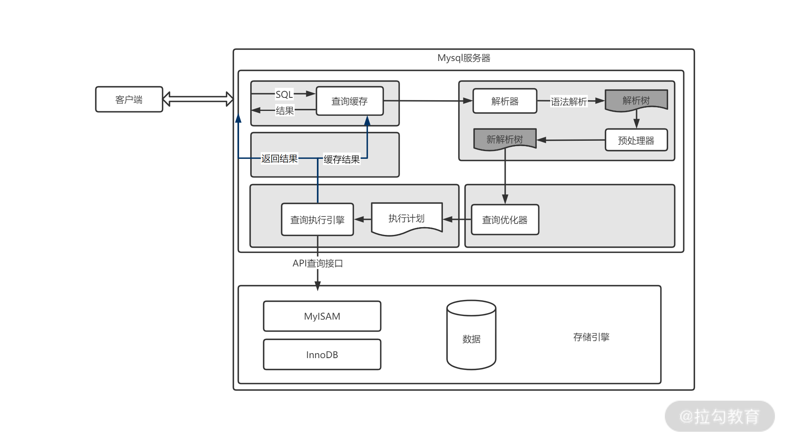
图 1：MySQL 查询过程
对于 MySQL 来说，影响性能的关键点有哪些？
关于这个问题，我想大家都应该可以回答一些，比如硬件层面、系统层面等等。但在性能领域中，一个不能忽略的问题是你需要考虑影响的面有多少，以及如何优化才是最具有性价比的。以我的经验来看，如何做优化更具性价比也存在漏斗模型，如图 2 所示。
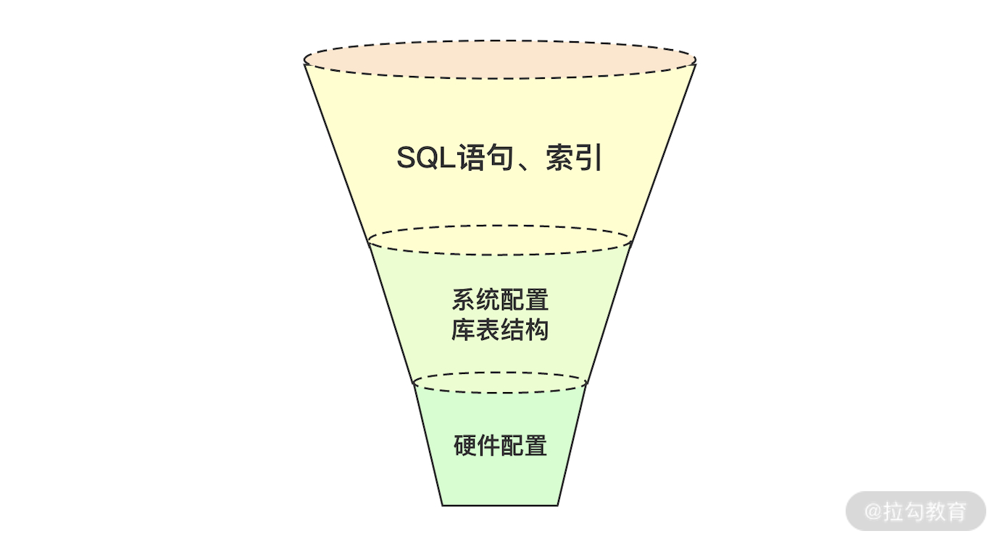
图 2：漏斗模型
从上往下看：
- SQL 语句和索引相关问题是最常见的，带来的价值也是最明显的；
- 系统配置库表结构带来的价值次之；
- 而硬件层次的优化优先级是不高的。
1.硬件配置
现在我们基本上都是使用云服务器，就会涉及服务器配置选型，对于数据库处理复杂 SQL 而言，尽量选择高频 CPU，而且数据库一般都会开辟缓存池来存放数据，所以在服务器选型的时候内存大小也需要考虑。一般来说数据库服务器的硬件配置的重要性高于应用服务器配置，这方面了解下即可，测试工作基本上不会涉及数据库服务器的选型，而且一旦选型固定之后不会轻易改变数据库的硬件配置。
2.MySQL 系统配置选项
（1）max_connections
这个参数表示 MySQL 可以接收到的最大连接数，可以直接通过如下命令查看：
mysql> show variables like '%max_connections%';
+-----------------+-------+
| Variable_name | Value |
+-----------------+-------+
| max_connections | 151 |
+-----------------+-------+
那如何查看 MySQL 的实际连接数呢？我们可以用如下命令进行查看：
mysql> show status like 'Threads%';
+-------------------+-------+
| Variable_name | Value |
+-------------------+-------+
| Threads_cached | 7 |
| Threads_connected | 64 |
| Threads_created | 1705 |
| Threads_running | 1 |
+-------------------+-------+
其中 Threads_connected 是你实际的连接数。如果 max_connections 的值设置较小，在高并发的情况下易出现 “too many connections” 这样的报错，我们可以通过如下命令调节配置从而减少此问题的发生，你可以根据所在公司的实际情况进行配置。
mysql> set global max_connections=500;
（2）innodb_buffer_pool_size
这个参数实际定义了 InnoDB 存储引擎下 MySQL 的内存缓冲区大小。
来解释下这句话什么意思，首先 InnoDB 存储引擎是 MySQL 的默认存储引擎，使用也很广泛。缓冲池是什么呢？其实就和缓存类似，通过上一讲学习你可以知道，从磁盘读取数据效率是很低的，为了避免这个问题，MySQL 开辟了基于内存的缓冲池，核心做法就是把经常请求的热数据放入池中，如果请求交互的数据都在缓冲池中则会很高效，所以一般数据库缓冲池设置得会比较大，占到操作系统内存值的 70%～80%。
那如何评估缓冲池大小是否合理？
我们可以通过计算缓存命中率来判断，公式为：
(1-innodb_buffer_pool_reads/innodb_buffer_pool_read_request) * 100
一般来说，当缓存命中率低于 90% 就说明需要加大缓冲池了。
关于公式中的两个变量的查看方式，通过如下命令你就可以获得：
show status like 'Innodb_buffer_pool_read_%';
+---------------------------------------+----------+
| Variable_name | Value |
+---------------------------------------+----------+
| Innodb_buffer_pool_read_ahead_rnd | 0 |
| Innodb_buffer_pool_read_ahead | 51 |
| Innodb_buffer_pool_read_ahead_evicted | 0 |
| Innodb_buffer_pool_read_requests | 25688179 |
| Innodb_buffer_pool_reads | 2171 |
+---------------------------------------+----------+
3.SQL 优化
对于成熟的互联网公司来说，不管是硬件还是配置层面的数值都已经优化且形成了一定的经验值，其实不太可能频繁地改动。而对于业务的 SQL 来说，每天都会更新，一旦 SQL 本身执行很慢，无论从配置或者是硬件进行优化都无法根本解决问题。SQL 的问题也是你做数据库调优接触最多的，也是多样化的，所以接下来我们就继续学习慢 SQL 相关的知识点。
（1）什么是慢 SQL？
从默认定义上来讲，执行超过 10s 的 SQL 都被定义为慢 SQL。不过对于互联网应用来讲，10s 的时间标准过于宽松，如果是比较热门的应用 10s 都不能返回结果，基本可以定义为事故了，所以很多企业都会修改这个配置。先来看下怎么查看慢查询配置的时间，如下命令示意，你可以看到默认的配置是 10s。
mysql> show variables like 'long_query_time';
+-----------------+-----------+
| Variable_name | Value |
+-----------------+-----------+
| long_query_time | 10.000000 |
如果需要修改该配置为 1s，可以在 my.cnf 中添加，这样的方式需要重启 MySQL 服务。
long_query_time=1
（2）如何获取慢 SQL？
你在分析慢 SQL 之前首先需要获取慢 SQL，如何获取慢 SQL 呢，其中的一种方式是在 my.cnf 中配置，如下示意：
slow_query_log=1
slow_query_log_file=/data/mysql-slow.log
你就可以将慢 SQL 写入相应的日志文件内。除了这个方法，在测试过程中，我也会使用 show full processlist 这个命令实时获取交互的 SQL，通过观察 state 状态以及 SQL 出现的频率也能判断出来是不是慢 SQL。
（3）如何分析慢 SQL？
关于慢 SQL，绝大多数原因都是 SQL 本身的问题，比如写的业务 SQL 不合理，返回了大量数据；表设计不合理需要多表的连接查询；索引的问题等。在我的经验当中，众多 SQL 问题中索引相关的问题也是最突出的，在我看来索引的相关问题有以下几种。
索引缺失
首先来看看什么是索引，索引是一种单独地、物理地对数据库表中一列或者多列进行排序的数据库结构。索引的作用相当于图书的目录，可以根据目录的页码快速找到所需要的内容。当数据库存在大量数据做查询操作，你就需要 check 是否存在索引，如果没有索引，会非常影响查询速度。
在 InnoDB 中，我们可以简单地把索引分成两种：聚簇索引（主键）和普通索引。按照我的理解来看，聚簇索引是叶子节点保存了数据，而普通索引的叶子节点保存的是数据地址。
通常推荐在区分度较高的字段上创建索引，这样效果比较好，比如，一个会员系统中，给用户名建索引，查询时候可以快速定位到要找的数据，而给性别字段建索引则没有意义。
索引失效
添加索引只是其中的一个必要步骤，并不是添加完成后就万事大吉了。在一些情况下索引其实是不生效的，比如索引列中存在 Null 值、重复数据较多的列、前导模糊查询不能利用索引（like '%XX' 或者 like '%XX%'）等。在一般情况下你可以使用执行计划查看索引是否真正生效，在下一讲中，我也会用更多的实例带你看这个问题。
联合索引不满足最左前缀原则
又来新概念了，有两个问题：
- 什么是联合索引；
- 什么又是最左前缀。
首先来解释下联合索引，用大白话解释就是一个索引会同时对应多个列，比如 c1、c2、c3 为三个字段，则可以通过 index_name(c1,c2,c3) 的方式建立联合索引，这样做的好处是什么呢？通过这样的方式建立索引，等于为 c1、(c1,c2)、(c1,c2,c3) 都建立了索引。因为每增加一个索引，也会增加写操作的磁盘开销，所以说联合索引是一种性价比比较高的建立索引的方式。
那么什么是最左前缀原则呢？你刚刚在 c1、c2、c3 上建立了联合索引，索引中的数据也是按 c1、c2、c3 进行排序，最左前缀顾名思义就是最左边的优先，比如如下 SQL 命令：
SELECT * FROM table WHERE c1="1" AND c2="2" AND c3="3"
这条 SQL 就会按照从左到右的匹配规则，如果打破最左前缀规则联合索引是不生效的，如下写法所示：
SELECT * FROM table WHERE c1="1" AND c3="3"
那如何判断 SQL 有没有走索引或者索引有没有生效呢？接下来我们要了解一个新概念叫作执行计划，什么是执行计划呢？
执行计划通常是开发者拿到慢 SQL 之后，优化 SQL 语句的第一步。MySQL 在解析 SQL 语句时，会生成多套执行方案，然后内部会进行一个成本的计算，通过优化器选择一个最优的方案执行，然后根据这个方案会生成一个执行计划。开发者通过查看 SQL 语句的执行计划，可以直观地了解到 MySQL 是如何解析执行这条 SQL 语句的，然后再针对性地进行优化。
（4）如何查看 SQL 语句的执行计划？
我们可以在执行 SQL 的前面添加 desc，如下所示：
desc select * from user
或者添加 explain，如下所示：
mysql> explain select * from user;
+----+-------------+-------+------------+------+---------------+------+---------+------+------+----------+-------+
| id | select_type | table | partitions | type | possible_keys | key | key_len | ref | rows | filtered | Extra |
+----+-------------+-------+------------+------+---------------+------+---------+------+------+----------+-------+
| 1 | SIMPLE | user | NULL | ALL | NULL | NULL | NULL | NULL | 9984 | 100.00 | NULL |
+----+-------------+-------+------------+------+---------------+------+---------+------+------+----------+-------+
1 row in set, 1 warning (0.01 sec)
对于 explain 返回的内容我选择一些重点解释一下，尤其是对性能产生不利的表现内容。
table
table 显示的是这一行的数据是关于哪张表的，上述内容中显示的表名就是 user。
type
这是重要的列，显示连接使用了何种类型，类型还是蛮多的，我选择最不理想的 ALL 类型和你解释一下，这个连接类型对于查询的表进行全表数据扫描，这种情况比较糟糕，应该尽量避免，上面的示例就进行了全表扫描。
key
key 表示实际使用的索引。如果为 Null，则没有使用索引，这种情况也是尤其需要注意的。
rows
rows 表明 SQL 返回请求数据的行数，这一行非常重要，返回的内容中 SQL 遍历了 9984 行，其实也证明了这条 SQL 遍历了一张表。
extra
关于 extra，我列举两个你需要注意的状态，因为这样的状态是会对性能产生不良的影响，意味着查询需要优化了。
**Using filesort：**表示****SQL 需要进行额外的步骤来发现如何对返回的行排序。它会根据连接类型、存储排序键值和匹配条件的全部行进行排序。
**Using temporary：**表示****MySQL 需要创建一个临时表来存储结果，非常消耗性能。
总结
本讲相对系统地讲述了常见的 MySQL 数据库性能影响点，你可以从一个全局的角度去思考诊断 MySQL 性能问题的步骤，同时我也讲了执行计划，通过执行计划可以发现 SQL 性能问题产生的原因，这是一个非常实用的手段。
19 如何根治慢 SQL？
上节课带你学习了 MySQL 优化的整体思路，我们将优化策略逐渐进到了索引层面，性能优化其实也是这样，一般大处着眼，小处着手。这节课我将从更多的实例出发诊断 SQL 相关的问题，你可以认为是第 18 讲的补充和进阶。
show full processlist
上一讲已经提到过在你诊断 SQL 之前，首先要知道的是如何获取这些有问题的 SQL，一般有两种方式可以获取：
- 从慢日志文件中获取，上一讲也描述过配置方法；
- 通过 show full processlist 实时获取交互的 SQL。
有同学留言说不知道具体应该如何使用 show full processlist，所以这里我演示下该命令的具体用法。show full processlist 可以显示哪些 SQL 线程正在运行，也可以在 MySQL 交互行下直接运行，来看下这个命令会给你展现哪些信息。
mysql> show full processlist;
+--------+---------+---------------------+----------------+---------+------+----------+-----------------------+
| Id | User | Host | db | Command | Time | State | Info |
+--------+---------+---------------------+----------------+---------+------+----------+-----------------------+
| 121553 | root | localhost | mall | Sleep | 48 | | NULL |
| 139421 | netdata | localhost | NULL | Sleep | 1 | | NULL |
| 140236 | root | localhost | cctester | Sleep | 1778 | | NULL
我们来解释下信息中每列的含义。
- ID：作为一个标识 ID，如果你打算 kill 一个 SQL，可以根据 ID 来进行。
- User：当前正在执行 SQL 的用户，只显示你登录账号权限范围内能够看到的用户。
- Host：显示这个语句是从哪个 ID 和端口上发出的。
- db：当前线程使用的库名。
- Command：连接执行的命令状态，一般是 Sleep、Query、Connect 等。
- Time：状态持续的时间（单位是秒）。
- State：显示当前 SQL 语句的状态，这是一个非常重要的判断标识，比如多次刷新命令时，发现 SQL 常处于 Sending data，那么这条 SQL 大概率是存在问题的。
- Info：显示正在执行的 SQL 语句，这也是你能直接拿到慢 SQL 的方式。
实例对比：索引对性能的影响
关于索引的基本作用通过《18 | 如何才能优化 MySQL 性能？》的内容相信你已经了解，而在性能层面更直观的影响，我想通过对比实验结果也许会更清晰一点。
我们新建了一个 user 表，表结构如下：
mysql> desc user;
+-------------+--------------+------+-----+---------+-------+
| Field | Type | Null | Key | Default | Extra |
+-------------+--------------+------+-----+---------+-------+
| id | int(11) | NO | | NULL | |
| Name | varchar(18) | YES | | NULL | |
| password | varchar(20) | YES | | NULL | |
| description | varchar(100) | YES | | NULL | |
+-------------+--------------+------+-----+---------+-------+
通过查看表信息，你可以发现我并没有添加索引，接着我使用 10 个线程测试一条SQL，其中SQL内容是通过 ID 号来查看数据，性能结果表现如下：
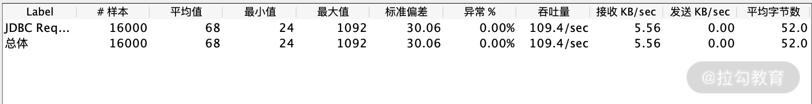
在 ID 列添加索引后继续基于同一条 SQL ，进行 10 线程压测，结果数据如下：

从测试结果来看，在未添加索引的情况下，TPS 是 109.4，而添加逐渐索引后，同等压力下 TPS 达到了 240.2。
CPU 资源占用如下所示：

CPU 使用率图
红线：Total 黄线：User 蓝色：Iowait 绿线：System
在未添加索引的情况下，在 18:05 之前有 CPU 使用飙高，在添加索引后我在 18:10 基于同一场景测试，你会发现服务端资源使用率较低，而且 TPS 还翻了一倍以上。
通过这样一段对比，相信你能非常直观地感觉到索引带来的性能差别。
那我们是不是添加了索引就万事大吉呢，其实不是这样的，索引也有效率之分，也会存在索引失效等情况，接下来我就结合上一节课讲的执行计划来判断索引使用是否合理。有了执行计划我认为绝大多数 SQL 的问题你都可以找到优化的方向，而且对于我来说执行计划带来的直接好处是并不需要进行专门的性能测试就可以提前发现慢 SQL。
继续通过执行计划来看索引的使用技巧
1.索引覆盖
什么是索引覆盖？
走索引查询数据时，如果该索引已经包含需要的数据，则称之为索引覆盖。若索引中不能拿到想要的数据，则需要通过主键拿一整行数据，这个过程叫回表，需要一次 IO 操作，所以我们写 SQL 时尽量使用索引覆盖，降低 IO 开销。
如何判断是否是索引覆盖？
通过 extra 判断是否显示 Using index，如下示例所示：
mysql> show create table cctester \G;
*************************** 1. row ***************************
Table: cctester
Create Table: CREATE TABLE `cctester` (
`id` int(11) NOT NULL,
`name` varchar(11) DEFAULT NULL,
`mobile` bigint(20) DEFAULT NULL,
`score` int(11) DEFAULT NULL,
`subject` varchar(20) DEFAULT NULL,
PRIMARY KEY (`id`),
KEY `idx_name` (`name`),
KEY `idx_subject` (`subject`)
) ENGINE=InnoDB DEFAULT CHARSET=utf8mb4
1 row in set (0.21 sec)
//上述这是表结构
mysql> desc select name from cctester where name ="cc";
+----+-------------+----------+------------+------+---------------+----------+---------+-------+------+----------+-------------+
| id | select_type | table | partitions | type | possible_keys | key | key_len | ref | rows | filtered | Extra |
+----+-------------+----------+------------+------+---------------+----------+---------+-------+------+----------+-------------+
| 1 | SIMPLE | cctester | NULL | ref | idx_name | idx_name | 47 | const | 1 | 100.00 | Using index |
+----+-------------+----------+------------+------+---------------+----------+---------+-------+------+----------+-------------+
1 row in set, 1 warning (0.01 sec)
//上述是第一段执行计划
mysql> desc select name,score from cctester where name ="cc";
+----+-------------+----------+------------+------+---------------+----------+---------+-------+------+----------+-------+
| id | select_type | table | partitions | type | possible_keys | key | key_len | ref | rows | filtered | Extra |
+----+-------------+----------+------------+------+---------------+----------+---------+-------+------+----------+-------+
| 1 | SIMPLE | cctester | NULL | ref | idx_name | idx_name | 47 | const | 1 | 100.00 | NULL |
+----+-------------+----------+------------+------+---------------+----------+---------+-------+------+----------+-------+
1 row in set, 1 warning (0.00 sec)
//上述是第二段执行计划
首先看下 cctester 表的结构，再观察下面两个 SQL 的执行计划对比，第一个 SQL 走 name 字段，只拿 name 字段内容，第一段执行计划显示了 Using index，说明索引覆盖了；而第二个 SQL 需要额外取 mobile 字段，所以需要回表，你也可以发现第二段执行计划 Extra 列返回的 NULL，所以没有用到索引覆盖，这些细小的差别都可以通过执行计划捕捉到。
2.联合索引
联合索引就是多个字段组成联合索引，在上一讲我们也讲过基本的作用和最左前缀规则。不过我发现一个误区，同样还是这样的一个示例 SQL，索引规则同样是 index_name(c1,c2,c3)，下面这样的示例一定是符合最左前缀规则的：
SELECT * FROM table WHERE c1="1" AND c2="2" AND c3="3"
那么，我改变下 SQL 的查询顺序，如下所示：
SELECT * FROM table WHERE c2="2" AND c3="3" AND c1="1"
请问这样还满足最左前缀规则吗？对于 AND 这样的情况，可能很多同学觉得这个顺序和索引列不一致，应该是不满足最左前缀了，事实上不是这样的。
不管你是使用 (c1,c2,c3) 或者是 (c2,c3,c1)，都是使用了联合索引，虽然表面上 (c2,c3,c1) 不符合最左前缀规则，但是 MySQL 本身是有查询优化器，它会确定这条 SQL 根据联合索引的字段顺序，最后再确定执行计划。所以说在查询字段满足条件的情况下字段顺序查询优化器是可以帮助你“纠正”的，在你项目实操过程中，对最左前缀的理解不要只局限于字面，如果你不确定可以通过执行计划来判断。
上面我举的例子是 SQL 中查询条件进行 AND 连接，看上去比较简单，我再讲一个联合索引的常用场景，看下面这样一个案例：
mysql> desc select name,subject,score from cctester where subject = 'english' order by score;
+----+-------------+----------+------------+------+---------------+------+---------+------+------+----------+-----------------------------+
| id | select_type | table | partitions | type | possible_keys | key | key_len | ref | rows | filtered | Extra |
+----+-------------+----------+------------+------+---------------+------+---------+------+------+----------+-----------------------------+
| 1 | SIMPLE | cctester | NULL | ALL | idx_subject | NULL | NULL | NULL | 6 | 50.00 | Using where; Using filesort |
+----+-------------+----------+------------+------+---------------+------+---------+------+------+----------+-----------------------------+
1 row in set, 1 warning (0.02 sec)
//以上是第一段执行计划
mysql> alter table cctester add index idx_subject_score_name(subject,score,name);
Query OK, 0 rows affected (0.15 sec)
//以上添加联合索引
mysql> desc select name,subject,score from cctester where subject = 'english' order by score;
+----+-------------+----------+------------+------+------------------------------------+------------------------+---------+-------+------+----------+--------------------------+
| id | select_type | table | partitions | type | possible_keys | key | key_len | ref | rows | filtered | Extra |
+----+-------------+----------+------------+------+------------------------------------+------------------------+---------+-------+------+----------+--------------------------+
| 1 | SIMPLE | cctester | NULL | ref | idx_subject,idx_subject_score_name | idx_subject_score_name | 83 | const | 3 | 100.00 | Using where; Using index |
+----+-------------+----------+------------+------+------------------------------------+------------------------+---------+-------+------+----------+--------------------------+
//以上是第二段执行计划
这里还是基于 cctester 的表结构，根据 where 条件 subject 查询之后再根据 score 排序，第一段执行计划可以看到 SQL 没有用到索引且需要额外的排序，而第二段执行计划中 SQL 使用了联合索引且不用再排序。在原理上解释就是，(subject,score,name) 索引中根据 subject 定位到的数据已经根据 score 排好顺序了，不需要再排序，这种 order by 的场景是联合索引使用最经典的案例。
3.索引失效的场景
索引虽好，但不代表你建了这条索引就一定会被使用，下面我列举了常用的索引失效的情况，也是日常工作中常见的一些情况。
隐式类型转换
表结构中类型是 varchar，SQL 中用的 int，这是开发最常忽略的问题，如下示例所示：
(root@localhost) [t]> show create table t\G
*************************** 1. row ***************************
Table: t
Create Table: CREATE TABLE `t` (
`id` int(11) NOT NULL,
`name` varchar(11) DEFAULT NULL,
`score` varchar(11) DEFAULT NULL,
PRIMARY KEY (`id`),
KEY `idx_name` (`name`),
KEY `idx_score` (`score`)
) ENGINE=InnoDB DEFAULT CHARSET=utf8mb4
1 row in set (0.00 sec)
//以上是建表语句
(root@localhost) [t]> desc select * from t where socre = '99';
+----+-------------+-------+------------+------+---------------+------------+---------+-------+------+----------+-------+
| id | select_type | table | partitions | type | possible_keys | key | key_len | ref | rows | filtered | Extra |
+----+-------------+-------+------------+------+---------------+------------+---------+-------+------+----------+-------+
| 1 | SIMPLE | t | NULL | ref | idx_score | idx_score | 47 | const | 2 | 100.00 | NULL |
+----+-------------+-------+------------+------+---------------+------------+---------+-------+------+----------+-------+
1 row in set, 1 warning (0.00 sec)
(root@localhost) [t]> desc select * from t where socre = 99;
+----+-------------+-------+------------+------+---------------+------+---------+------+------+----------+-------------+
| id | select_type | table | partitions | type | possible_keys | key | key_len | ref | rows | filtered | Extra |
+----+-------------+-------+------------+------+---------------+------+---------+------+------+----------+-------------+
| 1 | SIMPLE | t | NULL | ALL | idx_score | NULL | NULL | NULL | 4 | 25.00 | Using where |
+----+-------------+-------+------------+------+---------------+------+---------+------+------+----------+-------------+
1 row in set, 3 warnings (0.00 sec)
观察上面例子可以发现，score 字段是 varchar 类型，当 SQL 中忘写单引号则走不到索引，接下来我继续讲解实例，我举的例子你不用过多考虑业务特性，单纯看索引问题即可。
模糊匹配开头
由于 MySQL 最左匹配原则，所以查询条件模糊开头无法命中索引，如下所示：
(root@localhost) [t]> desc select * from t where score like '%9';
+----+-------------+-------+------------+------+---------------+------+---------+------+------+----------+-------------+
| id | select_type | table | partitions | type | possible_keys | key | key_len | ref | rows | filtered | Extra |
+----+-------------+-------+------------+------+---------------+------+---------+------+------+----------+-------------+
| 1 | SIMPLE | t | NULL | ALL | NULL | NULL | NULL | NULL | 4 | 25.00 | Using where |
+----+-------------+-------+------------+------+---------------+------+---------+------+------+----------+-------------+
1 row in set, 1 warning (0.00 sec)
通过执行计划你会发现上面的情况并没有命中索引。
or 不同条件
从上面建表结构中我们可以看到 name 字段和 score 字段都有索引，但直接写 or 查询两个字段无法使用索引，这种场景，我们可以将 or 改写成 union 即可。通过如下实例的第一段和第二段执行计划中涉及的索引项就可以看出。
(root@localhost) [t]> desc select * from t where name = 'allen' or score = '456';
+----+-------------+-------+------------+------+---------------------+------+---------+------+------+----------+-------------+
| id | select_type | table | partitions | type | possible_keys | key | key_len | ref | rows | filtered | Extra |
+----+-------------+-------+------------+------+---------------------+------+---------+------+------+----------+-------------+
| 1 | SIMPLE | t | NULL | ALL | idx_name,idx_score | NULL | NULL | NULL | 4 | 43.75 | Using where |
+----+-------------+-------+------------+------+---------------------+------+---------+------+------+----------+-------------+
1 row in set, 1 warning (0.00 sec)
//第一段执行计划
(root@localhost) [t]> desc select * from t where name = 'allen' union all select * from t where score = '456';
+----+-------------+-------+------------+------+---------------+------------+---------+-------+------+----------+-------+
| id | select_type | table | partitions | type | possible_keys | key | key_len | ref | rows | filtered | Extra |
+----+-------------+-------+------------+------+---------------+------------+---------+-------+------+----------+-------+
| 1 | PRIMARY | t | NULL | ref | idx_name | idx_name | 47 | const | 1 | 100.00 | NULL |
| 2 | UNION | t | NULL | ref | idx_score | idx_score | 47 | const | 1 | 100.00 | NULL |
+----+-------------+-------+------------+------+---------------+------------+---------+-------+------+----------+-------+
2 rows in set, 1 warning (0.00 sec)
//第二段执行计划
总结
本讲从实际工作出发，以慢 SQL 中问题的重灾区索引为切入点，以执行计划为手段诊断了索引的常见问题，这些都是 SQL 优化中最常见的知识点，通过实例可以让你明白这些优化带来的好处。
20 结束语 线上全链路性能测试实践总结
作为专栏的最后一篇，我想和你聊聊线上全链路性能测试。全链路性能测试是一个非常热门的话题，不少公司也在摸索实践，这篇就以我的经验来谈谈对线上全链路性能测试的认知和实践的总结。
线上全链路性能测试提出的背景
按照我的认知，线上全链路性能测试是由阿里巴巴在 2012 年双 11 之后首次提出来的，因为当年的双 11 用户访问高峰时期系统成功率只有 50%，对于阿里同学来说，那应该是心情很沉重的双 11，复盘后发现其中的一块网卡被打满，在线下的性能测试环境中并没有发现这个问题。
为什么呢，说白了线下的压测理论上都是“缩容”测试，什么是缩容呢，就是服务器数量或者硬件配置是远低于线上的，规模容量是缩小了很多的。这导致了一些问题并不能充分被发现，实际访问量也不能很好被预估。在这样的问题背景下，线上的全链路性能测试就被提出来了。其实这和我开篇的一个观点是一致的，性能测试体系能够发展迅速，往往是公司各种大促的血泪史催化出来的，风险控制往往也能够带来最直接的生产力。
什么是线上全链路性能测试？
线上全链路性能测试就是基于真实的业务场景，实际线上环境，模拟多线程对各个业务链路进行压力测试的过程。
很多人提出了一个问题，有了线上全链路测试还需要线下性能测试吗？关于这个问题我也回答过，线上线下的性能测试理论上应当是互补的关系，线下往往权限充足而且不会对生产环境产生影响，可以发现更多的基本性能问题以及各类异常性能场景的测试，而线上是最真实的环境，对于性能验收的准确性至关重要。
什么样的情况适合全链路性能测试？
我并不认为所有的公司都适合直接进行线上性能测试，罗马不是一天建成，性能测试成熟的公司基本都经历了一段血泪史，是以一定的代价换的，对于线上全链路的开展我觉得需要几个前提：
1.已经在性能环境下进行过性能测试，但线上依然存在性能事故；
2.有频繁的促销需求，每次大促业务规则变化多；
3.对硬件成本较为敏感，需要进行容量测试，验证扩容缩容后的系统处理能力。
线上全链路性能测试聚焦的目的
相信你已经在线下进行过多轮的测试验证，线上的性能测试绝不是让你再去一遍遍执行发现基础的性能问题，线上性能测试的核心目的是验证系统的容量、部署结构的优化空间、整体线上的稳定性。
线上全链路性能测试实施重要前提
1.评估线上全链路压测的可行性
最核心要思考的点是能不能做到压测数据的隔离，所谓数据隔离你应该能够想到的就是数据库中压测数据不能跟真实的数据混在一起，从而无法区分，比如用户数据、下单商品数据等。通用的做法是先对数据进行打标，打标的意思就是做标记，比如压测数据都会有一个能够区别于真实业务的标识，比如加 header，比如用户名基于相同的 test 开头的标记，一般对于数据隔离的方案有两种。
（1）标记清理
第一种做法就是把标记的数据进行删除，一般在压测完成之后根据标识统一清理数据，所以做标记是一个重要前提，还有个前提是你需要整理清楚涉及哪些库表，有没有依赖关系，并且做到和开发以及 DBA 确认，这样删除数据更安全。
（2）影子库表
什么是影子库表呢？简单来说就是做一个和生产一样的库表，然后把压测数据加入影子库表，这样的做法相对于清理数据的方式，后期的事情会少一点，并不需要每次都一定要清理数据。这样的做法也有一些注意点，影子库表并不是仅仅建一个空的库表，它也需要你将生产数据迁移，还有这样的做法前期工作量会大一点，需要进行中间件改造自动识别压测流量才能进入影子库表。
这两种方式各有千秋，可以根据公司的业务特性做具体的方案落地。
2.对业务场景梳理
理清核心链路流程，线上有很多的接口，所谓线上的全链路性能测试也不会把所有的接口纳入测试范围当中。我的做法是先理清楚核心的业务模块，你必须要对你的业务模块有最基本的感知，哪些是核心模块，哪些是非核心，下面我罗列一个电商基本的业务模块图。

你可以看到仅文字描述的功能就已经非常多了，如果再去细分接口，可能一张图表都放不下。你首先要考虑的就是在这些模块中，哪些是不用进行全链路性能测试的，比如类似于商家管理系统，这本身是后台系统，并不直接面向用户。同样在你确定需要测试的性能模块中进一步确定哪些接口需要进行性能测试，关于细分到接口的选择我一般将大促时的访问数据进行参考，具体的方法[《07 | 你真的知道如何制定性能测试的目标吗？》]也有所提及。
3.理清数据传输链路
什么是数据传输链路呢？可以想象一下你在线下压测的场景，是不是内网环境从你的压测机就直接到服务暴露出的访问接口。而线上的链路可能远比这个复杂得多，比如数据是不是首先经过防火墙、硬件层的负载均衡等，你需要把这些链路也理清楚，说白了就是要理清线上的部署架构。这也是性能测试需求分析的步骤，防火墙之类的底层结构是不会轻易变动的，但对于线上实际的应用部署节点可能变动就很多了，我们会针对不同的应用节点部署结构和数量经常调整，所以在压测之前需要前置好这些条件并记录清楚。
线上全链路性能测试实施要点
首先需要表明一些观点，很多测试人员在实际测试过程中要么是自己造数据构造场景，如果遇到一些需要开发配合的可能会被直接打回，在线上的全链路性能测试过程中可以说系统改造是必需的，线上全链路性能测试也是多团队协作完成的，并不是测试人员的“独角戏”。
很多测试同学在进行线下性能测试时，几乎是一个人完成所有的活动，包括编写脚本、压测、监控、分析等等。在开展线上全链路的时候，可能会把这一套也继续沿用，这其实是一个误区，我认为线上的性能测试相对于线下至少有三个特性。
1.时间敏感
怎么理解时间敏感呢？线上的性能测试一般都需要申请窗口期，并不是你个人决定压测就可以直接进行了，一般来说，绝大部分公司都是选择在凌晨进行，这样对实际用户的影响最小。就以测试同学来举例，线上的性能测试也有很多准备工作，测试之前会有很多试验性的工作，比如商品数据是否有效、用户 token 是否过期。一旦进行正式的压测环节，一般需要按照时间去分解任务，遇到问题讲究快速解决，需要最正确的人去做相关的任务协同，比如哪些服务集群、哪些中间件需要哪些人去监控，在有效的时间内以达到最高效率。
2.权限敏感
权限敏感很好理解，说白了你作为测试不可能像在性能测试环境一样具备充足的权限，比如可以在性能测试环境随时重启服务，增删改查数据等。作为测试在线上你不可能有这些权限，所以线上的性能测试并不是你可以自由发挥的。
3.高风险
说到高风险，通过其他两个特性也能看出来，如果风险不大，时间和权限自然也就没这么敏感了，所以基于风险较高，我们在线上全链路性能测试执行的时候，更希望有一个“项目经理”的角色，进行人员安排、任务同步、风险预警等，这样的角色需要深入了解性能流程以及系统的风险控制。
测试人员可以扮演的角色？
1.全链路性能测试执行者
作为一名测试执行者，你需要更关注测试本身的内容，那测试本身的内容有哪些呢？我以电商网站为例来说明，根据每家公司的业务或者体量的不同，具体的事物会有差别，但一些思路是可以借鉴的：
- 压测机环境准备，压测机分布式节点检查；
- 压测数据准备和检查，如会员数据、商品下单数据；
- 参数化文件切割；
- 脚本以及参数化文件分发；
- 测试场景执行以及指标收集和记载。
2.线上全链路测试的“项目经理”
我刚刚也说了线上的性能测试需要一名“项目经理”，很多人思维定式认为这位项目经理需要一定级别的 leader 来担任，其实并不完全是这样。以我的思路来看，性能测试一线经验丰富的同学来承担更适合，当然这位同学不仅仅需要性能经验丰富，也需要对架构以及业务有基本盘的认知，至少做到心中有底。
如果作为一个线上全链路压测实施的“项目经理”，你需要组织什么事情呢？我用一个思维导图罗列下。

线上全链路测试的风险
对于很多公司还是很忌惮在线上直接开始性能测试，因为觉得这样做风险太大了。这个担心是有道理的，阿里巴巴在刚刚提出这个议题时，内部也有很多不同的声音，一旦性能测试导致线上系统出现故障，轻则影响用户体验，重则系统不可用、真金白银的损失，任何人都不想为这个测试风险而买单。
虽然文章中列举了很多事项和注意点，但真正实施起来还是可能会遇到问题，所以线上性能测试的手段也是需要被测试的，比如先基于单条数据的打标、隔离、清理等，而且更需要的是发散性思维去思考，能不能把相关问题都考虑全面了，比如我之前的举例，对数据库进行数据隔离，那你有没有考虑到如 ES 数据、日志数据是否也需要做到有效的隔离呢？
监控预警
在线上全链路压测过程中，报警是非常重要的，出现意外情况可以及时终止压测，防止造成额外损失。报警的规则也是需要严格制定的，硬件的、系统的、业务的，包括响应延时等都应当设置相关的阈值等，第三模块有非常详细的描述，相信你应该对监控已经比较熟悉了。
总结
线上的全链路性能测试并不是高不可攀的技术，虽然有一定的技术门槛，但真正运作起来其实考验的是组织能力，线上全链路性能测试我认为是在线下专项性能测试上做的升级。这篇也是本专栏最终的收尾了，希望你能有所收获。
虽然本专栏已经结束了，但是后续我仍然会在微信公众号（软件测试架构师俱乐部）发表更多的知识，欢迎你来关注。